扉页
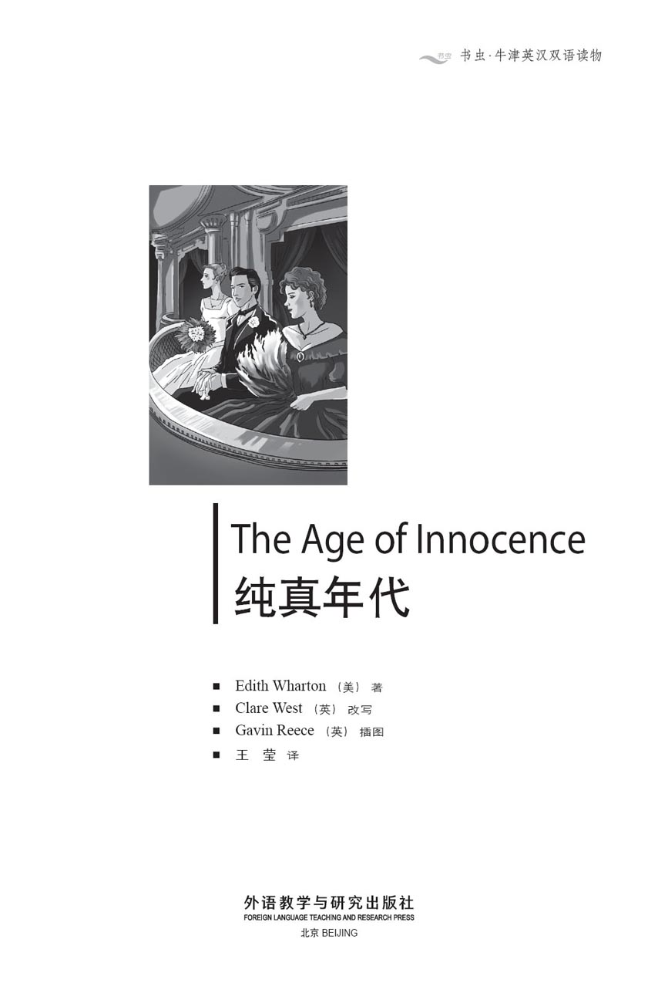
版权页
京权图字：01-2013-7830
Published by arrangement with Oxford University Press for sale in the People's Republic of China only and not for export therefrom. This edition is for sale in the mainland of China only, excluding Hong Kong SAR, Macao SAR and Taiwan.
© Oxford University Press 2008
Oxford is a registered trademark of Oxford University Press
图书在版编目（CIP）数据
纯真年代：英汉对照／（美）华顿（Wharton, E.）著；（英）韦斯特（West, C.）改写；（英）里斯（Reece, G.）绘；王莹译．—北京：外语教学与研究出版社，2014.5
（书虫·牛津英汉双语读物）
书名原文：The age of innocence
ISBN 978-7-5135-4446-7
Ⅰ．①纯… Ⅱ．①华… ②韦… ③里… ④王… Ⅲ．①英语－汉语－语言读物 ②长篇小说－美国－现代 Ⅳ．①H319.4：I
中国版本图书馆CIP数据核字（2014）第091627号
出版人 蔡剑峰
责任编辑 金 辉
封面设计 蔡 颖
出版发行 外语教学与研究出版社
社 址 北京市西三环北路19号（100089）
网 址 http://www.fltrp.com
版 次 2014年5月第1版
书 号 ISBN 978-7-5135-4446-7
凡侵权、盗版书籍线索，请联系我社法律事务部
举报电话：（010）88817519
电子邮箱：banquan@fltrp.com
法律顾问：立方律师事务所 刘旭东律师
中咨律师事务所 殷 斌律师
内容简介
内容简介
对于富人和时尚人士来说，19世纪70年代的纽约社交界充斥着各种规矩：何时应该打黑领带，或者何时适宜进行下午拜访；可以邀请谁参加晚上的聚会，或者听歌剧时可以挨着谁坐；哪些人受欢迎，哪些人不受欢迎。
埃伦·奥兰斯卡伯爵夫人是一位波兰伯爵的妻子，曾在欧洲生活多年，现在孤身一人回到了她在纽约的家。她希望摆脱自己不幸婚姻带来的痛苦，但她不了解纽约社交界的各种规矩。而纽兰·阿彻则深谙于此；他的未婚妻——年轻的梅·韦兰——也按照这些规矩生活着，因为她无法想象还有其他的生活方式。
纽兰、梅和埃伦陷入了一场爱情、名誉和责任的战斗之中。在这场战斗中，礼貌的微笑背后隐藏着强烈的情感，一切尽在不言中，而那穿过拥挤房间的意味深长的一瞥，更是胜过千言万语。
THE AGE OF INNOCENCE
THE AGE OF INNOCENCE
For the rich and the fashionable, New York society in the 1870s was a world full of rules: rules about when to wear a black tie, or the correct time to pay an afternoon visit; rules about who you could invite to your evening parties or sit next to at the opera; rules about who was an acceptable person, and who was not.
Countess Ellen Olenska, who has lived for many years in Europe as the wife of a Polish Count, returns alone to her family in New York. She hopes to leave the pain of her unhappy marriage behind her, but she does not understand the rules of New York society. Newland Archer, however, understands them only too well, and the girl he is engaged to marry, young May Welland, lives her life by the rules, because she cannot imagine any other way of living.
Newland, May, and Ellen are caught in a battle between love, honour, and duty – a battle where strong feelings hide behind polite smiles, where much is left unsaid, and where a single expressive look across a crowded room can carry more meaning than a hundred words.
目录
PEOPLE IN THIS STORY
PEOPLE IN THIS STORY
Newland Archer's family
Newland Archer
Janey Archer, Newland's sister
Adeline Archer, Newland's mother
Louisa van der Luyden, Adeline's cousin
Henry van der Luyden, Louisa's husband
the Misses du Lac, Newland's aunts
the Duke of St Austrey, Louisa's English cousin
May Welland's family
May Welland
Mr Welland, May's father
Mrs Welland, May's mother
Countess Ellen Olenska, May's cousin
Count Olenski, Ellen Olenska's husband
Mrs Manson Mingott, grandmother to May and Ellen
Medora Manson, Ellen's aunt
Mr Lovell Mingott, uncle to May and Ellen
Mrs Lovell Mingott, Mr Mingott's wife
Regina Beaufort, niece to Mrs Manson Mingott
Julius Beaufort, Regina's husband
Other people in the story
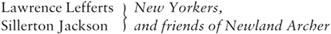
Sophy Jackson, Sillerton Jackson's sister
Mrs Lemuel Struthers, a friend of Julius Beaufort
Monsieur Rivière, Count Olenski's French secretary
Mr Letterblair, a lawyer, and Newland Archer's employer
the Carfrys, English friends of Mrs Archer
the Blenkers, friends of Ellen Olenska
Fanny ring, Julius Beaufort's mistress, later wife
Dallas, Mary, and Bill Archer, Newland Archer's children
Fanny Beaufort, daughter of Julius Beaufort and Fanny Ring
人物介绍
人物介绍
纽兰·阿彻的家族
纽兰·阿彻
珍妮·阿彻，纽兰的妹妹
阿德琳·阿彻，纽兰的母亲
路易莎·范德卢顿，阿德琳的表姐
亨利·范德卢顿，路易莎的丈夫
几位杜拉克小姐，纽兰的姨妈
圣奥斯特雷公爵，路易莎的英国表弟
梅·韦兰的家族
梅·韦兰
韦兰先生，梅的父亲
韦兰太太，梅的母亲
埃伦·奥兰斯卡伯爵夫人，梅的表姐
奥兰斯基伯爵，埃伦·奥兰斯卡的丈夫
曼森·明戈特太太，梅的外婆，埃伦的奶奶
梅多拉·曼森，埃伦的姑妈
洛弗尔·明戈特先生，梅的舅舅，埃伦的叔叔
洛弗尔·明戈特太太，明戈特先生的妻子
雷吉娜·博福特，曼森·明戈特太太的侄女
朱利叶斯·博福特，雷吉娜的丈夫
其他人物
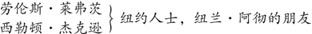
索菲·杰克逊，西勒顿·杰克逊的妹妹
莱缪尔·斯特拉瑟斯太太，朱利叶斯·博福特的朋友
里维埃先生，奥兰斯基伯爵的法国秘书
莱特布莱尔先生，律师，纽兰·阿彻的老板
卡弗莱一家，阿彻太太的英国朋友
布伦克斯一家，埃伦·奥兰斯卡的朋友
范妮·林，朱利叶斯·博福特的情人，后成为其妻子
达拉斯·阿彻、玛丽·阿彻、比尔·阿彻，纽兰·阿彻的子女
范妮·博福特，朱利叶斯·博福特和范妮·林的女儿
1 A stranger in New York
1
A STRANGER IN NEW YORK
When Newland Archer arrived at the New York Academy of Music, one January evening in the early 1870s, the opera had already begun. There was no reason why the young man should not have come earlier. He had had dinner at seven, alone with his mother and sister, and then sat unhurriedly smoking his cigar in his private library. But fashionable young men did not arrive early at the opera. That was one of the unwritten rules of society, and in Newland Archer's New York these rules were as important as life and death.
Another reason for the young man's delay was that he enjoyed looking forward to pleasures just as much as actually experiencing them, and Gounod's Faust was one of his favourite operas. As he opened the door at the back of his box, he felt he had chosen just the right moment to arrive. Christine Nilsson, the Swedish singer whom all New York had gathered to hear, was singing, 'He loves me – he loves me not – he loves me!'
She sang in Italian, of course, not in English, since an unquestioned law of the musical world demanded that the German words of French operas sung by Swedish singers should be translated into Italian, for the clearer understanding of English-speaking audiences. This seemed as natural to Newland as all the other laws that governed his life, like never appearing in society without a flower in his buttonhole, and having two silver-backed brushes for his hair.
He turned his eyes away from the singer and looked at the audience. Directly opposite him was the box of old Mrs Manson Mingott, who was now so fat that she was unable to attend the opera, but whose family often came on fashionable nights. Tonight the front of the box was filled by her daughter-in-law, Mrs Lovell Mingott, and her daughter, Mrs Welland. A little behind these ladies in their heavy silks sat a young girl in white, with her eyes fixed on the singer. As Madame Nilsson's voice rose above the silent audience (the boxes always stopped talking during this song), a warm pink spread over the girl's face and shoulders, right down to the top of her evening dress. She dropped her eyes to the enormous bunch of white flowers on her knee, and touched them gently.
Newland recognized his gift to her, and was pleased. 'The dear girl!' he thought. 'She has no idea what this opera is all about.' He watched her face, thinking fondly of her simple innocence. It would be his manly duty and pleasure to educate her. 'We'll read all the great books together, by the Italian lakes...'
It was only that afternoon that May Welland had let him know she 'cared' (the word that nice New York girls used to confess their love). Already his imagination, jumping ahead of the engagement ring, the first kiss, and the wedding, showed her at his side, sharing his interests as they travelled round the ancient places of Europe together.
He did not want the future Mrs Newland Archer to remain a simple, innocent girl. He intended that, with his help, she would become a social success among the married women of his circle, confident in any situation, always able to make clever and amusing conversation. If he had looked deep within himself (as he sometimes nearly did), he would have found there the wish that his wife should have the same social experience and eagerness to please as the married lady whose company he had enjoyed for two quite pleasant years.
How this wonderful being of fire and ice was to be created, he had never taken the time to consider. He knew his views on women were shared by all the carefully dressed, buttonhole-flowered men who greeted him from their boxes or visited him in his own, and he did not see a need to think differently.
'My God!' said Lawrence Lefferts suddenly. He was one of the group of Newland's friends in the box – a man who knew more about 'form' than anyone else in New York. He always knew what was, or was not, socially correct behaviour, and he always had the answers to all the mysterious questions, such as when a black tie should or should not be worn.
'Look!' he added, handing his opera-glasses to his old friend Sillerton Jackson, who was standing next to him.
Newland saw with surprise that a new figure had entered old Mrs Mingott's box. It was that of a young woman, a little less tall than May Welland, with curly brown hair and a dark blue, unusually low-cut evening dress. Sillerton Jackson returned the opera-glasses to Lawrence Lefferts, and the young men in the box waited eagerly to hear what old Mr Jackson had to say, since he knew as much about 'family' as Mr Lefferts knew about 'form'. He also knew the details of all the scandals and mysteries that had lain under New York's calm surface for the last fifty years. There was a moment's silence. Then Sillerton Jackson said simply, 'I didn't think the Mingotts would have attempted that.' Newland felt annoyed that the box which was the centre of attention for so many men was the one in which his fiancée was sitting, and he could not at first imagine why the newcomer was creating such excitement. Then he remembered who she was, and immediately felt even more annoyed. No, indeed, no one would have thought the Mingotts would have attempted that!
He was in no doubt that the young woman was May Welland's cousin, whom the family always spoke of as 'poor Ellen Olenska'. He knew that she had suddenly arrived from Europe a day or two previously, and he had heard from May that she herself had been to see poor Ellen, who was staying with her grandmother, old Mrs Mingott. There was nothing mean or ungenerous in the young man's heart, and he was glad that his future wife was being kind (in private) to her unhappy cousin. But to welcome Countess Olenska into the family circle was a very different thing from producing her in society, at the opera, of all places, and in the very box with the young girl whose engagement to him, Newland Archer, was to be announced within a few weeks.
Of course, he knew that old Mrs Mingott was as socially daring as any man in New York. In spite of having no beauty or family connections, she had made an excellent marriage when quite young, and had become extremely wealthy when her husband died. Since then she had done exactly what she wanted, and made sure that all her children and grandchildren, not to mention half of New York, obeyed her orders.
As he was thinking, Newland suddenly became aware of the conversation going on around him in his box.
'After all,' a young man was saying, 'just what happened?'
'Well – she left him. Nobody tries to say she didn't,' someone replied.
'But her husband, this Polish Count,' said the young man, 'he's an awful man, isn't he?'
'The very worst type,' said Lawrence Lefferts. 'I knew him in France. Rather handsome. When he isn't with women, he collects paintings. Pays any price for both, I understand.'
There was a general laugh. Lefferts continued, 'Anyway, she ran off with his secretary. It didn't last long. I believe her uncle, Lovell Mingott, went to bring her back – she was living alone in Venice. He said she was desperately unhappy. That's all right – but bringing her to the opera's another thing.'
'It's strange that they've brought Miss Welland along as well,' whispered someone, with a sideways look at Newland.
'Oh, she's here on Grandmother's orders, no doubt, 'Lefferts laughed. 'The old lady has doubtless demanded the whole family's support for the Countess.'
Suddenly Newland felt he must be seen by his fiancée's side, to inform the waiting world of his engagement to May Welland, and to help her through any difficulties caused by her cousin's situation. He left his box and hurried round to old Mrs Mingott's. As he entered, his eyes met May's, and he saw she had immediately understood his reason for coming. People in their social circle never expressed their feelings in free and open discussion, and the fact that she and he understood each other without a word seemed, to the young man, to bring them closer than any explanation would have done. Her eyes said, 'You see why I am here,' and his answered, 'I would not for the world have wanted you to stay away.'
'You know my niece, Countess Olenska?' Mrs Welland asked as she shook hands with her future son-in-law.
Newland greeted Ellen Olenska politely, and then sat down beside May. In a low voice he said, 'I hope you've told Madame Olenska that we're engaged? I want everybody to know – I want you to announce it this evening at the ball.'
May's face turned pink, and she looked at him with shining eyes. 'If you can persuade Mother,' she said, 'but why change the date we agreed for the announcement?' She saw his answer in his eyes and added, smiling confidently now, 'Tell my cousin yourself – I give you permission. She says you used to play together when you were children.'
She made way for him by pushing back her chair, and Newland rose and seated himself at Countess Olenska's side.

Newland rose and seated himself at Countess Olenska's side.
'We did use to play together, didn't we?' the Countess asked, turning her serious eyes to his. 'You were a bad boy, and kissed me once behind a door.' She looked out over the audience. 'Ah, how this brings my childhood back to me – I see everybody here in short trousers and pretty little dresses,' she added in her almost foreign accent, her eyes returning to his face.
The young man was shocked that she should make jokes about New York's most important people, who were, at this moment, passing judgement on her. He answered a little stiffly, 'Yes, you have been away a very long time.'
'Oh, centuries and centuries,' she said, 'so long that I'm sure I'm dead and buried, and this dear old place is heaven.'
And this, for reasons Newland could not explain, seemed an even less polite way of describing New York society.
That night most of New York was expected to attend the Beauforts' ball. The Beauforts were one of the few families to own a house with a ballroom, and this fact helped New Yorkers to forget certain uncomfortable things about Julius Beaufort. The question was, who was Beaufort? He had arrived from nowhere to build up a fortune for himself in banking, but he was a man with bad habits, a bitter tongue and a mysterious past. Regina Beaufort, indeed, belonged to one of America's oldest families. As a penniless young beauty, she had been introduced to New York society by her cousin, Medora Manson, and had made what people thought was a most foolish marriage to Julius Beaufort.
Foolish or not, only two years after her marriage, it was agreed that her house was the most luxurious and comfortable in New York. Growing younger and blonder and more beautiful each year, she was the queen of Beaufort's palace, and drew all the world there without lifting her jewelled little finger. Some people whispered that it was Beaufort himself who trained all the servants, taught the cook new dishes, chose the plants for the gardens, and invited the guests. But to the world he gave the appearance of a carefree man of wealth, who just happened to be present at his wife's brilliant parties.
Newland Archer arrived a little late at the ball, as fashionable young men usually did. He had been thinking hard during his walk from the opera. Now he was beginning to fear that the Mingotts might go too far – that, in fact, they might be under old Grandmother Mingott's orders to bring Countess Olenska to the ball. That, thought Archer, would be a serious mistake.
As he entered the ballroom, he could see Mrs Welland and her daughter standing opposite him. Surrounding May Welland was a small group of young men and girls, and from the handshaking, laughing and smiles, it was clear that she had announced her engagement. Newland paused a moment. He had wanted the announcement to be made, but he would have preferred it to be done at a quieter time, not in the heat and noise of a crowded ballroom. He was glad to see that May shared this feeling. Her eyes met his and their look said, 'remember, we're doing this because it's right.'
He made his way towards her, and after receiving warm congratulations from many of the group, he drew his fiancée into the middle of the dance floor and put his arm around her waist.
'Now we won't have to talk,' he said, smiling into her clear eyes, as they started dancing. She made no answer, but her lips trembled into a smile. 'Dear,' whispered Newland, pressing her to him. What a new life it was going to be, with this whiteness, this beauty, this goodness at his side!
When the dance was over, the couple sat down in a quiet corner, and Newland pressed her hand to his lips.
'You see, I made the announcement, as you asked me to,' she said.
'Yes, I couldn't wait,' he answered, smiling. 'Only I wish it didn't have to be at a ball.'
'Yes, I know.' She looked at him intelligently. 'But after all, even here we're alone together, aren't we?'
'Oh, dearest – always!' Newland cried.
Clearly she was always going to understand, she was always going to say the right thing. He continued happily, 'The worst of it is that I want to kiss you and I can't.' But looking quickly round, he could see there was no one nearby, and so he placed a kiss lightly on her lips. She sat silent, and the world lay like a sunlit valley at their feet.
'Did you tell my cousin Ellen?' she asked a moment later, in a dream-like voice.
He remembered that he had not wanted to speak of such things to the strange foreign woman, and had to lie. 'I didn't have the chance in the end.'
'Ah.' She looked disappointed, but continued, 'You must, because I didn't either. She's been away so long that she's rather sensitive, and might feel hurt if we didn't tell her.'
Newland looked at her lovingly. 'Dearest! Of course I'll tell her.' He looked anxiously towards the crowded ballroom. 'But I haven't seen her yet. Has she come?'
'No, at the last minute she decided her dress wasn't good enough for a ball, so she didn't come.'
'Oh, well,' said Newland, secretly delighted. Nothing about his fiancée pleased him more than her determination not to see anything unpleasant, like the real reason for her cousin's absence.
During the next day Newland and May, with May's mother, paid their first social visits as an engaged couple. At old Mrs Mingott's house, they discovered that Countess Olenska was out. But just as their visit came to an end and they were preparing to leave, she returned, followed by the unexpected figure of Julius Beaufort. And in the hall, while May and her mother were putting on their coats, Newland realized that the Countess was looking at him with a questioning smile.
'Of course you know already – about May and me,' he said to her, with a shy laugh. 'I meant to tell you last night.'
The smile passed from Countess Olenska's eyes to her lips; she looked younger, more like the playful Ellen Mingott of his boyhood. 'Of course I know, yes. And I'm so glad.' She held out her hand. 'Goodbye. Come and see me some day,' she added, still looking at Newland.
On their way home, none of them mentioned Ellen Olenska, but Newland knew Mrs Welland was thinking, 'It's a mistake for Ellen to be seen, so soon after her arrival, with Julius Beaufort.' The young man himself was thinking, 'And she ought to know that an engaged man doesn't spend his time visiting married women. But perhaps that's acceptable in the circles she's been moving in.' He thanked heaven he was a New Yorker, and about to marry one of his own kind.
academy n. a college where students are taught a particular subject or skill 学院
opera n. a dramatic work in which most of the words are sung to music 歌剧
unhurriedly adv. slowly and calmly 不慌不忙地，从容不迫地
unwritten adj. an unwritten rule, law, agreement etc is one that everyone knows about although it is not official 不成文的，惯例的
box n. a small seating area in a theatre separated off from where other people sit 包厢
buttonhole n. a hole for a button to be put through to fasten a shirt, coat etc 纽孔，扣眼
daughter-in-law n. your son's wife 儿媳
(a) bunch of flowers a number of flowers fastened together 一束鲜花
confess v. to admit something that you feel embarrassed about 承认，坦白
company n. when you are with other people and not alone 陪伴
mysterious adj. mysterious events or situations are difficult to explain or understand 难以解释的
opera-glasses n. a kind of optical devices usually used at opera performances 观剧镜
annoyed adj. slightly angry 恼火的
fiancée n. the woman whom a man is going to marry 未婚妻
newcomer n. someone who has only recently arrived somewhere or only recently started a particular activity 新来的人
ungenerous adj. not sympathetic in the way you deal with people, and tending to criticize them, get angry, or treat them unkindly 小气的，不宽宏大量的
announce v. to tell people something officially 宣布
connections n. people who are related to you, but not very closely 亲属关系，姻亲关系
awful adj. very bad or unpleasant 糟糕的，极讨厌的
desperately adv. very or very much 极其地，极度地
sideways adj. to or towards one side 斜向一侧的，斜向一边的
doubtless adv. used when saying that something is almost certain to happen or be true 肯定地，无疑地
son-in-law n. your daughter's husband 女婿
ball n. a formal party for dancing 舞会
announcement n. the act of telling people that something important is going to happen 宣布
childhood n. the period of time when you are a child 童年
accent n. the way someone pronounces the words of a language, showing which country or which part of a country they come from 口音
stiffly adv. in a very formal or unfriendly way 生硬地
fortune n. a very large amount of money 财产
penniless adj. someone who has no money 一文不名的，一贫如洗的
luxurious adj. very expensive, beautiful, and comfortable 奢华的
carefree adj. having no worries or problems 无牵挂的，无忧无虑的
brilliant adj. excellent 极棒的
congratulations n. words saying you are happy that someone has achieved something 祝贺的表示，贺词
sensitive adj. easily upset or offended by events or things that people say 敏感的，神经过敏的
lovingly adv. in a way that show you love someone 钟情地
determination n. the quality of trying to do something even when it is difficult 坚定，决心
unexpected adj. used to describe something that is surprising because you were not expecting it 始料未及的，突如其来的
playful adj. very active, happy, and wanting to have fun 爱玩耍的，顽皮的
纽约的陌生人
1
纽约的陌生人
19世纪70年代初一月的某个夜晚，当纽兰·阿彻来到纽约音乐学院时，歌剧已经开场。这个年轻人本没有理由不早点到。七点钟时，他已经和母亲、妹妹一起用了晚餐，然后坐在自己的私人图书室里不慌不忙地抽雪茄。然而，时尚的年轻人去听歌剧时是不会早到的，那是社交界不成文的规矩之一。在纽兰·阿彻所身处的纽约，这些规矩是与生死一样重要的大事。
这位年轻人晚到还有另一个原因，那就是，他不单喜欢享受快乐，且同样喜欢期盼快乐到来的感觉；而古诺的《浮士德》正是他最喜欢的歌剧之一。当他打开包厢后面的门时，他觉得自己来得刚好是时候。克里斯蒂娜·尼尔森，这位让全纽约的人都齐聚一堂来听她演唱的瑞典歌唱家，正在唱着“他爱我——他不爱我——他爱我！”
当然，她不是用英语，而是用意大利语演唱的。根据音乐界公认的法则，由瑞典歌唱家演唱的法国歌剧的德语文本，必须翻译成意大利语，以便让讲英语的听众理解得更清楚。对纽兰来说，这一点和他生活中遵循的所有其他规矩一样理所当然：比如，纽扣眼里永远得插一朵花才能在社交界露面；还要有两把梳理头发的银背刷子。
他把目光从歌唱家身上移开，扫视着观众。正对着他的是曼森·明戈特老太太的包厢。她因为过度肥胖，如今已经不能来听歌剧了。不过，在有时尚人士社交活动的晚上，她的家庭成员往往会出席。今晚，坐在包厢前排座位的是她的儿媳洛弗尔·明戈特太太和她的女儿韦兰太太。这两位身着层层锦缎的妇人身后坐着一位穿白衣的年轻姑娘，她正目不转睛地看着歌唱家。当尼尔森夫人的歌声划破观众席寂静的上空时（演唱这首歌期间，各包厢的人们总是会停止交谈），一抹红晕泛起在姑娘的面颊，漫过肩头，直至她晚礼服的领线。她垂下眼睛望着膝上那一大束白花，用手轻抚着。
纽兰认出那是他送给她的礼物，为此而感到心满意足。“亲爱的姑娘！”他心里想，“她一点儿都不懂这歌剧讲的是什么。”他注视着她的脸庞，心中不禁对她的质朴纯真涌出一丝柔情。教导她将是他作为男人的职责和荣幸。“我们将一起在意大利的湖畔阅读所有的名著……”
就是在那天下午，梅·韦兰才让他知晓她对他感到“中意”（纽约的好姑娘们用该词来承认爱意）。而他的想象却早已越过了订婚戒指、初吻以及婚礼，浮现出他们共同游历欧洲古迹的场景。她依偎在他身旁，分享他的兴趣爱好。
他并不希望未来的纽兰·阿彻太太继续做一个质朴纯真的姑娘。他打算协助她成为自己圈子里已婚女性的社交典范：在任何场合都充满自信，总能进行机智而有趣的交谈。如果他曾深入探究自己的内心（有时候他几乎已经做到了），那么他就会发现自己心底潜藏着这样的愿望：自己的妻子跟那位已婚女士一样地圆通世故，一样地渴望取悦于人——他曾跟一位已婚女士结伴，度过了相当快活的两年。
至于要如何培养出一位既热情如火但又冷若冰霜的名媛，他却从来没有花时间去想过。他知道，那些在自己的包厢里和他打招呼，或者到他的包厢来拜访的男士，他们不单穿着讲究、纽扣眼里别着鲜花，对女性的看法也和他一致，因此他并不觉得自己需要有标新立异的想法。
“我的天哪！”劳伦斯·莱弗茨突然叫了出来。他是纽兰包厢里的一位朋友，他比纽约的任何人都更了解“礼仪”。他总是知道在社交场合里，什么行为得体，什么行为不得体。而且他总是能够回答一切难以解答的问题：比如，什么时候应该打黑领带，或者什么时候不应该打黑领带。
“看哪！”他接着说，并且把观剧镜递给站在身旁的老朋友西勒顿·杰克逊。
纽兰见到一个陌生的身影进入了明戈特老太太的包厢，颇为诧异。那是一位年轻女子，个子比梅·韦兰略矮，一头棕色卷发，身穿一件深蓝色晚礼服，领口开得异常低。西勒顿·杰克逊把观剧镜还给劳伦斯·莱弗茨，包厢里的年轻人都急切地等着听杰克逊老先生开讲。因为杰克逊老先生对“家族”问题的了解，就如同莱弗茨先生对“礼仪”的了解一样多。他还知道过去五十年间隐藏在纽约社会平静表象之下的所有丑闻和秘史的细节。沉默片刻之后，西勒顿·杰克逊仅仅说了一句：“没想到明戈特家的人会这样做。”未婚妻就座的包厢成了众多男士的焦点，这令纽兰觉得很恼火。起初，他想不通为何这位新来的女士会使得众人如此激动。接着，他记起来她是何许人，随即感到更加恼火。是，的确没有人会想到明戈特家的人会这样做！
他确定那位年轻女子就是梅·韦兰的表姐，她家人一直把她称为“可怜的埃伦·奥兰斯卡”。他知道，一两天前她突然从欧洲回来，住在梅的外婆明戈特老太太那儿。而且他从梅那里得知，她已经亲自去看过可怜的埃伦了。这位年轻人并不自私，也不小气，他未来的妻子（私下里）善待她不幸的表姐，他为此感到高兴。然而，接纳奥兰斯卡伯爵夫人进入这个家庭圈子是一回事，把她带入社交圈，让她在歌剧院亮相，还恰恰是出现在他纽兰·阿彻未婚妻所在的那个包厢，则完全是另外一回事。纽兰打算在几周内公布他和梅订婚的消息。
当然，他知道明戈特老太太在社交方面跟纽约的男士一样敢作敢为。她既无美貌，也无家族背景，却能在自己相当年轻时就博得了一段绝佳的婚姻，并在其丈夫过世之后变得极其富有。从那以后，她无拘无束地按照自己的意愿行事，并确保所有的子女和孙辈们——更不必说还有一半的纽约人——都遵从她的命令。
就在纽兰陷入沉思时，突然听到包厢里周围人的谈话。
“究竟，”一个年轻人说，“发生了什么事？”
“唔——她离开了他。没有人会去否认这一点。”有人答道。
“不过她的丈夫，那位波兰伯爵，”那个年轻人接着说，“他很差劲，不是吗？”
“不是一般的差劲。”劳伦斯·莱弗茨说，“我是在法国认识他的，人长得挺不错。他不是和女人在一起时，就收集油画。据我所知，他对两者都毫不吝啬，愿意付出任何价钱。”
这话引得大家都笑了起来。莱弗茨继续说道：“反正，她跟他的秘书跑了。可这并没有维持多久。我认为是她叔叔洛弗尔·明戈特去带她回来的——她当时一个人住在威尼斯。他说她极其不开心。那也就罢了——但把她带到歌剧院来却另当别论。”
“他们把韦兰小姐也带来了，这真奇怪。”有人一边小声说，一边斜眼看了看阿彻。
“噢，毫无疑问，她来这儿是奉了老祖母的旨意。”莱弗茨笑着说，“老太太肯定要求整个家族都支持伯爵夫人。”
突然，纽兰觉得自己必须出现在未婚妻身边，向众人宣布他与梅·韦兰订婚的消息，并帮助她渡过因表姐的处境给她带来的任何难关。他离开包厢，匆匆绕到明戈特老太太的包厢。进入包厢的时候，他与梅正好目光相交，他看出她立刻明白了他的来意。他们社交圈的人从不随意公开表露自己的情感，而这个年轻人觉得，她与他不说一句话就能互相理解，这比任何解释都使他们更加贴近彼此。她的眼睛在说：“你明白我为什么会来这儿。”而他的眼睛则回答：“无论如何我都不想让你离开我身边。”
“你认识我的侄女奥兰斯卡伯爵夫人吗？”韦兰太太与她未来女婿握手时问。
纽兰礼貌地向埃伦·奥兰斯卡打了招呼，然后在梅的身旁坐下。他低声说：“我希望你已经告诉奥兰斯卡夫人我们订婚了。我想让大家都知道——我想让你今晚在舞会上宣布这个消息。”
梅的脸变得绯红，她看着他，两眼闪闪发亮。“如果你能说服妈妈就行。”她说，“不过，我们已经定好了宣布订婚的日期，为什么要变呢？”她从他的眼神中得出了答案，便信心十足地笑着说：“你自己告诉我表姐吧，我批准你那么做。她说你们小时候常常一起玩耍。”
她把椅子向后挪了挪，给他让出了路。纽兰起身坐到奥兰斯卡伯爵夫人身边。
“我们过去的确常常在一起玩，不是吗？”伯爵夫人问，一边用严肃的目光看着他的眼睛。“你那时是个调皮的男孩，有一次在门后面吻了我。”她的目光扫视着观众，“啊，这场面多么让我回想起自己的童年，我能回想起这里的每个人穿着短裤和漂亮的小裙子的样子。”她用近乎异国的口音补充道，目光又回到他的脸上。
年轻人感到震惊——她居然拿纽约最有头有脸的人物来开玩笑，而这些人此刻正在对她评头品足。他有点生硬地回答说：“是啊，你离开这儿已经很久了。”
“啊，好像有好多个世纪了。”她说，“时间长得让我都以为自己已经死去并且入土为安了，而这方亲切的故土就是天堂。”
说不清为什么，纽兰觉得这样形容纽约社交圈就更加失礼了。
那天晚上，纽约大部分的重要人物均获邀参加博福特家的舞会。博福特家是少数拥有舞厅的家庭之一，而这足以让纽约人忘掉关于朱利叶斯·博福特的那些令人不安的情况。他们的问题是：博福特究竟是何许人？他不知从何处来到纽约，之后从事银行业发迹。不过，他不单陋习颇多，言辞尖刻，过去的经历又很神秘。雷吉娜·博福特确实来自美国历史最悠久的家族之一。她原本是位一文不名的年轻美人，通过表姐梅多拉·曼森的引荐，晋身纽约社交界，再嫁给朱利叶斯·博福特。这桩婚姻在别人眼中是一个极其愚蠢的举动。
不论愚蠢与否，就在她结婚仅仅两年之后，人们已经公认她拥有了纽约最豪华、最舒适的住宅。金发碧眼的她一年比一年年轻，一年比一年漂亮。她是博福特宫殿里的女王，无需抬起戴着珠宝的小手指便能把整个社交界的人都吸引到宫殿里来。有些人私下议论说，博福特先生亲自训练全体仆役，教授厨师烹制新菜肴，为花园挑选各种植株，还亲自邀请宾客。然而，他留给社交界的印象，却是一位什么事儿都不用操心的富翁，只是碰巧出席了他妻子的盛大聚会而已。
纽兰·阿彻来到舞会时稍微迟了些，这是时尚年轻人的惯常举动。从歌剧院走到博福特家的路上，他一直在努力思考。现在，他开始担心明戈特家的人可能会做出离谱的事情，他们可能真的按照明戈特老太太的意思，把奥兰斯卡伯爵夫人带到舞会上来。阿彻认为那将会是一个严重的错误。
当他走进舞厅时，看见韦兰太太和她的女儿站在另一头。梅·韦兰的周围聚集着一群年轻的小伙和姑娘。他们在和梅握手，有的大声笑着，有的则面带笑容，很明显她已经宣布了自己订婚的消息。纽兰犹豫了一下。他希望宣布订婚消息，但不是在拥挤舞厅的热闹喧嚣之中宣布，而是选一个较为安静的时机。他看出梅也有同样的感觉，这让他很欣慰。他们的目光遇上，神情像是在诉说：“别忘了，我们这样做是因为它符合常理。”
他穿过人群朝她走去，在接受了众人热烈的祝贺之后，他拉着未婚妻来到舞厅中央，把胳膊搭在她的腰间。
“现在，我们不需要说话了。”他望着她清澈的眼睛微笑着说。两人开始翩翩起舞。她没有答话，但双唇绽出一丝微笑。“亲爱的。”纽兰轻声唤道，一边将她抱紧。有这样一位纯洁、美丽、善良的姑娘在身旁，他将会过上怎样的一种新生活啊！
跳完舞后，这对情侣坐在一个安静的角落，纽兰将她的手紧紧压在自己唇上。
“你看，我是照你的要求宣布的。”她说。
“是的，我不能再等了。”他含笑回答，“我只是希望不是在舞会上宣布。”
“是的，我知道。”她会意地看着他，“但反正在这儿宣布，我们也是单独在一起，不是吗？”
“哦，我最亲爱的——永远都是！”阿彻大声说道。
显然，她永远都会理解他，永远都会讲得体的话。他开心地接着说：“最糟糕的是，现在我想吻你却不能。”他朝四周迅速扫了一眼，发现近处无人，于是他轻轻地吻了一下她的双唇。她坐着一语不发，世界横在他们脚下，像一片洒满阳光的峡谷。
“你告诉我的表姐埃伦了吗？”片刻过后，她用一种如梦如幻的语调问。
他想起自己原本不想向那位陌生的外国女士讲这种事，便只好撒谎说：“我一直没有机会讲。”
“噢。”她看上去很失望，不过她又说，“你一定要讲，因为我也没讲。她在外漂泊多时，变得非常敏感。如果我们不告诉她，她也许会伤心的。”
纽兰怜爱地望着她。“我最亲爱的，我当然会告诉她！”他面带忧虑地朝拥挤的舞厅扫了一眼，“不过，我还没见着她呢。她来了吗？”
“没有，她在最后一刻认定她的衣服不够漂亮，不能参加舞会，所以没有来。”
“噢，这样啊。”阿彻嘴上这样说着，心里暗自高兴起来。他的未婚妻竭力回避任何不快的事情，比如她表姐避不露面的真正原因，这比什么都更加令他欣慰。
第二天，纽兰和梅，在梅的母亲的陪同下，以订婚情侣的身份，进行了第一轮社交拜访。在明戈特老太太的住所，他们得知奥兰斯卡伯爵夫人外出了。然而，就在拜访接近尾声，他们正准备告辞的时候，她回来了，身后还跟着朱利叶斯·博福特，这大出众人意表。梅和她的母亲在门厅里穿外衣的时候，纽兰意识到伯爵夫人正打量着他，笑容里带着疑问。
“当然你已经知道了——关于我和梅的事情。”他腼腆地笑着对她说，“我昨晚原本想告诉你的。”
笑容从奥兰斯卡伯爵夫人的眼睛移到她的双唇，她看上去更年轻，更像他孩提时认识的那个顽皮的埃伦·明戈特。“是的，我当然知道了，而且我很高兴。”说着她伸出手。“再见。有空过来看看我。”她又说道，眼睛依旧注视着纽兰。
在他们回家的路上，没有人提起埃伦·奥兰斯卡，但纽兰知道韦兰夫人在想什么，“埃伦回来之后没多久，就让大家看见她和朱利叶斯·博福特在一起，真是个错误。”年轻人自己则在想：“她应该知道，一个已经订婚的男人是不会花时间去拜访已婚的女人的。不过，也许这在她一直以来活动的圈子里是被认为可以接受的。”他感谢上苍自己是一个纽约人，并且准备娶一个和自己同一类的人。
2 Newland has doubts
2
NEWLAND HAS DOUBTS
The next evening old Mr Sillerton Jackson came to have dinner with the Archers. Newland's mother, Adeline Archer, had long been a widow, and did not often go into society, but she liked to be well informed about what was going on. Her old friend Sillerton Jackson used to study people's lives with a collector's patience and a scientist's attention to detail. So whenever anything happened that Mrs Archer wished to know about, she asked Mr Jackson to dinner.
In a perfect world, Mr Jackson would have hoped for Mrs Archer's food to be a little better. But after all, you couldn't have everything. If you had dinner with the Mansons or the Lovell Mingotts, who cared about eating and clothes and money, you ate the finest food and drank the best wines. On the other hand, if you were invited by the Archers or the van der Luydens, who had no time for the coarser kinds of pleasure, you could talk about the Swiss Alps and the most recent books. So when a friendly command came from Mrs Archer, Mr Jackson, who liked to find the best in every situation, would say to his sister Sophy, 'I over-ate last time I went to Mrs Mingott's – it'll do me good to eat a bit less at Adeline's.'
Mrs Archer and her unmarried daughter Janey lived on the ground floor of the family house, while Newland had the whole of the first floor to himself. Mother and daughter spent all their time together, reading or sewing in their beautifully furnished sitting room, or occasionally travelling, in search of the scenery or works of art they both admired so much. The long habit of living together in such closeness had given them similar interests, the same vocabulary, and even the same way of beginning a sentence with 'Mother thinks' or 'Janey thinks', when each of them wanted to give an opinion that was, in fact, their own.
They looked almost like sisters, both tall, pale, and a little round-shouldered, with long noses and sweet smiles. As the years passed, however, Mrs Archer's black silks were stretched more tightly round her thickening waist, while Miss Archer's brown and purple dresses hung more loosely on her virgin figure.
Mother and daughter loved each other deeply, and admired and respected Newland. This admiration secretly pleased him, and he loved them for it; he considered it a good thing for a man to be respected and obeyed in his own house.
Newland had his own reasons for staying at home that evening. He knew old Jackson would talk about Ellen Olenska, and of course Mrs Archer and Janey wanted to hear what he had to tell. All three would be a little embarrassed by Newland's presence, now that his future connection to the Mingott family had been announced, and the young man waited with amused curiosity to see what effect this would have on their conversation.
Mrs Archer began indirectly, by talking about Mrs Struthers, a guest whom New York society had been surprised to see at the Beauforts' ball. 'It's a pity she was invited,' she said gently, 'but Julius Beaufort insisted, I hear.'
'Beaufort will never understand what is and is not acceptable,' said Mr Jackson, cautiously inspecting the fish, and wondering for the thousandth time why Mrs Archer's cook always burnt it.
'Oh, of course Beaufort is not a gentleman,' said Mrs Archer. 'And Mrs Struthers is...' She looked briefly at Janey and paused. There were facts that were not suitable for an unmarried woman to know – or at least, to discuss in public.
'Mrs Struthers is a woman who once lived as a—' Mr Jackson, catching sight of Janey, whose eyes were wide with interest, stopped, then went on, 'Until Lemuel Struthers came along, and – in the end – married her.' He left a little pause before and after the words 'in the end', and the pauses were full of meaning.
'Oh well, so many people behave badly nowadays, it doesn't matter,' said Mrs Archer carelessly. In fact, the ladies were not interested in Mrs Struthers, and Mrs Archer chose the moment to ask what she and Janey really wanted to know.' And Newland's new cousin – Countess Olenska? Was she at the ball too?'
Adeline Archer had been very glad to hear of her son's engagement. Young men could do such unexpected, foolish things, and some women would do anything to trap a husband. But Newland had made an excellent choice – May Welland was one of the wealthiest and most beautiful girls in New York, and from a highly respected family. Mrs Archer felt that now she could relax, confident that her only son would live in safe and blameless domesticity for the rest of his life.
However, she thought it was a little unfortunate that his engagement meant he would be related to Madame Olenska, who seemed to have forgotten, if indeed she had ever understood, the importance of following society's rules at all times.
Mr Jackson leaned back in his chair. 'No, she was not at the ball,' he said heavily and deliberately.
'Perhaps the Beauforts don't know her,' Janey suggested, looking innocent, though she knew very well that was not true.
'Mrs Beaufort may not, but Beaufort certainly does,' replied Mr Jackson. 'Madame Olenska was seen walking up Fifth Avenue this afternoon with him by the whole of New York.'
'Oh dear!' cried Mrs Archer. 'How could she!'
Janey said, greatly daring, 'I heard she had on a dark blue dress at the opera, perfectly plain and flat – like a night-dress.'
'Janey!' said her mother, shocked, and Janey Archer blushed. 'Anyway,' continued Mrs Archer, 'she showed better taste in not going to the ball.'
'I don't think it was a question of good taste,' said Newland, wanting to annoy his mother a little. 'May said Ellen intended to go, and then decided her dress wasn't good enough.'
Mrs Archer smiled, pleased to learn her guess was correct. 'Poor Ellen! We must remember how strangely she was brought up by Medora Manson. What can you expect of a girl who was allowed to wear black silk at her very first evening ball?'
Newland suddenly became argumentative. 'She's "poor Ellen" certainly, because she had the bad luck to make a miserable marriage, but I don't see what she has to be ashamed of.'
'People do say that she...' began Mr Jackson, and stopped, looking at Janey again.
'Oh, I know!' cried Newland. 'They say the secretary helped her to get away from her cruel husband, who kept her more or less a prisoner. Well, what's wrong with that? Which man wouldn't offer his help in a case like that?'

'Which man wouldn't offer his help in a case like that?' cried Newland.
'I hear she intends to get a divorce,' said Janey bravely.
'I hope she will!' cried Newland.
The word 'divorce' fell like a bomb in the calm purity of the Archer dining room. Mrs Archer gave her son a meaningful look, and the young man, conscious of the bad taste of discussing such personal matters in front of the servants, quickly changed the subject.
After dinner, as was the custom, the ladies went up to the sitting room, while Newland took his guest to the library. As Mr Jackson sat down in a comfortable armchair and happily lit one of Newland's excellent cigars, he said, 'You think the secretary just helped her to get away, my dear Newland? Well, he was still helping her a year later then, because someone met them living in Switzerland together.'
Newland reddened. 'Living together? Well, why not? Why shouldn't she start a new life? I hate the idea that a woman of her age should bury herself alive if her husband chooses to live with other women.' He turned away angrily to light his cigar. 'Women ought to be free, as free as we are,' he added, too irritated to realize the full meaning of his discovery.
Mr Sillerton Jackson stretched his feet closer to the fire and whistled in amusement. 'Really, Newland?' he said, with a smile. 'Well, it seems Count Olenski shares your view, because I don't think he's lifted a finger to get his wife back.'
That evening, after Mr Jackson's departure, Newland sat at his desk in the library, looking at the large photograph of May Welland which she had given him. With a new sense of fear he looked at the serious eyes and smiling, innocent mouth of the young creature who would soon be his responsibility. She was the terrifying product of the society he belonged to and believed in – a young girl who knew nothing and expected everything. Suddenly she seemed like a stranger, and he began to realize that marriage was not the safe harbour he had been taught to expect, but a voyage into unexplored seas.
The arrival of the Countess Olenska had disturbed him, and made him unsure of what was right, for the first time in his well-ordered life. Naturally, he would be a far kinder and more sensitive husband to May than Count Olenski had been to Ellen. But clearly, things could still go wrong in his marriage to May. What could he and she really know of each other, since it was his duty to hide his past from her, and her duty, as a marriageable girl, to have no past to hide? What if they should tire of each other, or annoy each other? He thought about his friends' marriages, and saw none that offered the loving friendship which he had been hoping for with May.
He was sincerely in love, and he knew that doubts were common in young men who were going to be married. He blamed Countess Olenska. Here he was, recently engaged – a moment for pure thoughts and cloudless hopes – and involved in a scandal which could bring all the kinds of problem he would much rather avoid.
A few days later the scandal worsened. The Lovell Mingotts, led iby old Mrs Manson Mingott, had sent out cards inviting a number of guests to a dinner. The invitations were headed with the words, 'To meet the Countess Olenska'. Forty-eight hours later, the unbelievable had happened: everyone except the Beauforts and Sillerton Jackson had refused the Mingotts' invitation. It was clear that New York society had decided not to meet the Countess Olenska.
When Newland heard of this, he was extremely angry, and persuaded his mother to ask her influential cousin, Louisa van der Luyden, for her support.
The New York of Newland Archer's day was broadly made up of three groups of people. At the bottom were the respectable, ordinary families like the Leffertses or the Jacksons. Above them were the wealthy people of good family like the Mingotts and the Archers. And right at the top were just three families, the Dagonets, the lannings, and the van der Luydens, all of whom were related to high-born European families.
Mrs Archer and Newland drove straight to the van der Luydens' large dark house in Madison Avenue. Here Louisa received them in her high-ceilinged sitting room full of solid, old-fashioned furniture, and listened politely to Mrs Archer's story. Her usual answer to any request for help was, 'I shall first have to talk this over with my husband,' but this time she rang for a servant and told him, 'If Mr van der Luyden has finished reading the newspaper, please ask him to be kind enough to come.'
In a few minutes Henry van der Luyden entered the room. He greeted Mrs Archer and congratulated Newland on his engagement. Then he listened quietly as Mrs Archer repeated what she had told his wife. There was a silence while the two almost royal figures considered the situation, the weight of social responsibility lying heavily on their thin, elderly shoulders. Newland and his mother waited respectfully.
Finally Henry van der Luyden spoke. 'As long as a member of a well-known family is supported by that family, their decision should be considered final. I had no idea that people were starting to behave so badly.' He looked at his wife, who bent her head in agreement. 'Newland, you may be aware that Louisa's English cousin, the Duke of St Austrey, is coming to stay with us for a few days. We are inviting a few friends to dinner here, to meet him, and I am sure Louisa will be as glad as I am if Countess Olenska will let us include her among our guests.'
'Thank you so much, Henry—' Mrs Archer began.
'There is nothing to thank me for, dear Adeline. This kind of thing must not happen in New York, and shall not, as long as I can prevent it.' And he guided his guests towards the door.
Two hours later everyone knew that the most respected couple in New York had invited Madame Olenska to dinner the following week, to meet their relation, the Duke of St Austrey.
It was generally agreed in New York that Countess Olenska had 'lost her looks'. She had been a brilliantly pretty child, who was adopted by her aunt, Medora Manson, after both her parents died young. Poor Medora married three unsuitable husbands, one after the other, and was widowed three times. However, she brought up Ellen as well as she could. They travelled constantly, and it was while travelling in Europe that Ellen met and married Count Olenski. When the marriage ended in disaster, she had returned to her relations in New York, to rest and to forget.
When Newland saw her enter the van der Luydens' dining room on the evening of the dinner, he disagreed at once with the general opinion of her appearance. She was paler and thinner than when she was younger, but there was a mysterious beauty about her – a sureness in the way she carried her head, an unspoken experience of suffering that lay behind those intelligent eyes. She was the youngest woman present, but the smooth soft faces of the older women seemed almost childlike compared with hers. It frightened Newland to think what had happened to her, to give her eyes like that.
When the men joined the ladies after dinner, the Duke went straight up to the Countess and they talked together like old friends. It was clear she had met him on her travels in Europe. At the end of their conversation, instead of waiting for another gentleman to come and talk to her, which was the custom in New York, she got up and came to sit beside Newland.
'May is a dear girl – so handsome and intelligent,' she said, smiling at him. 'Are you very much in love with her?'
Newland reddened, laughing. 'As much as a man can be.'
'How delightful! And you discovered each other yourselves – it wasn't arranged for you in any way?'
Newland looked at her in disbelief, and asked with a smile. 'Have you forgotten that in our country we don't allow our marriages to be arranged for us?'
She blushed, and at once he was sorry for his careless remark.
'Yes, I'd forgotten. You must forgive me if I sometimes make these mistakes. Things were so different, so bad, where I've come from.' She looked down and he saw that her lips trembled.
'I'm so sorry,' he said quickly, 'but you are among friends here, you know.'
'Yes, I know. Wherever I go, I have that feeling. That's why I came home. I want to forget everything in my recent past, to become a complete American again, like the Mingotts and the Wellands. Ah, here's May arriving, and you will want to hurry away to her,' she added, but without moving. Her eyes turned back from the door to rest on the young man's face.
The after-dinner guests were now entering the room, and Newland saw May with her mother. 'Oh, she's surrounded by people. She's being introduced to the Duke just now,' he said.
'Then stay with me a little longer,' Madame Olenska said in a low voice, just touching his knee with her finger. It was the lightest touch, but to him it was as exciting as a kiss.
'Yes, let me stay,' he whispered. But just then Mr van der Luyden came up, with a guest who wanted to meet the Countess, so Newland had to give up his seat.
Madame Olenska held out her hand to him, to say goodbye. 'Tomorrow, then, after five – I shall expect you,' she said.
'Tomorrow...' Newland heard himself repeating, although they had made no arrangement during their conversation.
As he moved away, he saw, waiting to meet the Countess, a number of the couples who had refused to meet her at the Lovell Mingotts', and it proved to him yet again the great influence that the van der Luydens had on New York society.
widow n. someone whose husband dies 寡妇
collector n. someone who collects things that are interesting or attractive 收藏家
coarse adj. talking in a rude and offensive way, especially about sex 粗俗的
over-eat v. to eat too much, or eat more than is healthy 暴食，吃得过饱
furnish v. to put furniture and other things into a house or room 为……配备家具
occasionally adv. sometimes, but not regularly and not often 偶尔，偶然
admire v. to have a very good opinion of someone or something 欣赏
vocabulary n. all the words that someone knows or uses 词汇
round-shouldered adj. someone who is round-shouldered has shoulders that are bent forwards or slope downwards 圆肩的
virgin adj. without sexual experience 处女的，贞洁的
respect v. to admire or have a high opinion of someone because of their good qualities 尊敬
embarrassed adj. ashamed, nervous, or uncomfortable in a social situation 难堪的，尴尬的
gentleman n. a man of good family who always behaves well 绅士
nowadays adv. now, compared with what happened in the past 现今，现在
blameless adj. not guilty of anything bad 无可指责的
domesticity n. life at home with your family 家庭生活
be related to sb to be connected by a family relationship with someone 和某人有姻亲关系
at all times always — used especially in official rules and statements 随时，总是
night-dress n. a piece of clothing, like a thin dress, that a woman wears in bed 睡衣
blush v. to become red in the face, especially when embarrassed 脸红
good taste the ability to behave in a way that society considers correct 得体
argumentative adj. someone who is argumentative often argues or likes arguing 好争论的
miserable adj. extremely unhappy, for example because you feel lonely, cold, or badly treated 痛苦的
purity n. the quality or state of being pure 纯净
meaningful adj. clearly expressing the way someone feels, even though nothing is said 意味深长的
custom n. something that is done by people in a particular society because it is traditional 惯例，习俗
armchair n. a comfortable chair with sides that you can rest your arms on 扶手椅
redden v. to become red, or to make something red 脸红；染红
amusement n. the feeling you have when you think something is funny 兴味，乐趣
departure n. the act of leaving a place, especially at the start of a journey 离开
voyage n. a long journey in a ship or spacecraft 航行，旅行
well-ordered adj. arranged or ordered well 井井有条的，有条不紊的
sensitive adj. able to understand other people's feelings and problems 体贴的，体恤的
marriageable adj. suitable for marriage 到达结婚年龄的
what if used to ask what you should do or what the result will be if something happens, especially something unpleasant 要是……怎么样
pure adj. morally good 纯洁的
invitation n. a card inviting someone to attend a party, wedding etc 请柬
unbelievable adj. very shocking 让人难以置信的
broadly adv. in a general way, relating to the main facts rather than details 大致上
respectable adj. someone who is respectable behaves in a way that is considered socially acceptable 体面的
high-born adj. born into the highest social class 出身高贵的，出身名门的
old-fashioned adj. not modern, no longer fashionable 老派的，守旧的
respectfully adv. in a way of feeling or showing respect 恭敬地
brilliantly adv. extremely 极度地
unsuitable adj. not having the right qualities for a particular person, purpose, or situation 不适合的
unspoken adj. not said for other people to hear 未说出口的
delightful adj. very pleasant 令人高兴的，使人愉快的
disbelief n. a feeling that something is not true or does not exist 不相信
forgive v. to stop being angry with someone and stop blaming them, although they have done something wrong 原谅
give up to allow someone else to have someone or something 放弃；让出
arrangement n. something that has been agreed on 约定
纽兰存有疑虑
2
纽兰存有疑虑
第二天晚上，西勒顿·杰克逊老先生前来与阿彻一家共进晚餐。纽兰的母亲阿德琳·阿彻已经寡居多年，她并不常参与社交界的活动，但却喜欢知悉圈子中的大小事情。而她的老朋友西勒顿·杰克逊则习惯以收藏家的耐心和科学家对细节的关注来探究人们的私生活。因此，每当阿彻太太想要了解发生的某件事，她便会请杰克逊先生前来吃晚餐。
要是身处在一个完美的世界，杰克逊先生会希望阿彻太太的饭菜稍加改善。不过，毕竟鱼和熊掌不可兼得。曼森一家和洛弗尔·明戈特一家对吃穿和花钱都很讲究。如果你与他们其中一家共餐，便可以享用到最美味的菜肴和最上等的酒水。另一方面，如果你受邀于无暇顾及粗俗享乐形式的阿彻一家或范德卢顿一家，你却可以跟他们畅谈瑞士的阿尔卑斯山和最新的书籍。因此，当阿彻太太发出友好的邀请时，凡事总习惯往好处看的杰克逊先生会对妹妹索菲说：“上次在明戈特太太家我吃得有点儿多了——到阿德琳家吃少点儿对我会有好处的。”
阿彻太太和她未嫁的女儿珍妮住在宅邸的一楼，二楼全部归纽兰使用。母亲和女儿时时刻刻都待在一起，在装修精美的起居室里读书或者做针线活。她们偶尔也外出旅行，寻访两人都无比欣赏的秀美风光或艺术作品。长期如此亲密的共同生活培养了她们相近的兴趣，造就了她们使用相同的词汇，甚至相同的讲话方式。每当她们想发表各自的意见的时候，母亲会以“珍妮认为”来打开话匣子，而珍妮则会说“母亲认为……”。
母女俩长得仿如姐妹：身材高大，脸色透白，肩膀略圆，长鼻梁，笑容甜美。然而，随着岁月的流逝，阿彻太太的黑色绸缎衣裙在她日渐发福的腰身上绷得越来越紧，而阿彻小姐那棕紫相间的衣裙，却在她那处女的身架上显得愈发宽松。
母女俩深爱着对方，并且都钦佩和尊重纽兰。她们的钦佩让他内心感到满足，他也因此爱着她们俩。他认为，一个男人在自己家里受到尊重并拥有权威是件好事。
那天晚上，纽兰有自己的理由待在家里。他知道老杰克逊会谈起埃伦·奥兰斯卡，阿彻太太和珍妮当然也想听一听他要讲些什么。三个人都会由于纽兰的在场而略显尴尬，因为他与明戈特家族未来的关系已经公之于众。年轻人饶有兴趣地等着，想看看这将对他们的谈话产生什么样的影响。
阿彻太太拐弯抹角地从斯特拉瑟斯太太开始谈起。她在博福特家的舞会上露面，令纽约社交界十分意外。“她获得邀请，这真令人遗憾。”她温和地说，“不过，我听说是朱利叶斯·博福特坚持要请她的。”
“博福特永远也不会了解什么可以让人们接受，什么不行。”杰克逊先生一边说着，一边小心地审视着鱼肉。他想了不下千次，为何阿彻太太的厨师总是把鱼烧焦。
“哦，博福特当然不是一位绅士。”阿彻太太说，“不过斯特拉瑟斯太太……”她瞥了珍妮一眼，停下话头。有些事不适合让未婚女子知晓——最起码，不适合在公开场合谈论。
“斯特拉瑟斯太太曾经是一个——”杰克逊先生看见珍妮的眼睛因为好奇而睁得大大的，于是他稍作停顿，然后接着说：“后来莱缪尔·斯特拉瑟斯出现了，而且——最后终于——娶了她。”他在说“最后终于”几个字的前后都稍作停顿，这些停顿意味深长。
“哦，如今好多人行为都不检点，这也算不了什么。”阿彻太太漫不经心地说。其实，两位女士感兴趣的并非斯特拉瑟斯太太。随后，阿彻太太看准时机，问了她和珍妮真正想了解的事情：“还有纽兰的那位新表姐——奥兰斯卡伯爵夫人？她也参加了舞会吗？”
阿德琳·阿彻得悉儿子订婚后，一直非常高兴。年轻男人可能会做出其不意的蠢事，而有些女人为了钓到一个丈夫则会不择手段。不过，纽兰作出了一个绝佳的选择——梅·韦兰是纽约最富有也最漂亮的姑娘之一，而且她来自一个很有名望的家族。阿彻太太觉得现在自己可以放心了，她确信自己唯一的儿子在以后的日子里将会过着安稳而无可挑剔的家庭生活。
然而，他的订婚意味着他将和奥兰斯卡夫人有姻亲关系，这让她感到有些遗憾。那个女人好像忘记了——如果她确实曾经明白过——时刻遵循社交界规则的重要性。
杰克逊先生向后靠在椅子上。“不，她没到舞会上去。”他缓慢而从容地说道。
“也许博福特夫妇并不认识她。”珍妮一脸单纯地推测说，尽管她深知这并非事实。
“博福特太太可能不认识她，但博福特先生肯定认识。”杰克逊先生回答说，“今天下午，全纽约的人都看见奥兰斯卡夫人和他一起沿着第五大道散步。”
“我的天！”阿彻太太叫道，“她怎么能这样！”
珍妮大着胆子说：“我听说她穿了一件深蓝色的衣裙去看歌剧，衣裙素色无花纹，就像睡衣一样。”
“珍妮！”她母亲一脸错愕，珍妮·阿彻脸一红。“不管怎么说，”阿彻太太接着说，“她没有去舞会，总算是得体的了。”
“我认为这不是她得体不得体的问题。”纽兰说，故意想让母亲感觉不爽，“梅说埃伦本来是打算去的，只是后来又觉得她的那身衣裙不够漂亮，所以才没去。”
阿彻太太笑了，对于自己的猜测获证实感到高兴。“可怜的埃伦！我们必须谨记，梅多拉·曼森对她进行了怎样稀奇古怪的培养教育。一个姑娘首次参加舞会，居然会穿黑色绸缎衣裙去，你还能指望她作何表现呢？”
纽兰突然想争辩几句：“她当然是‘可怜的埃伦’，因为她运气不佳，结下了倒霉的婚姻，但我不认为她就非得为什么事情感到羞耻。”
“人们确实说她……”杰克逊先生开口说，接着停下来，又瞥了珍妮一眼。
“哦，我知道！”纽兰大声说，“他们说那个秘书帮埃伦离开了她冷酷的丈夫，那个把埃伦当成囚犯看待的人。哎，即便那样又有什么问题吗？遇到这种情况，有哪个男人不会伸出援助之手呢？”
“我听说她打算离婚。”珍妮大着胆子说。
“我希望她会！”纽兰大声说。
“离婚”这个字眼像炸弹一样落在了阿彻家纯净安宁的餐厅里。阿彻太太意味深长地看了儿子一眼，而年轻人也意识到在用人面前谈论这些私事有伤风雅，于是急忙转换话题。
晚餐之后，按照惯例，女士们到起居室去，而纽兰则带着他的客人去图书室。杰克逊先生坐进一把舒适的扶手椅，高兴地点燃一支纽兰的上等雪茄，然后说：“亲爱的纽兰，你觉得那个秘书仅仅是帮她逃跑吗？可是，一年之后，他还在继续帮助她呢，因为有人在瑞士看见他们住在一起。”
纽兰脸红了：“住在一起？啊，为什么不可以？她为什么就不应该开始新的人生呢？像她这种年纪的女子，如果丈夫选择和别的女人鬼混，她就应当把自己活活葬送吗？我痛恨这种观点。”他气愤地转过身去点燃雪茄。“女人应当拥有自由，和我们一样的自由。”他补充道。因为过于恼火，他根本没有意识到自己这一发现的全部意义。
西勒顿·杰克逊先生把脚伸得离炉火更近一些，调侃地吹了个口哨。“你真这么想吗，纽兰？”他面带笑容地说，“嗯，看来奥兰斯基伯爵和你观点相同，我想他未曾费过一丁点儿力气要把他妻子弄回去。”
那天晚上，杰克逊先生离开之后，纽兰坐在图书室的书桌前，目光落在梅·韦兰送给他的那张大照片上。他注视着这位年轻女子那双严肃的眼睛，以及那微笑着的天真的嘴角，突然有种以前从未有过的忧虑——不久，他就要承担起照顾她的责任。这个令人心悸的姑娘，是他所归属并信奉的这个社会的产物。她对一切全然不知，却又充满期待。突然，她变得很陌生，而他开始意识到，婚姻并非如他所受教导告诉他应期待的那样，是一个安全的港湾，而是进入未知海域的一次航行。
奥兰斯卡伯爵夫人的到来搅乱了他的思绪，让他在有条不紊的人生中第一次对孰是孰非产生了怀疑。当然，相比奥兰斯基伯爵对待埃伦的方式，他这个丈夫对梅肯定要更亲切，更体贴。不过很明显，他和梅的婚姻仍然有可能出问题，因为向她隐瞒自己的过去是他的义务，而作为已到婚龄的姑娘，她的义务却是拥有没有可隐瞒的过去。这样一来，他们对彼此又有多少理解呢？倘若他们两人互相厌倦或者互相怄气，该怎么办呢？他想起朋友们的婚姻，发现没有一个能与伴侣建立充满爱意的朋友关系。他一直渴望与梅建立那种关系。
他是真心爱着她，而且他知道，即将结婚的年轻人存有疑虑是很普遍的。他把这归咎于奥兰斯卡伯爵夫人。眼下他刚刚订婚，正处于思想纯净、憧憬光明的时刻，却卷入了一宗丑闻。这宗丑闻可能会为他带来各种他渴望避免的麻烦。
几天之后，丑闻愈演愈烈。在曼森·明戈特老太太的指挥下，洛弗尔·明戈特家广发请柬，邀请宾客参加宴会。请柬开头用了这样的措词：“为欢迎奥兰斯卡伯爵夫人”。四十八小时之后，发生了让人难以置信的一幕：除了博福特夫妇和西勒顿·杰克逊，其他人都拒绝了明戈特家的邀请。很明显，纽约社交界已经决定不欢迎奥兰斯卡伯爵夫人。
纽兰得悉此事后大为光火，他说服母亲去请求她颇有影响力的表姐路易莎·范德卢顿，希望她给予支持。
纽兰·阿彻那个时代的纽约大致由三个群体构成。底层是体面的平民家庭，像莱弗茨家族和杰克逊家族。再往上就是有教养的富裕家族，像明戈特家族和阿彻家族。而在最顶端的则只有三个家族，达戈内特家族、兰宁家族和范德卢顿家族，他们都与欧洲的贵族有姻亲关系。
阿彻太太和纽兰乘马车径直前往范德卢顿家位于麦迪逊大道那座阴沉的大宅。路易莎在高顶的客厅里接待他们，那里摆满了质地坚实的旧式家具。她礼貌地倾听了阿彻太太的叙述。她对任何寻求帮助的请求一贯都是回答说：“我得先和我丈夫商量一下。”可是这一次，她拉铃叫来一名用人，然后对他说：“如果范德卢顿先生看完了报纸，劳驾他过来一趟。”
几分钟之后，亨利·范德卢顿走进房间。他向阿彻太太打了招呼，又对纽兰的订婚表示了祝贺。接着，他静静地听阿彻太太将之前对他妻子所讲的内容复述了一遍。屋里一片寂静，这两位俨然皇室成员般的人物考虑着眼下的情况，社会责任的重担压在他们瘦弱衰老的肩头。纽兰和他的母亲则恭恭敬敬地等待着。
最后，亨利·范德卢顿开口说：“只要出身名门的人获得家族的支持，就应该把家族的决定视为最终决定。我现在才知道，世道竟然沦落至如此地步。”他看了看妻子，见她点头表示赞同。“纽兰，你可能已经知道，路易莎在英国的表弟圣奥斯特雷公爵要来和我们待上几天。我们准备邀请几位朋友来参加宴会，欢迎他。如果奥兰斯卡伯爵夫人愿意成为我们的客人，我相信路易莎会跟我一样高兴的。”
“太感谢你了，亨利——”阿彻太太说。
“没什么好谢的，亲爱的阿德琳。这种事情不应该发生在纽约，只要我阻止得了，将来也不会让它再发生。”然后，他领着客人走向门口。
两小时后，人人都得知，纽约最受人尊敬的夫妇邀请奥兰斯卡夫人参加他们下周为欢迎亲戚圣奥斯特雷公爵举办的宴会。
在纽约，人们普遍认为奥兰斯卡伯爵夫人“容颜已逝”。她曾经是个光彩照人的漂亮女孩，父母年纪轻轻的便过了身，之后她被梅多拉·曼森姑妈收养。可怜的梅多拉接连嫁了三个不合适的丈夫，然后守了三次寡。然而，她尽其所能地将埃伦抚养成人。她们常常旅游，而埃伦正是在欧洲旅行时，邂逅并嫁给了奥兰斯基伯爵。当这段婚姻以悲剧收场之后，她便回到纽约的亲属身边，寻求安宁与忘却。
在举行宴会的那天晚上，当纽兰看见她走进范德卢顿家的餐厅时，他当即否定了关于她容貌的普遍看法。她比早些年苍白和瘦削些，但她身上散发着一种神秘的美——她抬头时散发出的自信，还有聪慧的双眼背后藏着她无法言说的苦痛经历。她是在场女性中最年轻的一位。然而，其他年长女性的脸庞平滑柔嫩，看起来比她稚嫩许多。纽兰不敢去想是怎样的经历赋予了她一双那样的眼睛。
餐后，男士们纷纷走向女士们，公爵径直走向伯爵夫人，和她像老朋友一样交谈起来。很明显，她在欧洲游历时和他见过面。谈话结束之后，按照纽约的常规，她应该等着另一位绅士过来和她交谈，可她并没有这样做，而是站起身走到纽兰身边坐下。
“梅是一个可爱的姑娘，那么漂亮，那么聪明。”她说道，并朝他微笑，“你很爱她吧？”
纽兰脸红了。他笑着说：“男人对女人的爱能有多深，我对她的爱就有多深。”
“真令人高兴！你们是自己认识的——完全不是别人安排的吧？”
纽兰带着难以置信的表情看着她，面带笑容地问：“你忘了吗——在我们国家，我们不允许别人安排婚姻呀！”
她的面颊刷的一下红了，他立即为自己草率的言辞感到懊悔。
“是的，我忘了。如果有时候我犯了这样的错误，你一定得原谅我。在我以前待的地方，情况非常不同，非常糟糕。”她低下了头，他见到她的双唇在颤抖。
“非常抱歉，”他连忙说，“不过你瞧，你现在周围都是朋友。”
“是的，我知道。无论我走到哪里，我都有这种感觉，那正是我回家来的原因。我想把最近的一切全部忘掉，重新变回一个彻底的美国人，就像明戈特家和韦兰家的人一样。啊，梅来了，你一定想立即赶到她身边去。”她接着说，身子却没动。她的目光从门口回转，重新落在年轻人的脸上。
餐后来的宾客纷纷走了进来，纽兰看到梅和她母亲在一起。“哦，她被人们围住了。别人正在向公爵介绍她呢。”他说。
“那就多陪我一会儿吧。”奥兰斯卡夫人低声说，并用手指碰了一下他的膝盖。虽然只是轻轻的一碰，却犹如亲吻一般令他兴奋。
“好的，我留下。”他小声说。但这时，范德卢顿先生带来了一位想见伯爵夫人的客人，于是纽兰只好让出了自己的座位。
奥兰斯卡夫人伸出一只手，向他告别。“那么，明天，五点钟以后——我等你。”她说。
“明天——”纽兰听见自己重复说，尽管他们之前交谈时并没有约定。
他走开的时候，见到曾拒绝到洛弗尔·明戈特家与伯爵夫人会面的几对夫妇正等着见她。对他来说，这再一次证明了范德卢顿夫妇在纽约社交界巨大的影响力。
3 The Countess causes trouble
3
THE COUNTESS CAUSES TROUBLE
The Countess had said, 'After five,' and at half past five the next day Newland was ringing the bell of her house in West Twenty-third Street. She had rented it from her aunt Medora, who was travelling again, but it was a strange area to live in – a narrow street of poor-looking houses which needed painting, a street inhabited by dressmakers and writers.
'The Count must have robbed her of her fortune as well as her dreams,' Newland thought as he looked around him.
The young man had not had an enjoyable day. He had lunched at the Wellands', hoping for some time alone with May. He wanted to tell her how beautiful she had looked the night before, and to beg her to bring forward the date of their marriage, which was planned for next autumn. But when he mentioned the idea at lunch, Mrs Welland had just shaken her head at him in hurt surprise, saying, 'May needs twelve sets of everything, and every piece must be sewn by hand...'
Then he had been forced to go with the ladies on their afternoon of social visits, calling on several families in turn to announce the engagement. As he left the Wellands' house, May's mother called after him, 'Tomorrow we'll do the Chiverses and the Dallases.' And to his horror Newland realized her plan was to visit the friends of both families in alphabetical order, and that they were only in the first quarter of the alphabet. He knew he would not enjoy the next few months.
He had meant to tell May of the Countess's request – or command, rather – that he should call on her that afternoon, but in the short time they had been alone, he had had more urgent things to say to May, and the moment for telling her had passed.
The door was opened by a dark-haired servant girl, who did not speak English. She showed him into a sitting room, and disappeared. Newland looked around curiously. The room was unlike any he had known. There were a few pieces of fine old furniture, some Italian-looking pictures, and just two roses in a tall thin vase, perfectly positioned. The room had its own special atmosphere which seemed to wrap around him – even the smell was different, suggesting exotic places like Samarkand in central Asia. 'How will May furnish our house?' he thought. 'Probably in the same purple and yellow as at her parents'. At least I'll be able to arrange my library as I like.'
After a while he heard a carriage arrive outside, and looking through the curtains he caught sight of Julius Beaufort helping Madame Olenska out. In a few moments she entered the room.
'How do you like my funny house?' she asked, showing no surprise at seeing him. 'To me it's like heaven.'
'You've arranged it delightfully,' he said.
'I suppose what I like is the wonderful feeling of being here in my own country and my own town, of being alone in it.'
'You like being alone so much?'
'Yes, as long as my friends prevent me from feeling lonely.' She sat down, lying back in her chair and putting her hands behind her head. 'This is the hour I like best, don't you?'
A sense of his own importance made him say, 'I was afraid you'd forgotten the time. Beaufort must have been a very interesting companion.'
She looked amused. 'Why – have you waited long? Mr Beaufort took me to see some houses – my family want me to move to a better area. But what does it matter where one lives?'
'This street just isn't fashionable.'
'Fashionable! Do you all think so much of that? Why not make one's own fashions? But I suppose I've lived too independently. Now I want to do what you all do. I want to feel cared for and safe.'
He was touched. 'That's what your friends want you to feel.' But he suspected she still did not realize how close to social disaster she had been, before the van der Luydens had saved her. So he said, 'last night the best families in New York were looking after you.'
'I know, it was such a nice party!' she replied lightly.
These words were hardly adequate, Newland felt, for the social importance of that event.
'The van der Luydens,' he said seriously, 'are the most influential people in New York. Unfortunately, because they are elderly and in poor health, they do not often receive guests.'
'Isn't that the reason for their great influence?' she said thoughtfully. 'It's because they are hardly ever seen.'
He stared at her, and suddenly realized she was right. He laughed, and thought no more about the van der Luydens.
'But you'll explain these things to me, won't you?' Madame Olenska continued. 'You'll tell me all I ought to know?'
'It's you who are telling me, opening my eyes to things I've looked at so long that I no longer really see them.' He wanted to say, 'Don't be seen driving about the streets with Beaufort,' but he was being too deeply drawn into the atmosphere of the room to give advice of that kind. He felt a long way from New York; he was in Samarkand, from where New York looked strangely small and distant, as indeed it would.
The Countess bent over the fire, holding her thin hands out to the flames, and her face seemed pale in the firelight.
'Your family,' Newland added, 'can advise you, especially the older women.'
She shook her head. 'Oh, I know! All my aunts, and my grandmother. But only if they don't hear anything unpleasant! Does no one want to know the truth here, Mr Archer? The real loneliness is living among all these kind people who only ask me to pretend!' She put her head in her hands and started crying.
'Madame Olenska! Oh, don't, Ellen!' he cried, jumping up and bending over her. He took one of her hands, holding and rubbing it like a child's, but she soon freed herself and looked up at him with wet eyes.
'Does no one cry here, either? I suppose there's no need to, in heaven,' she said with a laugh.
Newland realized with horror that he had called her 'Ellen'. The use of first names between young people was only permitted if they were engaged. Somewhere in his mind's eye he could see the tall white figure of May Welland – she seemed very far away.
Suddenly the servant came in and spoke in Italian to the Countess. She showed in a strange-looking couple – the Duke of St Austrey and Mrs Struthers, a large lady with unnaturally black hair, painted lips, and an expensive fur coat. They had come to invite Madame Olenska to a musical evening at Mrs Struthers' house on Sunday evening. Madame Olenska accepted with delight, and Mrs Struthers waved a cheerful hand at Newland.
'And bring your young gentleman with you,' she said.
Newland escaped as quickly as he could. He had no wish to become involved with the socially unacceptable Mrs Struthers. As he went out into the wintry night, the feeling of Samarkand disappeared. New York was all around him again, and May Welland the loveliest woman in it.
He went straight to a flower shop, to send her the daily box of sweet-smelling white flowers, which he realized he had forgotten to send that morning. While in the shop, he noticed a huge bunch of yellow roses. They were not May's kind of flower – too rich, too strong, too exotic for her. He gave the assistant the Countess's address and told him to send them there at once, but he did not like to put his name on the card.
The next day he persuaded May to escape for a walk in the park. It was a sunny winter's day, with snow on the ground, and the cold air brought out the colour in May's lovely face. Newland felt proud to have such beauty walking next to him, and he felt his doubts and worries disappear.
They talked about the flowers he sent her every day, and he confessed that he had sent roses to the Countess. May was delighted he was being so kind to her cousin. Then Newland started talking about their own plans, their future, and Mrs Welland's insistence on a long engagement.
'But aren't we very happy as we are?' May asked, smiling brilliantly up at him.
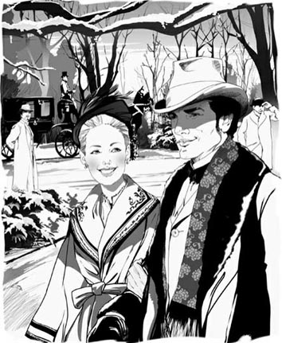
'But aren't we very happy as we are?' May asked.
'We could be even happier. We could be together all the time. We could be travelling.'
'That would be lovely,' she replied. 'But Mother would not understand us wanting to do things so differently from other couples.'
Suddenly he felt quite desperate. Would he ever be able to reach the real May Welland, through the wall of custom and social expectation which divided them? And what if, when he finally broke down the wall, there was nobody there?
'Do we have to do things the way everyone else does?' he cried, almost wildly. 'Can't you and I be different, May?'
Her eyes rested on him with a bright, unclouded admiration. 'But we can't just run away together, can we?' she asked. 'You know, like people in books.'
'Why not – why not – why not?'
She looked a little bored by his insistence. 'I'm not clever enough to argue with you. But that sort of thing is rather – vulgar, isn't it?'
'Are you so much afraid of being vulgar?'
She was clearly shocked by his question. 'Of course I am – and so are you,' she replied sharply. Then, sure of having found the right way to close the discussion, she went on lightheartedly: 'Oh, did I tell you that I showed Ellen my ring? She thinks it's the most beautiful one she ever saw...'
All next day he felt depressed. He could see his life stretching tidily ahead of him, with no excitement, no unplanned events, and he was filled with unreasoning horror at the thought of doing the same thing every day at the same hour. The word 'sameness!' repeated itself maddeningly inside his head.
In the afternoon Janey came to see him in his library.
'Newland, Mother's very angry,' she said.
'Angry? With whom? About what?'
'Your friend Madame Olenska. She was at Mrs Struthers' party last night, on a Sunday evening, Newland, when people are at church. She went with the Duke and Mr Julius Beaufort.'
When he heard the last name, a senseless anger took hold of Newland, but he controlled himself and just laughed. 'Well, what of it? I knew she meant to go.'
Janey went pale. 'You knew she meant to go and you didn't try to stop her? To warn her?'
'Stop her? Warn her?' He laughed again. 'I'm not engaged to the Countess Olenska!' The words sounded strange in his ears.
'Well, I think you'd better come down and speak to Mother.'
In the sitting room Mrs Archer was looking very anxious. 'I'm so worried the van der Luydens will be offended,' she said.
'Why should they be offended?' Newland asked.
'Because she went to the house of that vulgar woman.'
'Well, Mrs Struthers may be vulgar,' said Newland, 'but she has good music, and amuses people on Sunday evenings, when the whole of New York is dying of boredom.'
'Good music? All I know is, there was a woman who got up on a table and sang the things they sing at the places you go to in Paris. There was smoking and champagne.'
'Well, that kind of thing happens in other places, and the world still goes on.'
At this moment in the argument the servant came to the door and announced, 'Mr Henry van der Luyden.'
A visit from this gentleman was such an unusual event that both ladies looked quite frightened, but Newland remained calm.
'Come in, sir,' he said, going forward to greet his relation. 'We were just talking about you – and the Countess Olenska.'
Mrs Archer went pale, and put a hand to her heart.
'Ah – a delightful woman,' replied Mr van der Luyden. 'I have just been to see her. The Duke told me to go and see how cleverly she's arranged her sitting room. And it's true – quite remarkable! I would take Louisa to see the Countess if the area were less unpleasant.' There was dead silence. Mr van der Luyden continued, 'The fact is, between ourselves, I wanted to give her a friendly warning about allowing the Duke, or anyone else, to carry her off to parties with him.'
'Has the Duke been carrying her off to parties?' asked Mrs Archer innocently.
'I'm afraid so, dear Adeline. But Madame Olenska was very grateful for my few words of guidance.'
And so Mrs Archer's anxiety about Ellen Olenska's behaviour was calmed, for the moment, at least.
Two weeks later Newland was sitting doing nothing in the offices of Letterblair, Lamson and low, the firm of lawyers whom he worked for, when he was called to the private office of the head of the firm, Mr Letterblair. The old man was clearly a little worried. It appeared that the Countess Olenska wished to get a divorce from her husband. Her family, especially old Mrs Manson Mingott, wanted to avoid the scandal this would cause. They had sent a number of papers to Mr Letterblair, asking that Newland Archer, as a future member of the family, should take on the case. They wanted Newland, on behalf of the Letterblair firm, to advise the Countess against divorce.
Newland was at first unwilling to get involved in the Countess's private life. But once he had read the papers, which included letters from her husband, he was so horrified by her suffering at the hands of the Count that he agreed to take on the case. He was determined to give her his support, no matter what she decided to do. So he made an appointment with her, at her house, in order to discuss the case.
inhabit v. if animals or people inhabit an area or place, they live there 居住于
call on to visit someone for a short time 拜访，探望
alphabetical adj. arranged according to the order of letters in the alphabet 按字母顺序的
alphabet n. a set of letters, arranged in a particular order, and used in writing 字母表
atmosphere n. the feeling or mood that a person has in a particular place or situation 氛围
exotic adj. seeming exciting or unusual because it is connected with foreign countries 异国情调的
carriage n. a vehicle with wheels that is pulled by a horse, used in the past 马车
curtain n. a piece of hanging cloth that can be pulled across to cover a window, divide a room etc 窗帘
companion n. someone you spend a lot of time with, especially a friend 同伴
independently adv. confidently and do things by yourself in your own way, without needing help or advice from other people 不受约束地
suspect v. to think that something is probably true, especially something bad 推测
adequate adj. enough in quantity or of a good enough quality for a particular purpose 适当的，足够的
thoughtfully adv. in a way serious and quiet because you are thinking a lot 沉思地，思考地
firelight n. the light produced by a small fire 火光
loneliness n. a feeling of unhappiness because you are alone or do not have anyone to talk to 孤独
unnaturally adv. in a way different from anything produced by nature 假地，非天然地
fur n. the skin of an animal with the hair still on it 毛皮
cheerful adj. happy, or behaving in a way that shows you are happy 兴高采烈的，高兴的
wintry adj. cold or typical of winter 冬天的
assistant n. someone whose job is to help customers in a shop 店员
insistence n. an act of demanding that something should happen and refuse to let anyone say no 坚持
all the time continuously or very often 一直，始终
desperate adj. willing to do anything to change a very bad situation, and not caring about danger 绝望的
expectation n. a felling or belief about the way something should be done or how someone should behave 期望
vulgar adj. low, common, coarse, lacking in manners 粗俗的
light-heartedly adv. in a way cheerful and not worried about anything 心情轻松地
unreasoning adj. an unreasoning feeling is not based on facts or good reasons 缺乏理智的
maddeningly adv. very annoyingly 使人疯狂地，叫人受不了地
senseless adj. happening or done for no good reason or with no purpose 无意义的，无目的的
offend v. to make someone angry or upset by doing or saying something that they think is rude, unkind etc 使生气，冒犯
boredom n. the feeling you have when you are bored, or the quality of being boring 无聊，厌烦
champagne n. a French white wine with a lot of bubbles, drunk on special occasions 香槟
remarkable adj. unusual or surprising and therefore deserving attention or praise 非凡的
firm n. a company or business 事务所；公司
horrify v. to make someone feel very shocked and upset or afraid 使震惊；使恐惧
at the hands of caused or done by a particular person — used about something bad or unpleasant that someone does 从……那里，由于……的作用
appointment n. an arrangement for a meeting at an agreed time and place, for a particular purpose 约会，约定
伯爵夫人招惹麻烦
3
伯爵夫人招惹麻烦
伯爵夫人说“五点钟以后”，于是第二天五点半，纽兰来到西二十三街，摁响了伯爵夫人家的门铃。房子是她从梅多拉姑妈手中租下的——梅多拉姑妈眼下又去旅游了。不过，选择住在这种地方颇为奇怪——狭窄的街道两边立着一幢幢外观简陋、需要粉刷的房屋，里面住的都是裁缝和作家。
“那个伯爵肯定不仅掠夺了她的梦想，还抢走了她的财产。”纽兰环顾四周，心里这样想。
年轻人今天过得不太愉快。他在韦兰家吃的午餐，指望单独跟梅处一会儿。他想告诉她昨天晚上她看起来有多么漂亮，并想恳求她将定于明年秋天的婚期提前。可当他在午餐提到这个想法时，韦兰太太面露惊讶受伤之情。她对他摇摇头说：“梅每样东西都需要十二件套，每一件都得手工缝制……”
之后，他被迫跟随女士们进行下午的社交拜访，逐家去告知订婚的消息。他离开韦兰家时，梅的母亲在他身后喊道：“明天我们去奇弗斯家和达拉斯家。”纽兰这才发现，她打算按照字母顺序去拜访两个家族的友人，而他们目前还处在字母表的前四分之一，这让他感到惊恐。他知道，接下来的几个月他不会好过了。
他本来打算告诉梅有关伯爵夫人要求——或者该说是命令——他今天下午去看她，可是在他俩单独相处的短暂时刻，他还有更要紧的事情要对梅讲，于是告诉她的时机就这样错过了。
来开门的女佣是个黑头发的姑娘，不会讲英语。她领着他走进会客厅，然后就不见了踪影。纽兰好奇地四处张望，这屋子与他之前见过的任何房间都不一样：屋里有几件精致的旧家具，一些意大利风格的绘画，一个仅插了两枝玫瑰的细长花瓶，玫瑰摆放的角度完美无瑕。这房间以一种独特的氛围包围着他——甚至连气味都有所不同，令人想起像撒马尔罕之类，位于中亚地区的异域。“梅会怎样布置我们的家呢？”他想，“应该会和她父母家一样使用紫色和黄色，但至少我能按照自己的意愿布置我的图书室。”
过了一会儿，他听见外面来了一辆马车。透过窗帘，他看见朱利叶斯·博福特正搀扶着奥兰斯卡夫人下车。片刻之后，她便走进会客厅。
“你觉得我这可笑的房子怎么样？”她问。见到纽兰，她毫不惊讶。“对我来说，这就是天堂了。”
“你把它布置得很温馨。”他说。
“我想，我喜欢的是一个人呆在这里的感觉。这里是我自己的国家、自己的城市。”
“你这么喜欢一个人呆着？”
“是的，只要朋友们别让我觉得孤单就行。”她坐下来，靠在椅背上，把双手放在脑后。“这是我最喜欢的时光，你呢？”
出于自尊，他说道：“我刚才还担心你忘了时间呢。想必博福特是个很有趣的伴儿吧。”
她像是被逗乐了。“怎么——你等了很久吗？博福特先生带我去看了几处房子——家人希望我搬到较佳的地段。可一个人住在哪里又有什么关系呢？”
“这条街完全不够时尚。”
“时尚！你们都很看重这点吗？为什么不创造自己的时尚呢？不过我想，我过去生活得太独立了。现在，我想要跟着大家的做法去做，我想要得到关心和安全感。”
她的话触动了他。“那正是你的朋友们希望你感受到的。”不过他推测，她仍然不知道自己曾经险些遭遇社交灾难，直到范德卢顿夫妇挽救了她。于是他说：“昨晚，纽约最上层的几个家族都在关注你。”
“我知道，那次聚会非常愉快！”她轻松地说。
纽兰觉得，她的说法完全表达不出那场聚会的社交重要性。
他严肃地说：“范德卢顿夫妇是纽约最有影响力的人物。可惜他们上了年纪而且健康状况不佳，所以不常接待客人。”
“那难道不是他们拥有巨大影响力的原因吗？”她若有所思地说，“正因为他们很少露面。”
他瞪大眼睛看着她，突然意识到她是正确的。他笑了起来，不再去想范德卢顿夫妇。
“不过你会向我解释这些事情，对吗？”奥兰斯卡夫人接着说，“所有我应当了解的情况，你都会告诉我吧？”
“现在是你在开导我，让我睁开眼睛认清那些我因为看得太久而不能真正看清的事情。”他本想说，“不要让人看见你跟博福特一起坐车逛街。”然而，此刻他已经深深沉浸在屋子的气氛里，无法提出那样的忠告。他觉得自己离纽约好远，仿若身处撒马尔罕，从那儿看，纽约显得异常渺小和遥远。他的感觉跟真实无异。
伯爵夫人屈身靠近炉火，将瘦削的双手伸向火焰，在火光的映照下，她的脸显得苍白。
纽兰又说：“你的家人可以给你忠告，尤其是年长的女士们。”
她摇摇头说：“噢，我知道！我那些姑妈，还有我的奶奶。不过前提是她们没有听见过任何不愉快的事！这里难道没有人想了解真相吗，阿彻先生？活在所有这些只会要求我伪装的好人中间，那才真的孤单呢！”她用双手捂住脸哭了起来。
“奥兰斯卡夫人！噢，别这样，埃伦。”他喊道，并且跳起来，弯下身子去看她。他抓起她一只手，握在手里，像抚摸孩子的手似的抚摸着。但她很快便挣脱开，抬起泪眼看着他。
“这儿也没有人哭，对吗？在天堂里，我想压根儿就没有哭的必要。”她笑着说。
纽兰意识到自己刚才叫她“埃伦”，感到惊恐。年轻人之间，只有在订婚后才获允许以彼此的名字称呼。他脑子里依稀看见梅·韦兰那高挑的白色身影——看起来很远很远。
突然，女佣走进来，用意大利语跟伯爵夫人交谈。她领进来两位打扮奇怪的客人——圣奥斯特雷公爵和斯特拉瑟斯太太。后者是一位身材高大的女士，头发黑得不太自然，唇上涂着口红，身穿一件价格不菲的皮毛大衣。他们来邀请奥兰斯卡夫人参加周日晚上在斯特拉瑟斯太太家举行的音乐会，奥兰斯卡夫人欣然接受。斯特拉瑟斯太太兴高采烈地朝纽兰挥手致意。
“你带着这位年轻绅士一起来。”她说。
纽兰找机会迅速脱身，他可不想与这位在社交界不受欢迎的斯特拉瑟斯太太扯上任何关系。当纽兰离开房子，走进冬季的黑夜时，那种身处撒马尔罕的感觉消失了。纽约再一次包围着他，而那位最可爱的女子梅·韦兰就身在其中。
他径直走向花店，让店员为梅送去一匣芬芳的白色鲜花，他每天都会给梅送花，那天早上却给忘了。在花店里，他注意到一大束黄色的玫瑰。梅不会喜欢这些花——对她来说，它们太浓烈、太绚丽、太富有异国情调。他给店员留下伯爵夫人的地址，吩咐他立刻把这些黄玫瑰送过去，可是他不想在卡片上留下自己的姓名。
第二天，他说服梅从家脱出身来，到公园去散步。这是一个晴朗的冬日，地面上覆盖着白雪，寒冷的空气让梅俏丽的脸庞红粉绯绯。有这样一位美人走在身旁，纽兰为此感到自豪，他觉得自己的疑惑和忧虑由此一扫而光。
他们谈到他每天送给她的花，然后，他坦承自己给伯爵夫人送了玫瑰。梅听到他如此善待自己的表姐，非常高兴。接着，纽兰开始谈论他们自己的计划，他们的未来，以及韦兰太太对漫长订婚期的坚持。
“但我们这样不是很快乐吗？”梅问道，并朝他露出灿烂的笑容。
“我们可以过得更快乐，我们可以整天在一起，我们可以去旅行。”
“那倒是很美好。”她回答说，“不过，要是我们想做的事情，跟其他情侣的那么不同，妈妈是不会理解的。”
突然间他感到十分绝望。他能否打破他和梅之间，那道由规矩和世人期许所筑起的屏障？万一他到了彼方，发现那里空无一人时该怎么办？
“我们非得遵从别人做事的方式吗？”他几近失控地大喊，“梅，你和我难道就不能与众不同吗？”
她望着他，目光中流露出对他的倾慕，清澈明亮。“可我们总不能就这样远走高飞吧，对吗？”她问，“你知道，就像书本中的人物那样。”
“为什么不能——为什么不能——为什么不能？”
她看上去对他的执拗有些厌烦。“我没那么聪明，无法和你争论。可那种事情有些——粗俗，不是吗？”
“你就这么害怕粗俗吗？”
她显然被他这个问题惊呆了。“我当然害怕了——你也会的。”她毫不客气地回答。接着，她确信自己找到了结束讨论的好办法，于是心情轻松地续道：“噢，我告诉过你了吗？我给埃伦看过我的戒指了，她觉得这是她见过的最美的戒指了……”
第二天一整天，纽兰都感觉闷闷不乐。他可以预见自己未来的生活将有条不紊地延续下去，没有波澜，没有意外。想到每天在同一时间都做同样的事，他心中便充满了莫名的恐惧。“千篇一律！”这个词在脑海中不停回转，让他无法忍受。
下午，珍妮来图书室找他。
“纽兰，妈妈非常生气。”她说。
“生气？跟谁？为什么？”
“你的朋友奥兰斯卡夫人。昨天是周日，是人们去教堂的日子。她昨晚却去参加斯特拉瑟斯太太的聚会。她是跟公爵和朱利叶斯·博福特先生一起去的。”
当纽兰听到最后那个名字的时候，一团无名怒火涌上心头，不过他克制住自己，只是笑了笑：“好了，这有什么大不了？我原本就知道她要去的。”
珍妮脸色煞白。“你原本就知道她要去，而你却没有设法阻止她？或者警告她？”
“阻止她？警告她？”他又笑了起来，“我又没有和奥兰斯卡伯爵夫人订婚！”这句话他自己听着有一种奇怪的感觉。
“我想，你最好下楼和妈妈谈谈。”
客厅里，阿彻太太看起来非常焦虑。“我很担心范德卢顿夫妇会生气。”她说。
“他们为什么要生气？”纽兰问。
“因为她去了那样一个粗俗的女人家里。”
“哦，斯特拉瑟斯太太也许是有些粗俗，”纽兰说，“不过，她那儿有曼妙的音乐，在星期天晚上整个纽约无聊得要命的时候给人们提供消遣。”
“曼妙的音乐？据我所知，有个女人站到了桌子上，唱着那种你在巴黎去的那些地方才唱的东西。还抽烟喝香槟呢。”
“嗯，那种事情在其他地方也有，可世界还是如常运作。”
争论至此，用人来到门口通报说：“亨利·范德卢顿先生来访。”
这位绅士的来访太不寻常，因此两位女士看起来惊恐万分，但纽兰却很镇静。
“请进，先生。”纽伦说着，走上前去欢迎这位亲戚，“我们刚才正在谈论您，还有奥兰斯卡伯爵夫人呢。”
阿彻太太脸色煞白，一只手放在胸口。
“啊——一个讨人喜欢的女子。”范德卢顿先生说，“我刚去看过她。公爵让我去看看她把客厅布置得有多巧妙。确实不错——相当不同凡响！如果周围的环境不那么让人不愉快，我会带路易莎去看她的。”接下来是一片死寂。范德卢顿先生又说：“事实上，我跟你私底下讲，我是去忠告她，叫她别让公爵或者其他任何人带着她去参加聚会。”
“公爵总是带着她参加聚会吗？”阿彻太太率真地问道。
“恐怕是这样的，亲爱的阿德琳。不过，奥兰斯卡夫人很感激我寥寥数言的规劝。”
阿彻太太对于埃伦·奥兰斯卡行为的焦虑因此终于平息下来，至少目前是这样。
两个星期之后，在纽兰就职的莱特布莱尔—拉姆森—洛律师事务所中，他正坐在自己的办公室里无所事事时，被叫到事务所负责人莱特布莱尔先生的私人办公室。这位老先生显然有些焦虑。原来是奥兰斯卡伯爵夫人想和丈夫离婚。她的家人，尤其是曼森·明戈特老太太，希望避免由此可能引发的丑闻。他们给莱特布莱尔先生寄来了许多文件，并指名要作为家族未来一员的纽兰·阿彻接手这件案子。他们想让纽兰代表莱特布莱尔事务所，劝说伯爵夫人不要离婚。
起初，纽兰并不愿意卷入伯爵夫人的私生活。可是当他看过那些文件，其中包括她丈夫的来信之后，她在伯爵那里遭受的苦难让他惊恐万分。于是他同意接手这件案子。他下定决心，无论她作何决定，都要给予她支持。然后，他和她约好在她家里对案子进行讨论。
4 A second visit to the Countess
4
A SECOND VISIT TO THE COUNTESS
As Newland walked up Fifth Avenue after dinner that evening, he could see a number of carriages outside the Chiverses', where they were having a party for the Duke. He passed the Beauforts' house, and saw Julius himself come out and drive away in his carriage.
'Probably on his way to that new lady friend of his,' thought Newland. All of New York knew about Beaufort's mistresses, and Miss Fanny ring was the latest in a long line.
He walked on into the narrow street where the Countess lived, surrounded by the houses of painters and writers. He and his family belonged to the part of New York society that believed in the importance of literature and art, but fashionable and well-born families rarely mixed socially with artists. Newland himself knew many artists and musicians, whom he met in the little bars and clubs which were beginning to open in the back streets, but he would never expect to meet them in a gentleman's house. He imagined that the Countess, whose house was full of books, was used to a much more open society, where writers and artists came and went freely, and that this might be one of the things she would miss from her old life.
He reached her house and was let in by the servant girl, who was smiling mysteriously. In the hall was a fur-lined coat and a silk opera-hat with the letters J.B. in gold on it; it was clear that Julius Beaufort was visiting Madame Olenska. Newland was so angry that he almost left at once. But then he remembered he had not told the Countess he wished to see her privately, so he could not blame her for opening her doors to other visitors.
In the sitting room Beaufort was standing in front of the fire, smiling down at the Countess. She was half lying on a sofa, her head supported on one hand; her sleeve had fallen away to leave her white arm visible up to the elbow. Instead of the usual close-fitting, all-covering silk dress which New York ladies wore when receiving evening visitors, she was wearing a long dress of soft red material, with black fur around the neck and down the front. The effect was certainly pleasing.
'Well, well – three whole days at Skuytercliff!' Beaufort was saying in his loud voice as Newland entered. Skuytercliff was the van der Luydens' country house, just outside New York, and it seemed the Countess was invited there. 'It's a pity – you'll miss the musical evening I've planned for you on Sunday.'
She held out her hand to greet Newland, as she replied to Beaufort. 'Ah, that does tempt me! Except for the other evening at Mrs Struthers', I've not met a single artist since I've been here.'
'I know one or two painters, very nice people, who I could bring to see you if you'd allow me,' said Newland daringly.
'Painters in New York?' asked Beaufort with a laugh. He gave the impression there were none, since he did not buy their pictures. And Madame Olenska said to Newland, 'That would be delightful. But I was thinking of singers, actors, musicians. My husband's house was always full of them.'
Newland felt confused – how could she speak so calmly of her married life? But he was pleased to see she wanted to speak to him privately, because she made it clear to Beaufort that he must leave. And a few minutes later they were alone together.
'So you care for painting, then?' she began by asking.
'Oh yes, enormously. When I'm in Paris or London, I never miss a show. I try to see all the new pictures.'
'My life used to be full of such things too. But now I want to throw off my old life, to become just like everybody else here.'
Newland reddened. 'You'll never be like everybody else.'
'Ah, don't say that! If you knew how I hate to be different!' Her face looked dark and sad as she spoke.
He waited a moment and cleared his throat. 'I know you want – a divorce. Mr Letterblair told me. That's why I've come. You see, I'm in the firm.'
Her eyes brightened. 'You mean you can manage it for me? I can talk to you instead of to Mr Letterblair? Oh, that will be so much easier! You'll help me, won't you?'
'First...' he hesitated, 'perhaps I ought to know a little more.'
She seemed surprised. 'You've read the papers? You know about my husband's mistresses? What could be worse than that? Our church allows divorce in such cases.'
'That's true, but...' Newland was thinking of a letter from the Count he had read, accusing his wife of having had an affair with his secretary. How much truth was there in that? Only Ellen could tell. 'Of course, you know that if your husband chooses to fight the case, as he threatens to, he can say things...'
'Yes?'
'Things that... that might be – disagreeable – to you, and say them publicly – even if they aren't true.'
'What harm could such accusations, even if he made them publicly, do me here in New York?'
Newland thought, 'She still knows so little about us!' He tried to explain. 'This is a very small world, compared to the one you've lived in. Our ideas about marriage and divorce are particularly old-fashioned, especially if the woman has... put herself, by some unusual behaviour, in a position where – where offensive accusations can be made against her.'
Her head bent down low, and Newland waited, hoping desperately for a little anger, or at least just a word to tell him that no accusation would be true. No word came.
A clock ticked softly in a corner, and the whole room seemed to be waiting silently with Newland.
'Yes,' she whispered at last. 'That's what my family say. And you're one of them, or will be soon. Do you share their view?'
He looked away from her for a moment. How could he say, 'Yes, if what your husband says is true?'
Instead he said gently, 'Is a divorce really worth it, when there's the possibility – the certainty – of a lot of unpleasantness?'
'But my freedom – isn't that worth it?'
'It's my business, you know, to help you to see these things as the people who are fondest of you see them.' He was filling the silence with meaningless talk. He could do nothing else, since she would not or could not say the one word that would have cleared the air, and told him the truth.
Suddenly she stood up. 'Very well, I will do what you wish,' she said.
The blood rushed to his face, and he caught her hands in his. 'I... I do want to help you,' he said.
'You do help me. Good night, my cousin. '
He bent and kissed her hands, which were cold and lifeless. When she took them away, he turned to the door, found his coat and hat in the hall, and ran out into the winter night, bursting with unspoken words.
A week later Newland was at Wallack's theatre, watching one iof that season's most popular plays. He had seen it several times, and one particular scene was his favourite. He was watching it now. In a room, two lovers said goodbye, sadly, almost wordlessly, and the man started towards the door. The woman turned away from him to the fireplace and looked down into the fire. She was wearing a long grey dress with long black ribbons falling down her back. At the door her lover turned for one last look at her; then he walked quietly back, lifted one of the ribbons, kissed it, and left the room without her hearing him or changing her position. And on this silent parting the curtain fell.
Newland thought this as fine as anything he had ever seen in the theatres of Paris and London. The silence and the dumb misery of the lovers' goodbye moved him greatly. And it reminded him – he could not have said why – of his goodbye to Madame Olenska after their conversation a week earlier.
When he had left her, he had the feeling that Count Olenski's accusation was almost certainly true. Ellen was young, she was frightened, she was desperate – what more natural than that she should be grateful to her rescuer? The pity was that, in the law's eyes and the world's, one affair with the secretary made her as wicked as her husband, with his many mistresses. And Newland had explained to her that simple, kind-hearted New York was exactly the place where she could least hope for understanding.
Having to make these facts plain to her, and watching her miserable acceptance of them, had been extremely painful to him. He was glad that he alone knew her secret, which would have horribly embarrassed her relations. And when he told her family she had decided not to ask for a divorce, they were all very grateful to him for sparing them so much unpleasantness.
These thoughts reminded him so strongly of his last talk with Madame Olenska that, as the curtain fell on the lovers' parting, his eyes filled with tears and he stood up to leave the theatre. In doing so, he saw Madame Olenska in a box with the Beauforts and some other people. He had tried to avoid meeting her socially, but now their eyes met, and as Mrs Beaufort waved to him to join them, it was impossible to refuse.
He greeted the Beauforts, but soon found himself sitting beside the Countess. She turned and spoke to him in a low voice.
'Do you think,' she asked, looking towards the stage, 'the lover will send her a bunch of yellow roses tomorrow morning?'
Newland reddened and his heart jumped in surprise. He had visited her only twice and each time had sent her yellow roses, but without giving his name. She had never mentioned them before. Now the fact that she knew he had sent them, and connected them to the scene they had just watched, filled him with pleasure.
'I was thinking of that too,' he said.
To his surprise she blushed, and said after a pause, 'What do you do when May is away?'
'I get on with my work,' he replied, a little annoyed by the question. The Wellands always spent February in Florida, as their doctor considered the warm weather there necessary for Mr Welland's chest, and they were there now. Newland had realized there was no chance of persuading them to break the habit of a lifetime, so he had not tried. He would have liked to go with them, but he too was tied by custom and habit – no serious-minded young men took holidays in mid-winter.
He was conscious Madame Olenska was looking at him. 'I understand – that you were right about the divorce,' she said a little breathlessly. 'But sometimes – life is difficult.'
'I know.'
'And I wanted to tell you that I do feel you were right, and that I'm grateful to you.' She lifted her opera-glasses quickly to her eyes as she heard Beaufort coming to sit next to her.
Newland stood up, and left the box and the theatre.
The day before, he had received a letter from May, in which she had asked him to be kind to Ellen in her absence. 'She likes and admires you so much, and although she doesn't show it, she's very lonely and unhappy. You're almost the only person in New York who can talk to her about what she really cares for.'
His wise May – how he loved her for that letter! But he did not want, as an engaged man, to be too obviously the Countess's defender and companion. She could probably take care of herself better than May imagined – she had several gentlemen around her who would be only too glad to be of assistance. But even so, he never saw her without feeling that, after all, May was right. Ellen Olenska was lonely and she was unhappy.
The next morning Newland searched the flower shops for yellow roses, but found none. As a result of this search, he arrived late at the office, and noticed that his lateness made no difference at all to anyone. He was filled with sudden despair at the uselessness of his life. He was just one of the many young men in the old-fashioned law firms like Mr Letterblair's, who sat at their desks or simply read the newspapers for a certain number of hours every day. They didn't need to earn money, but it was thought that young men should have something to do, and the law, being a profession, was considered to be more suitable work for a gentleman than business. Few of them had any ambition, and over many of them the grey dullness of an empty life was already spreading.
It made Newland cold with fear to think it might be spreading over him too. 'I'll never do anything worthwhile!' he thought angrily. 'And my interest in books and paintings and music, my European travels – will I be able to keep any of that up when I'm married?' He thought about men he knew – men who in their younger days had been full of hopes and dreams, as he was now. 'And what happened to them?' he thought. 'Their lives became nothing more than one long, mindless, comfortable routine of dinners and visits and evening parties.'
From his office he sent a note to Madame Olenska, asking if he could call on her that afternoon, but he received no reply that day or the next. This unexpected silence made him unreasonably angry. On the third morning he received a note from her, and to his surprise it had been posted from Skuytercliff. It said:
I ran away the day after I saw you at the theatre, and these kind friends are allowing me to stay here as long as I like. I wanted to be quiet, and think things over. I feel so safe here. I wish you were with us. Yours sincerely, Ellen Olenska
'What is she running away from?' he wondered. 'And why does she feel the need to be safe? However, she's certainly made an impression on the van der Luydens – they don't usually encourage their visitors to stay longer than a weekend.'
He felt disappointed that she was away. Then he remembered that he had an invitation from the Chiverses to spend this weekend with them at their country house, Highbank, which was not far from Skuytercliff. He wrote a hurried telegram and sent it off at once, accepting the invitation.
well-born adj. born into a very rich or important family 出身高贵的，出身名门的
musician n. someone who plays a musical instrument, especially very well or as a job 音乐家
back street a small quiet street that is away from the main part of a town 偏僻街道，后街
sleeve n. the part of a shirt, coat etc that covers the arm 袖子
close-fitting adj. close-fitting clothes are tight and show the shape of your body 紧身的
tempt v. to attract someone, or to make someone want to do something 吸引
care for like someone or something 喜欢
enormously adv. very or very much 极大地，极其
throw off to get free from something that has been limiting your freedom 摆脱
affair n. a sexual relationship outside marriage 私通
disagreeable adj. not at all enjoyable or pleasant 令人不快的
accusation n. a statement saying that someone is guilty of a crime or of doing something wrong 指责
offensive adj. very rude or insulting and likely to upset people 无礼的
lifeless adj. lacking the positive qualities that make something or someone interesting, exciting, or active 没有生气的
scene n. a part of a play in which the action happens in one place （戏剧中的）一场
wordlessly adv. without using words 无言地
fireplace n. a special place in the wall of a room, where you can make a fire 壁炉
ribbon n. a thin piece of material worn on a woman's dress or hair 丝带
dumb adj. unable to speak, because you are angry, surprised, shocked etc 说不出话的
wicked adj. evil, of bad character 邪恶的，罪恶的
lifetime n. the period of time during which someone is alive or something exists 一生
serious-minded adj. having a serious attitude or way of thinking 严肃的
breathlessly adv. in a way hard to breathe, especially because you are very tired, excited, or frightened 气喘吁吁地
assistance n. help or support 帮助
despair n. a feeling that you have no hope at all 绝望
profession n. a job that needs a high level of education and training 职业
ambition n. determination to be successful, rich, powerful etc 雄心，志向
worthwhile adj. important, valuable, useful 有价值的
mindless adj. completely stupid and without any purpose 盲目的，不用脑子的
routine n. the usual order in which you do things, or the things you regularly do 常规
telegram n. a short urgent message sent by electric current along wires, and then printed and delivered 电报
对伯爵夫人的第二次拜访
4
对伯爵夫人的第二次拜访
那天晚上晚餐之后，纽兰沿着第五大道漫步向前，他看到几辆马车停在奇弗斯家门口，他们家此刻正在为公爵举行聚会。走过博福特家时，他看到朱利叶斯走了出来，驾着马车离开。
“很可能是准备去见他那位新结识的女性朋友。”纽兰心想。整个纽约都知道博福特交过哪些情人，他的新欢是范妮·林小姐。
他继续步行至伯爵夫人居住的那条狭窄街道，周围全都是画家和作家的房子。在纽约的社交界，他和他的家族属于注重文学和艺术的圈子。不过，出身高贵的上流社会家族却很少与艺术家进行社交往来。纽兰本人认识许多艺术家和音乐家，他在一些偏僻街道上刚开办的小酒吧和俱乐部里与他们见过面。不过，他从不会期望在绅士的家中见到他们。他想，伯爵夫人的家中堆满书籍，过去应该习惯于一个开放得多的社会。在那里，搞写作和搞艺术的人来去自由，而这也许是她所怀念的昔日生活的一部分。
他来到她家，被脸上露出神秘笑容的女佣领进了门。门厅里放着一件毛皮衬里的大衣和一顶丝质歌剧礼帽，礼帽上用金线绣着J. B.两个字母。很明显，朱利叶斯·博福特正在拜访奥兰斯卡夫人。纽兰非常生气，差一点扭头离开。但他随即想起自己之前并未告诉伯爵夫人他希望单独与她会面，因此，他不能责怪她向其他客人敞开了大门。
客厅里，博福特正站在炉火前面，低头看着伯爵夫人微笑。她倚坐在沙发上，一只手托着头；袖子滑落，露出她白皙的胳膊，一直到肘部。在纽约，女士们晚上会客时通常都穿遮盖全身的紧身丝绸衣服，她却没有跟从。她身穿一件柔软的红色面料的长裙，黑色皮毛镶边沿颈部一直延伸至胸前，效果绝对赏心悦目。
“好啊，好啊——到斯库特克利夫待上整整三天！”纽兰进去的时候，博福特正在大声说着。斯库特克利夫是范德卢顿夫妇的乡间别墅，就在纽约市郊。看来，伯爵夫人受邀前往那里。“真是遗憾——你将错过我为你安排的周日音乐晚会。”
她一边伸出手和纽兰打招呼，一边接着博福特的话题：“啊，我真想去！除了在斯特拉瑟斯太太家的那天晚上，我来这儿以后，连一位艺术家都没见过呢。”
“我认识一两位画家，人都很好。如果你愿意，我可以领他们来见你。”阿彻大胆地说。
“纽约有画家吗？”博福特笑着问。那样子就好像在说，既然他没有买他们的画，纽约就没有画家。奥兰斯卡夫人对纽兰说：“那太好了。不过我想到的是歌唱家、演员和音乐家。在我丈夫家里总能见到这些人。”
纽兰觉得困惑不已——她怎么能如此平静地说起自己的婚姻生活？不过，当她明确表示要博福特离开时，他明白了她想要和他单独谈话，为此感到高兴。几分钟之后，他们便单独呆在一起。
“这么说，你喜欢画画？”她先开口问。
“哦，是的，非常喜欢。我在巴黎和伦敦的时候，从不错过任何展览，我尽量看全所有的新作品。”
“我的生活过去也充满了这些东西，可现在，我想摆脱过去的生活，变得跟这里每个人完全一样。”
纽兰满脸通红，说道：“你永远不会跟其他人一样。”
“啊，别那样说！如果你明白我多么讨厌与众不同就好了！”她说话的时候脸色看起来阴郁而忧伤。
他略等片刻之后，清了清嗓子说：“我知道你想——离婚，莱特布莱尔先生告诉我了，这就是我来这里的原因。你知道，我在事务所工作。”
她的眼睛里露出喜色。“你是说你可以为我处理此事？我可以跟你谈，而不用跟莱特布莱尔先生谈？哦，这就轻松多了！你会帮我的，对吗？”
“首先……”他迟疑了一下，“也许我应该多了解一点。”
她看起来很惊讶。“你看过那些文件了？你知道我丈夫有情人的事？还有什么比那更糟糕呢？在这种情况下，我们的教会是允许离婚的。”
“这没错，但是……”纽兰想起了自己看到伯爵的一封来信，信中指责妻子与他的秘书有婚外情。那信里有多少是事实呢？只有埃伦自己能说清楚。“当然，你知道，如果你丈夫选择打官司，就像他威胁你说的那样，他可能讲一些……”
“怎么样？”
“讲一些……可能——令你不快的事情，公开讲出来——即便那些不是事实。”
“就算他公开对我做出那些指责，在纽约这里又能对我造成什么伤害呢？”
纽兰心想：“她仍然不了解我们！”于是他试着解释：“和你过去生活的地方比起来，这里只是一个很小的圈子。我们对结婚和离婚的观念特别守旧；尤其是女子，如果她……因为一些违背常规的行为，而使自己受到无礼的指责。”
她的头垂得很低，纽兰则等待着，急切地期望她会有些许愤怒，哪怕是只言片语，告诉他那些指责都不是事实。而她却一言不发。
钟表在角落里轻轻地嘀嗒响着，整个屋子仿佛都在和纽兰一起默默地等待着。
“是的，”她终于小声说道，“我的家人就是这样说的。你是他们当中的一员，或者不久将是。你和他们的观点一样吗？”
他把目光从她身上移开了片刻。他怎么能说：“是的，假如你丈夫说的是事实？”
他改为柔声说：“如果有可能——肯定——会带来诸多的不快，离婚还真的值得吗？”
“可是我的自由——难道就无所谓了吗？”
“你知道，我的职责是帮助你，让你知道那些最喜爱你的人怎样看待这些事情。”他用毫无意义的话语来打破沉默。既然她不肯或者不能说出一句澄清事实的话，把真相告诉他，那他也没有什么可做的了。
突然，她站起身来。“很好，我会按照你希望的去做。”她说。
他的脸涨红，他抓起她的双手说：“我……我确实想帮助你。”
“你确实帮了我。晚安，表妹夫。”
他俯身吻她的手，那双手冷冰冰的，毫无生气。她把手抻回来，他转身向门口走去，在门厅里取回他的外套和帽子，然后冲进了冬季的夜色中，让刚才没有说出口的话自胸口溢出。
一个星期之后，纽兰来到沃勒克剧院观看当季最热门的一个剧目。这部戏剧他以前看过好几次，其中一场是他的最爱。他此刻在看的就是这一场。在一个房间里，一对恋人简短地道别，声音哀伤。男人动身向门口走去，女人则转过身背朝他走向壁炉，低头看着炉火。她穿着一条灰色长裙，长长的黑丝带垂在背后。她的爱人在门口转过身，看了她最后一眼，接着又悄悄走回来，挽起一根丝带吻了一下才离开屋子。整个过程中，她没有听见他的动静，也没有改变姿势。就在这静静的分手场面中，帷幕落下了。
纽兰觉得这一场与他在巴黎或伦敦的剧院里看过的所有表演同样精彩。这对恋人告别时的沉默和不能言喻的痛苦深深打动了他。这让他回想起——他说不出是因为什么——一周前他与奥兰斯卡夫人结束谈话后的告别场面。
他离开奥兰斯基夫人时，几乎可以肯定奥兰斯基伯爵的指责是事实。埃伦年纪轻轻，既恐惧又感到绝望，对向她伸出援手的人心生感激，不是顺理成章吗？遗憾的是，在法律和世人的眼中，她与那个秘书的婚外情，和她丈夫拥有众多情人同样可恶。纽兰已经向她解释了，在单纯而善良的纽约，她休想得到丝毫谅解。
不得不向她说明这些事实，而且目睹她痛苦地加以接受，这使他极其难受。他很庆幸只有自己知道她这个原本会让其家人极为难堪的秘密。当他告知她的家人，她决定放弃离婚的诉求时，大家对他十分感激，因为他们不必去经历那些因离婚诉求而出现的不愉快事情。
思绪让他想起他与奥兰斯卡夫人的上次谈话。那历历在目的情景，令他在那对恋人分别，帷幕落下的时候，眼里蓄满泪水。他站起身要离开剧院时，发现奥兰斯卡夫人正坐在一个包厢里，和博福特夫妇及其他一些人在一起。之前，他一直避免在社交场合与她见面。不过，现在他们的目光交汇，于是博福特太太向他招手请他加入时，他无法拒绝。
他和博福特夫妇打了招呼，之后很快意识到自己坐在了伯爵夫人身旁。她转过身，小声和他说话。
“你认为明天早上，他会送她一束黄玫瑰吗？”她看着舞台问。
纽兰脸红了，他的心因为惊讶而怦怦跳。他只拜访过她两次，每次都给她送去了黄玫瑰，不过没有留下姓名。她以前从未提及过那些花。如今看来，她已经知道那些花是他送去的，而且还把它们与刚才看到的一场联系起来，这使他心中充满愉悦。
“我也正在想这件事。”他说。
令他意外的是，这回她脸红了。停顿片刻之后，她问：“梅不在的时候，你都做些什么？”
“我继续工作。”他回答说，对这个问题有些不高兴。韦兰一家总是在二月份去佛罗里达，因为他们的医生认为那里温暖的气候对韦兰先生的肺部有好处。他们这会儿就在那儿。纽兰知道自己无法说服他们放弃长久以来的习惯，所以没有尝试过。他本来想和他们同行，但碍于风俗习惯而没有这样做——认真严肃的年轻人不会在隆冬时节休假。
他觉察到奥兰斯卡夫人在看着他。“我明白——关于离婚的事，你是对的。”她略带喘息地说：“可有时候——生活很艰难。”
“我知道。”
“我当时想告诉你，我确实觉得你是对的，我很感激你。”她听到博福特走过来要坐到她身旁时，迅速把观剧镜举到眼睛上。
纽兰站起来，离开包厢，走出了剧院。
前一天，他收到了一封梅的来信。在信中，她请求他在她不在期间善待埃伦。“她非常喜欢和崇拜你。虽然她没有表现出来，但她非常孤单和不快乐。在纽约，差不多只有你能跟她谈谈她真正喜欢的东西。”
他聪慧的梅——因为这封信，他是多么爱她！然而他已订婚，故不想太着迹地伴着伯爵夫人，为她辩解。她照顾自己的能力肯定超出了梅的想象——围绕在她身边的几位男士巴不得给她提供帮助。但即便这样，他每次看见她时，都觉得梅终究是对的，埃伦·奥兰斯卡既孤单又不快乐。
第二天早上，纽兰到花店找黄玫瑰，却没有找着。他跑了几间花店，所以迟了回事务所，但他发现这对别人没有丝毫影响。他对自己生命的徒然顿时感到绝望。他只是在莱特布莱尔先生这种老派的律师事务所里众多年轻人当中的一位，每天花几个小时坐在办公桌前面，或者就只是读读报纸。他们不需要赚钱，只是人人都觉得年轻人不能无所事事。对一位绅士来说，以法律作为职业，比经商更加合适。这些年轻人鲜有人胸怀大志，空虚生活所带来的灰色沉闷，已然在他们很多人当中展现出来。
想到这种沉闷也会蔓延到自己身上，纽兰觉得不寒而栗。“我永远也做不了什么有价值的事情！”他气愤地想，“我对书籍、绘画和音乐的兴趣，还有我的欧洲之旅——在我结婚之后，这些事情还有哪一样能够继续？”他想起他认识的那些人——他们年轻时满怀希望和梦想，就像他现在一样。“可他们怎么样了呢？”他想，“他们的生活变成了日复一日的聚餐、拜访和晚会，漫长、盲目但舒适。”
他让事务所的人给奥兰斯卡夫人送去一封便函，询问可否在当日下午去拜访，但他当天以及第二天都没有收到回复。这一出人意料的沉默让他没来由的气愤。第三天上午，他才收到她的一封短信，而令他惊讶的是，信是从斯库特克利夫寄来的。信上写着：
在剧院见到你的第二天，我逃跑了。这些好心的朋友允许我留在这里，想待多久都可以。我想安静下来，把事情好好想一想。我觉得在这里很安全，真希望你能和我们在一起。埃伦·奥兰斯卡，谨启。
“她在逃避什么呢？”他为此感到疑惑，“她为什么需要安全感呢？不过，她肯定让范德卢顿夫妇很有好感——他们通常不会挽留客人待上超过一个周末。”
她的离开让他感到失望。接着，他记起自己曾收到奇弗斯夫妇的邀请，请他前往他们位于海班克的乡间别墅共度周末，那地方离斯库特克利夫不远。于是，他匆匆写了一封电报并立刻发出去，说他接受他们的邀请。
5 May surprises Newland
5
MAY SURPRISES NEWLAND
At Highbank Newland was a dutiful guest until lunch on Sunday, when he borrowed a carriage and drove over to Skuytercliff.
The van der Luydens' large country house never looked particularly welcoming, and now in the depths of winter it looked even less so. The servant who opened the door explained that Mrs van der Luyden and the Countess were at church. Newland said he would walk to the church to meet the ladies.
And as he walked along the path, he was delighted to see a figure in a red coat coming towards him. He hurried forward, and Madame Olenska stopped short with a smile of welcome.
'Ah, you've come!' she said, giving him her hand. 'Mrs van der Luyden has gone on to visit some friends, so I'm alone. '
The red coat made her look brilliantly pretty, like the Ellen of the old days. He replied, 'I came to see what you were running away from.'
Her smile disappeared, but she answered, 'You'll see soon. 'She added, more cheerfully, 'What does it matter, now that you're here to protect me?'
The blood rose to his face and he caught the sleeve of her coat. 'Ellen, what is it? You must tell me.'
'Oh, let's run a race first! My feet are freezing!' And she ran away from him, her red coat bright against the snow. Newland started after her, and they met, laughing, under a tree.
She looked up at him and smiled. 'I knew you'd come.'
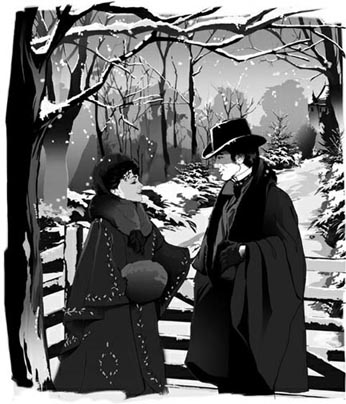
Ellen looked up at Newland and smiled. 'I knew you'd come.'
'That shows you wanted me to,' he replied, his heart beating wildly with delight.
They walked along together. The ground seemed to sing under their feet, and there was a mysterious brightness in the air.
'May asked you to take care of me,' she said after a while.
'I didn't need any asking.'
'Ah – what a poor, helpless, defenceless thing you must all think I am! But women here seem not to feel the need.'
He lowered his voice to ask, 'What sort of need?'
'Ah, don't ask me! I don't speak your language.'
He stood still on the path, looking down at her. 'What did I come for, if I don't speak yours?'
'Oh, my friend...!' She laid her hand lightly on his arm.
'Ellen, why won't you tell me what's happened?'
'I will tell you, but where? One can't be alone for a minute in that enormous house, with servants always in and out of every room! Is there nowhere in an American house where one may be by oneself? You're all so shy and yet so public at the same time.'
'Ah, you don't like us!' said Newland sadly.
Just then they passed an ancient stone house, called the Patroon's house, which the first owner of Skuytercliff had built and lived in, three hundred years before. The van der Luydens kept it to show to their visitors as a place of historical interest.
'What luck!' cried Ellen. 'We can go in and have a quiet talk. Someone's even lit a fire. No one will disturb us there.'
They went in and sat down by a bright fire.
'When you wrote to me, you were unhappy,' said Newland, watching her expressive face.
'Yes, I was. But I can't feel unhappy when you're here.'
'I shan't be here very long.' His lips felt stiff with the effort of saying just so much and no more.
'I know. But I live in the moment when I'm happy. I don't look ahead.'
The words stole through him like a temptation. He got up and stood looking out through the window, with his back to her. What if she had been running away from him, and she had waited to tell him until they were alone together in this secret place?
'Ellen, please tell me. Tell me who you're running away from.'
For a long moment she was silent, and in that moment Newland imagined her, almost heard her, stealing up behind him to throw her light arms around his neck. But while he waited, his whole mind and body ready for that wonderful thing to happen, he saw a heavily-coated man walking along the path to the house. The man was Julius Beaufort.
'Ah!' said Newland, bursting into a laugh. 'So that's it?'
Madame Olenska ran to his side, slipping her hand into his, but when she saw Beaufort, her face went pale. 'I didn't know he was here,' she whispered. Her hand still held Newland's, but he drew away from her and, walking into the hall, threw open the door of the little house. 'Come in, Beaufort, this way! Madame Olenska is expecting you!' he said.
During his journey back to New York the next day, Newland thought bitterly of Beaufort. He was clearly the man Ellen was running away from. He was chasing her, and Julius Beaufort only ever had one purpose in mind when chasing pretty women.
The next two or three days went by very slowly. There were moments when Newland felt he was being buried alive under his future. He heard nothing from Ellen until the fourth evening, when a note from her arrived at his house. It said simply:
Come late tomorrow. I must explain to you. Ellen
The young man spent all night thinking about the note. There were several ways of answering it. The reply he finally decided on, at sunrise, was to pack a bag with some clothes and jump on a boat which was leaving that day for Florida.
When he walked down the sandy main street of St Augustine and saw May Welland standing there with the sun in her hair, he wondered why he had waited so long to come. Here was truth, here was reality, here was the life that belonged to him!
'Newland – has anything happened?' she asked.
'Yes – I found I had to see you.' he replied, and she blushed happily. They sat down on a bench under some orange trees, and he put his arm round her waist and kissed her. It was like drinking from a cool mountain stream on a hot summer's day.
He explained to May's parents that he had come because he felt he might be getting a cold. Mr Welland understood all anxiety over health only too well, and insisted he should stay at least a week with them, to prevent any possible illness taking hold.
He walked and read and went boating with May in the warm Florida sunshine. All the time he was thinking about their wedding, which seemed unimaginably far away.
The day before he left, they were walking through the orange trees again, when suddenly he burst out, 'Can't you understand, May? I want to make our dreams real! I want you to be my wife, now rather than later, this year rather than next!'
For a moment May was silent. Then, clear-eyed, she looked straight at him. 'I'm not sure I do understand. Is it – is it because you're not certain of continuing to care for me?'
Newland was shocked into saying, 'My God – perhaps – I don't know!' Both were silent for a moment.
'If that is it – then, is there someone else? let us talk honestly, Newland. I've felt a difference in you since our engagement was announced.'
'My dear, what madness!' he managed to say.
'It won't hurt us to talk about it. You could so easily have made a mistake – anyone can.'
'If I had made a mistake of the kind you suggest, is it likely I would be begging you to marry me sooner?'
She thought for a moment. 'Yes.' she said at last. 'You might want to decide the matter, once and for all.'
Her calm intelligence took his breath away, but he could see how painful this was for her. She continued, 'You know, a girl sees more than her parents imagine. I've always known there was someone in your past. I saw her once – her face was sad and I felt sorry for her – and I remembered that when we got engaged.'
'My dear child – is that all? If you only knew the truth!'
'Then there is a truth I don't know?'
'I mean, the truth about that old story.'
'But that's what I want to know. Newland, I couldn't build my happiness on a wrong done to another woman! I understand that when two people really love each other, they might have to go against public opinion. And if you feel yourself in any way – promised to that woman – and if there is any way you can keep your word – even by her getting a divorce, then, Newland, don't give her up because of me!'
He had never admired May so much as at that moment. How brave of her to speak so plainly, and how generous to offer to give him up to his former mistress! But with all her intelligence, she had not seen what was troubling him.
'There was no promise of the kind you think. But I love you for saying that. I mean, every woman's right to her freedom—'He stopped, surprised by the direction his thoughts were taking.
May turned her blushing face towards him, and as he bent to kiss her, he saw her eyes were full of happy tears. For a moment he had seen a woman who could think for herself, a woman who was prepared to break away from society's rules. But the next moment he was disappointed to see the old, dutiful May return. She seemed to be aware of his disappointment, but without knowing what to do about it. They walked silently home.
Two days after his return to New York, Newland called on old Mrs Manson Mingott, to persuade her to use her influence with the Wellands about an early wedding date for him and May. She was amused by his urgency, and agreed to help. The Countess, who was visiting her grandmother, was also there, and listened thoughtfully to this conversation. Newland had a few minutes alone with her, when she walked with him to the front door.
'When can I see you?' he asked in a low voice.
'Whenever you like, but it must be soon if you want to see the little house again. I'm moving next week.'
For a moment he was back again in the exotic atmosphere of her sitting room. 'Tomorrow evening?' he asked.
'Tomorrow, yes, but come early. I'm going out later.'
It was only half-past eight when he arrived at her house. In the sitting room he found Medora Manson, Ellen's aunt, who had just arrived back from a long trip to Cuba. She greeted him, and while they waited for Ellen to join them, told him she had a letter from the Count to give to her niece. 'Yes, my poor, foolish Olenski,' she added, 'all he asks is to take her back as his wife!'
'Good God!' cried Newland, jumping up.
'You are horrified? Of course I do not defend him. But just think what she is giving up if she stays here! Palaces, jewels, art, priceless furniture, music, brilliant conversation – forgive me, my dear young man, but one does not find that here. The truth is, Mr Archer, I have heard of your influence over dear Ellen, and I hoped I might count on your support – to persuade you...'
'That she ought to go back? I would rather see her dead!' cried the young man violently.
'Ah,' said Mrs Manson calmly. 'Am I to understand you prefer that?' She pointed to a huge bunch of expensive flowers on the sofa, with Beaufort's card just visible. 'After all, marriage is marriage... and my niece is still a wife...'
At that moment Ellen appeared in the doorway.
'We were saying, my dear,' smiled Mrs Manson, 'here is something a fond admirer has sent you.'
Madame Olenska turned, saw the flowers, and a silent anger seemed to run through her. She rang for her servant and told her to take them to a neighbour who was ill. 'Take them at once!' she cried. 'I don't want them in the house!' She turned to Newland. 'Mr Archer, my aunt is just leaving. Would you take her to the carriage? I'll leave myself when the carriage comes back.'
When he returned, the Countess was sitting by the fire.
'Your aunt thinks you will go back to your husband,' he said.
'Many cruel things have been believed of me.'
'Oh Ellen – forgive me – I'm a fool!'
'I know you have your own troubles. You think the Wellands are unreasonable about your marriage, and of course I agree with you.' He realized she was changing the subject.
'Yes. I went south to ask May to shorten the engagement. We had an honest talk, our first, in fact. She thinks my impatience is a bad sign. She thinks it means I want to marry her at once to get away from someone whom I – care for more.'
'But if she thinks that, why isn't she in a hurry too?'
'Because she's not like that. She's so much nobler. She has offered to give me up, for the other woman.'
Madame Olenska looked into the fire for some time. Down the quiet street Newland could hear her horses returning.
'That is noble,' she said.
'Yes. But I don't intend to marry anyone else.'
'Ah.' There was another long pause. 'This other woman – does she love you?'
'Oh, there's no other woman. I mean, the person May was thinking of was never—'
'Then why, after all, are you in such a hurry to marry?'
'There's your carriage,' said Newland.
'Yes, I should go. I am expected at Mrs Struthers'. I must go where I am invited, or I shall be too lonely.' She smiled a little.
Newland did not want her to leave. 'May guessed the truth,' he said. 'There is another woman – but not the one she thinks.'
She did not answer, and did not move. He sat down beside her and took her hand. But she jumped up and freed her hand.
'Don't make love to me! Too many men have done that!'
It was the bitterest thing she could have said to him.
'I have never made love to you, and I never shall. But you are the woman I would have married if it had been possible.'
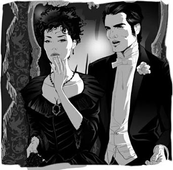
'You are the woman I would have married if it had been possible,' said Newland.
'But it's you who've made it impossible!' she cried.
He stared at her, his mind full of darkness in which there was a single point of blinding light.
'I've made it impossible?'
'You, you, you!' Her lips were trembling. 'You made me give up the idea of divorce, to spare my family the publicity, the scandal. And because my family was going to become your family, I did what you told me. I did it for you, and for May!'
'Good God!' he cried. 'And I thought... oh, don't ask me what I thought!'
She blushed deeply. 'But I do ask you.'
'There were accusations in your husband's letter...'
'I had nothing to fear from that letter, absolutely nothing! All I feared was to bring scandal on the family, on you and May.'
'Good God!' he cried again, putting his face in his hands.
The silence that followed lay on them like a gravestone, and it seemed to Newland that nothing would ever lift that load from his heart. He did not move, or raise his head from his hands.
'At least I loved you!' he said, out of the darkness.
On the other side of the room, he heard a sound like a child crying softly. He ran to her.
'Ellen! What madness is this? Why are you crying? Nothing's done that can't be undone. I'm still free, and you're going to be.' He had her in his arms, her face like a wet flower at his lips. Why, oh why, had he stood for five minutes arguing with her across the room, when just touching her made everything so simple?
She gave him back all his kiss, but after a moment he felt her stiffening in his arms, and she put him aside.
'Ah, my poor Newland – I suppose this had to happen. But it doesn't change things in the least.'
'It changes the whole of life for me.'
'No, it mustn't, it can't. You're engaged to May Welland, and I'm married to the Count.'
Newland stood up. 'Nonsense! It's too late for that sort of thing. We've no right to lie to other people or ourselves.'
'You say that because it's the easiest thing to say at the moment. In reality it's too late to do anything but what we'd both decided on. You see, from the very beginning I realized how kind, how noble you were. Very good people don't impress me – I feel they've never been tempted. But you know, you understand, you've felt the world outside, tempting you with its golden hands – and yet you won't accept happiness bought with cruelty. That's better, nobler, than anything I've ever known.'
She spoke quietly, without tears, and each word burnt its way into Newland's heart. 'Don't let us undo what you've done!' she cried. 'I can't go back now to that other way of thinking. I can't love you unless I give you up.'
They remained, facing each other, divided by the distance her words had created. Suddenly, he was angry. 'And Beaufort? Is he to replace me? You're seeing him this evening, aren't you?'
'I shall not go out this evening,' she said calmly.
'You tell me you're lonely – I've no right to keep you from your friends,' he said bitterly.
'I shan't be lonely now. I was lonely, I was afraid. But the emptiness and darkness are gone now.'
He turned away, with a sense of complete exhaustion.
At that moment the doorbell rang, and a minute later the servant came in with a telegram for the Countess. It said:
GRANDMOTHER'S TELEGRAM SUCCESSFUL. PARENTS AGREE WEDDING AFTER EASTER. TOO HAPPY FOR WORDS AND LOVE YOU DEARLY. YOUR GRATEFUL MAY
Half an hour later, when Newland unlocked his own front door, he found a similar telegram waiting for him in the hall, saying:
PARENTS AGREE WEDDING TUESDAY AFTER EASTER GRACE CHURCH. SO HAPPY. LOVE MAY
He started laughing wildly and could not stop. He was making so much noise that his sister came out of her bedroom.
'Newland, whatever is the matter? It's very late!'
'Nothing's the matter, Janey, except that I'm going to be married in a month!'
Janey fell on his neck and pressed him to her thin chest. 'Oh, Newland, how wonderful! I'm so glad! But why do you keep on laughing? Do stop, or you'll wake Mother.'
dutiful adj. doing what you are expected to do and behaving in a loyal and obedient way 尽本分的，恭顺的
the depths of winter the middle of winter, especially when it is very cold 隆冬
freezing adj. very cold 极冷的
defenceless adj. weak and unable to protect yourself from attack or harm 无防卫能力的，无助的
historical adj. relating to the past 历史的
stiff adj. firm, hard, or difficult to bend 硬的
temptation n. the desire to do something that you know is wrong 诱惑
bitterly adv. in a way that someone or something makes you very unhappy, or shows that you are very unhappy 愤恨地
sunrise n. the time when the sun first appears in the morning 黎明，拂晓
unimaginably adv. in a way that is hard to imagine 不能想象地
burst out to suddenly say something in a forceful way 突然说出，大声喊叫
once and for all if you deal with something once and for all, you deal with it completely and finally 一劳永逸地，一次了结地
take one's breath away to be extremely exciting 使某人惊讶得透不过气来
public opinion the opinions or beliefs that ordinary people have about a particular subject 公众舆论
plainly adv. honestly, and without trying to hide the truth 坦率地
think for oneself to have ideas and thoughts of your own rather than believing what other people say 独立思考
priceless adj. extremely valuable 无价的，稀世之珍的
count on to depend on someone or something, especially in a difficult situation 指望，依靠
doorway n. the space where a door opens into a room or building 门道，门口
shorten v. to make something shorter 缩短
noble adj. being courageous and honest, thinking about other people 高尚的
blinding adj. so bright or strong that you cannot see properly 炫目的，使人眼花缭乱的
publicity n. the attention that someone or something gets from newspapers, television etc 舆论
gravestone n. a stone above a grave showing details of the person buried there 墓碑石
stiffen v. if you stiffen, your body suddenly becomes firm, straight, or still because you feel angry or anxious 变得绷紧
replace v. to start doing something instead of another person, or start being used instead of another thing 取代
emptiness n. a feeling of great sadness and loneliness 空虚
exhaustion n. extreme tiredness 精疲力竭
Easter n. a Christian holy day in March or April when Christians remember the death of Christ and his return to life 复活节
梅让纽兰大感意外
5
梅让纽兰大感意外
在海班克，纽兰一直是位尽本分的客人。直至周日午餐过后，他才借了一辆马车，驾车前往斯库特克利夫。
范德卢顿夫妇的乡间大宅从不让人觉得特别舒适，而此时正值隆冬，越发显得冰冷。开门的用人告诉纽兰，范德卢顿太太和伯爵夫人去做礼拜了。纽兰说他会步行去教堂见两位夫人。
沿着小路走时，他瞥见一个穿着红色大衣的身影正朝自己走来，不由欣喜万分。他急忙赶上前去，奥兰斯卡夫人不由立即止住脚步，微笑相迎。
“啊，你来了！”她说着向他伸出手，“范德卢顿太太还要去拜访几位朋友，所以就我一个人了。”
红色大衣让埃伦显得格外漂亮，很像从前的她。他回答说：“我来看看你在逃避些什么。”
她的笑容消失了，不过她回答说：“你很快就会明白。”之后，她稍为露出欢容，补充道：“现在有你在这里保护我，那又有什么关系呢？”
他涨红了脸，抓住她的衣袖问：“埃伦，出什么事了？你必须告诉我。”
“哦，我们先来一次赛跑！我的脚都要冻僵了！”她从他身边跑开，红色大衣在白雪的映衬下非常耀眼。纽兰在她身后追赶，在一棵树下追上了她，两人笑了起来。
她抬头望着他，笑着说：“我就知道你会来。”
“那说明你希望我来。”他回答说，心因为喜悦而狂跳不已。
他们一起往前踱步。大地仿佛在他们脚下欢唱，天空闪耀着一种神秘的光彩。
过了一会儿，她说：“梅要求你照顾我的。”
“我用不着谁来要求。”
“啊——你们所有人一定把我想得太可怜、太无助、太不能保护自己了！不过，这儿的女人好像并没有这种需要。”
他沉声问：“什么样的需要？”
“啊，你别问我！我不懂你的语言。”
他佇立在小径上，低头望着她。“如果我和你没有共同语言，那我来这儿干什么？”
“哦，我的朋友……！”她把手轻轻地放在他的手臂上。
“埃伦，你为什么不告诉我发生了什么事？”
“我会告诉你的，但是在哪里告诉你呢？在那个巨大的房子里，老是有用人进出各个房间，想独自呆上一会儿都办不到！美国家宅中就没有让人独处的地方吗？你们都那么腼腆，同时又那么开放。”
“啊，你不喜欢我们！”纽兰难过地说。
就在这时，他们走过帕特龙府的一间古老的石屋。斯库特克利夫首任主人在三百年前建造了这间石屋，并在此居住。范德卢顿夫妇现在保留了这间石屋，并将它作为一处历史名胜展示给客人们看。
“太幸运了！”埃伦喊道，“我们可以进去，安静地谈一谈。里面还有人生起了炉火。在那里没人会打扰我们。”
他们走了进去，在明亮的炉火旁坐下。
“你写信给我的时候很不愉快。”纽兰凝视着她表情丰富的脸说。
“是啊。可你在这儿，我就不会觉得不愉快了。”
“我在这儿呆不了多久。”为了不让自己说得太多，他双唇有些僵硬了。
“我知道。不过，我只图一时快乐，我不会把事情看得太长远。”
他渐渐感受到了这些话的诱惑。他站起身望向窗外，背对着她。假如她一直逃避的原来是他，而她是想等他们在这隐秘之处单独相处时再告诉他，那该怎么办？
“埃伦，请告诉我。告诉我你在逃避谁。”
她沉默了很长一段时间，期间纽兰幻想她会悄悄走到他身后，张开轻盈的双臂搂住他的脖子。他几乎听见她的动静。他等待着，整个身心都准备好迎接这美妙的事情，可就在这时，他看见一个穿着厚重外套的男人，正沿着小路朝宅子走过来——那人正是朱利叶斯·博福特。
“啊！”纽兰猛地笑起来，说：“原来是这么回事？”
奥兰斯卡夫人跑到他身旁，悄悄把手伸进他手里。可当她看见博福特时，脸色变得煞白。“我并不知道他在这儿，”她小声说，依然握着纽兰的手，但他把手抽了回去，然后走到门厅，猛地打开小屋的门。“快进来，博福特，走这边！奥兰斯卡夫人正等着你呢！”他说。
第二天纽兰启程回纽约，途中他想起博福特时心生怨恨。博福特显然就是埃伦想逃避的那个人。他在追求她，而朱利叶斯·博福特追求漂亮女人从来只有一个目的。
接下来的两三天，时间过得非常缓慢。有时，纽兰感觉自己正被前途活埋。他没有听到埃伦的任何消息，直至第四天傍晚，才在家里收到她的一封便函。上面简短地写着：
明天傍晚过来，我一定要向你解释。
埃伦
年轻人整晚都在想那封便函。答复的方式有好几种。直至黎明时分，他终于决定了回答的方式，就是收拾几件衣服放入旅行箱，然后跳上一班当天驶往佛罗里达的轮船。
纽兰沿着圣奥古斯丁的沙面大路往前走，当他看见梅·韦兰站在那里，头发上洒满了阳光时，怀疑自己为何等了这么久才来。这里才是真实世界，这里才有属于他的生活！
“纽兰——发生什么事了吗？”她问。
“是的，我觉得我必须见见你。”他回答说。她的脸上一下子现出幸福的红晕。他们坐在橘树下的一张长凳上。他伸出胳膊搂住她的腰并亲吻她。这感觉就像在炎热的夏日里喝上清凉的山泉。
他对梅的父母解释说，他过来是因为他感觉自己可能要感冒。对于健康的一切忧虑，韦兰先生感同身受，因此他坚持要纽兰留下和他们待上至少一个星期，以防止他得病。
在佛罗里达温暖的日光下，他和梅一起散步、读书、划船。他无时无刻不在想着他们的婚礼，但它似乎是难以想象地遥不可及。
他离开前的一天，他们又来到橘树林中散步。他突然脱口而出：“梅，难道你不明白吗？我希望让我们的梦想变成现实！我希望你成为我的妻子，不用等到以后，现在就嫁给我！我想今年就结婚，不要等到明年！”
梅沉默了片刻。然后，她用清澈的眼睛直视着他，说道：“我不敢肯定自己是否真的明白。这是否——是否因为你没有把握会继续喜欢我呢？”
纽兰震惊，他说：“我的天——也许吧——我不知道。”两人一时间都沉默不语。
“如果那是真的——那么，我们之间是否有第三个人？我们坦率地谈谈吧，纽兰。自从我们订婚的消息宣布之后，我感觉你变了。”
“亲爱的，你在胡说些什么？”他挤出这句话。
“我们谈论一下也无妨。犯错极其容易——任何人都会。”
“假如我犯了你说的那种错误，我会求你快点儿嫁给我吗？”
她默想片刻，终于说道：“会，你也许想——一劳永逸地解决这个问题。”
她的镇定和睿智让他大吃一惊，但他可以看出这对她来说是多么痛苦。她接着说：“你知道，一位姑娘能看通的，比她父母所想象的要多。我早就知道你过去的生活中曾有一个人。我见过她一次——那时她脸色很悲伤，我为她感到难过——后来我们订婚时我还记得。”
“亲爱的——你说的就是那件事啊？你要是知道真相就好了！”
“这么说，还有我不知道的真相？”
“我的意思是说，那段往事的真相。”
“可我就是想知道那件事的真相。纽兰，我不能把自己的幸福建立在对另一个女人的不公平之上！我明白，当两个人真心相爱，他们也许不得不违背公众舆论。如果你觉得自己……对那个女人有任何许诺……又假如有什么办法让你能够履行自己的承诺……甚至通过让她离婚的方法，那么，纽兰，不要因为我而抛弃她！”
他从未像此时此刻那样对梅充满钦佩之情。她如此坦率地讲话，这是多么有勇气啊！而且，她居然提出放弃他以成全他以前的情人，这是多么慷慨大度啊！可是，即便她聪慧至此，却依然没有看出他此刻因何事而烦恼。
“根本没有你想的那种承诺，但我很喜欢你这么说。我是说，每个女人都有权得到自由——”他停下来，为自己想到的事情吃了一惊。
梅转过头来望着他，脸色泛红。他低下头去吻她，发现她双眼噙满了幸福的泪水。有那么一会儿，纽兰看到了一个能够独立思考、准备挣脱社会约束的女人。但下一刻眼前人又变回从前那个行规矩步的梅，这让他感到失望。她似乎觉察到他的失望，但却不知道该对此做些什么。两人默默无语地走回家去。
纽兰返回纽约两天后拜访了曼森·明戈特老太太，想游说她运用对韦兰夫妇的影响力，把他和梅的婚礼日期提前。她被他的急切逗乐了，所以同意帮忙。前去看望奶奶的伯爵夫人正好也在场，她听着这番谈话，神情若有所思。之后，她陪纽兰走到前门，他们单独待了几分钟。
“我什么时候可以去见你？”他小声问。
“什么时间都行。不过，如果你想再看看那所小房子，就一定要快。下个星期我就要搬家了。”
那一瞬间，他仿佛又回到她客厅里，身处于异域风情的气氛中。“明晚怎么样？”他问。
“明天，好吧，不过要早些，晚点我要外出。”
他到她家的时候才八点半。在客厅里，他见到了埃伦的姑妈梅多拉·曼森。她去了长途旅行，刚自古巴回来。她和他打了招呼。在他们等着埃伦时，她说自己带了一封伯爵的信，要交给她的侄女。“是啊，我那可怜的傻瓜奥兰斯基，”她又说，“他只要她回去，继续当他的妻子！”
“我的天！”纽兰喊道，并跳了起来。
“你吓坏了？当然我不会替他辩解。可是，如果她继续留在这里，想想她要放弃些什么！宫殿、珠宝、艺术、价值连城的家具、音乐和聪敏的谈话——请原谅，亲爱的年轻人，那些东西这里一样都没有。阿彻先生，事实上我听说你对亲爱的埃伦很有影响力，因此我希望能得到你的支持——让你确信……”
“确信她应该回去？那我宁愿看她去死！”年轻人激动地喊。
“啊。”曼森太太平静地说，“你是要我相信，你宁愿让她去死吗？”她指指沙发上一大束昂贵的花，当眼处放着博福特的名片。“婚姻毕竟是婚姻……我侄女现在仍然是别人的妻子……”
正说着，埃伦出现在门口。
“我们正在说，亲爱的，”曼森太太笑着说，“这是有个仰慕者给你送来的东西。”
奥兰斯卡夫人转过身，看见了那束花，一股无声的愤怒仿佛在她体内流窜。她拉铃叫来用人，让她把花送给隔壁生病的邻居。“立刻把花送走！”她大声说，“我不要在家里看见这东西！”她转身对纽兰说：“阿彻先生，我姑妈刚刚要走，请你把她送上马车，好吗？等马车回来的时候我再走。”
他回来的时候，伯爵夫人正坐在炉火旁。
“你姑妈认为你会回到你丈夫的身边。”他说。
“人们相信我会接受很多残忍的事情。”
“哦，埃伦——请原谅——我是个傻瓜！”
“我知道你有自己的烦恼。你觉得韦兰夫妇对你的婚事不通情理，我当然赞同你的意见。”他意识到她在转换话题。
“是的。我去了南方，要求梅缩短订婚期。我们俩坦率地谈了一次，事实上这是我们头一回如此坦率地谈。她认为我的急不可耐是一种不好的征兆。她觉得，我想立刻同她结婚，是为了逃避某人——一个我更喜欢的人。”
“可如果她是那样想的话，干吗不也急着结婚呢？”
“因为她不是那种人，她要高尚得多。她提出要为另外那个女人而放弃我。”
奥兰斯卡夫人凝视了炉火好一会儿。纽兰听见下面安静的街道上，传来她的马返回的声音。
“那确实很高尚。”她说。
“是的。不过，我并不打算娶别人。”
“噢。”她又静默了好一会儿，“这另外那个女人——她爱你吗？”
“啊，根本就没有另外一个女人。我是说，梅所想象的那个人从来都没——”
“那你究竟为何这样急着结婚呢？”
“你的马车来了。”纽兰说。
“是啊，我得走了。我约好了去斯特拉瑟斯太太家。我必须接受别人的邀约，不然我会太孤单。”她略微笑了笑。
纽兰不想让她离开。“梅猜对了，”他说，“确实有另外一个女人——但不是她想的那一位。”
她没有答话，也没有动。他坐到她身边，抓住她的手。可她却跳起来把手挣脱。
“可别向我求爱！太多男人这样做了！”
这是她能够跟他说的最尖刻的话了。
“我从来没向你求过爱，今后也不会。但是，假如有可能的话，你才是我想要娶的女人。”
“可正是你让这变得不可能！”她喊道。
他睁大眼睛看着她，在一片昏暗的思绪中，有一点炫目的光。
“是我让这一切变得不可能？”
“是你，是你，是你！”她的嘴唇在颤抖，“是你让我放弃离婚的想法，好让我的家族避开舆论和丑闻。因为你将会成为我家族的一员，所以我按照你说的做了。我这样做是为了你，为了梅！”
“我的天！”他叫道，“我当时想的是……噢，别问我想的是什么！”
她脸涨得通红：“可我确实问了你。”
“你丈夫的信里有些指责……”
“那封信里没有什么让我害怕的内容，绝对没有！我担心的就只有给家族，给你和梅，带来丑闻。”
“我的天！”他又一次叫道，并用双手捂住了脸。
随后的沉默像墓碑石一样压在他们身上，而对纽兰来说，似再没有任何东西能够卸去他心头的重负。他没有动，头也没有从双手上抬起。
“至少我爱过你！”他的话语划破了那片黑暗。
他听见房间的另一头有一声孩子般的抽噎。他跑到她身边。
“埃伦！你疯了么？你哭什么？没有覆水难收这回事。我还是自由身，你不久也是。”他用胳膊搂住她，他唇下那张脸就像被打湿的花朵。为什么，噢，为什么他竟然站了五分钟时间，在屋子另一头与她争论？原来只要一碰触她就能使一切变得如此简单。
她回应他的吻。但过了一会儿，他觉得她在他怀中变得绷紧，接着她把他推到一边。
“啊，我可怜的纽兰——我想这一切注定会发生，但这丝毫改变不了现实。”
“它改变我的整个生活。”
“不，那不应该，也不可能。你已经和梅·韦兰订了婚，而我还维持着和伯爵的婚姻关系。”
纽兰站了起来，他说：“瞎说！说这种话已经太晚了。我们没有权利欺骗他人、欺骗自己。”
“你讲这样的话，是因为眼下这样说最容易。事实上，除了我们两个已经作出的决定，要做其他事已经太晚了。听我说，从一开始我就知道你是多么善良、多么高尚。大好人不能打动我——我觉得他们从未被诱惑过。但是你明白，你理解。你体验过外面的世界用金手诱惑你的滋味——然而，你不接受用冷酷换取的幸福。这比我所知的一切都更好、更高尚。”
她止住泪水，静静地说着，每个字都烙在了纽伦的心头。“我们还是不要改变你已经做了的事吧！”她大声说，“我现在不能回头去那样想了。只有放弃你，我才能爱你。”
他们依旧面对着面，但已然被她这番话制造的距离分隔开了。他突然觉得很生气。“那么是博福特？他会取代我的位置？你今晚要去见他，对吗？”
“我今天晚上不出去了。”她平静地说。
“你告诉我你很孤单——我没有权利让你离开你的朋友们。”他愤愤地说。
“现在我不孤单了。我曾经孤单过，也曾经恐惧过，但现在空虚与黑暗的感觉已然消散。”
他背过脸去，有一种精疲力竭的感觉。
就在此刻，门铃响了。一分钟之后，用人走进来，手里拿着一封给伯爵夫人的电报。上面写着：
外婆电报奏效。爸妈同意复活节后结婚。幸福难言。爱你。你感恩的梅。
半个小时之后，纽兰打开自己家的前门，他在门厅里见到了一封内容相近的电报在等着他，上面写着：
爸妈同意复活节后的周二在格雷斯教堂举行婚礼。很高兴。爱你的梅。
他不能自已地狂笑起来。他妹妹听见笑声，从卧室里走了出来。
“纽兰，究竟怎么啦？已经很晚了！”
“没什么，珍妮，再过一个月我就要结婚了！”
珍妮紧紧搂着他的脖子，把他按到自己瘦弱的胸前。“哦，纽兰，太好了！我真高兴！可是，你为什么笑个不停？别笑了，不然会吵醒妈妈的。”
6 The wedding and beyond
6
THE WEDDING AND BEYOND
The sun shone weakly down on Grace Church, and a light spring wind blew dust everywhere. Inside the church almost every seat was taken, and in the centre stood the bridegroom and his best man, waiting for the bride to arrive.
Newland was familiar with the preparations necessary for a fashionable New York wedding, as he had often been a best man himself at his friends' weddings. For his own wedding he had obeyed all his best man's commands, following his instructions down to the last detail. It was easier to obey blindly than to think, to doubt, to question. 'I've sent flowers to the eight bridesmaids,' he thought, 'I've written thankyou letters for the wedding presents, paid for the use of the church, and made arrangements for the honeymoon. I think I've done everything.'
'Got the ring all right?' whispered his best man, looking pale. He was feeling the heaviness of the responsibility.
Newland did what he had seen so many bridegrooms do – feel quickly in a jacket pocket – and found the little gold ring, which had Newland to May, April 22, 1874 written inside.
He looked at the faces he knew so well in the seats all around him. 'How like a first night at the opera,' he thought, 'waiting for the curtain to rise!' He saw his mother and Janey, crying with happiness, he saw Julius Beaufort next to his beautiful wife, he saw Lawrence Lefferts, the expert on 'form'. He wondered how many social mistakes Lefferts' eager eyes would discover during the wedding, and then he suddenly remembered that he too had once thought such things important. A stormy discussion about whether the wedding presents should be put on show to the guests had darkened the last hours before the wedding, and it seemed unbelievable to him that adults could get so angry over something so meaningless. Yet there was a time when he had had just as strongly-felt opinions on such matters.
'And all the while, I suppose,' he thought, 'real people were living somewhere, and real things were happening to them...'
'She's coming!' the best man whispered excitedly, but Newland knew better. It was true the great doors had opened, but only for the arrival of May's family, not the bride herself.
As the family came in, there was a thin older woman, who almost made his heart stop beating. Medora Manson and her niece were now living in Washington, and neither of them was expected at the wedding. Newland stared hard at Medora, trying to see who came behind her. There was no one.
'Newland – I say – she's here!' said the best man.
Newland realized he had been in a kind of dream for the last few minutes, because the bride, on her father's arm, with her bridesmaids behind her, was already halfway towards him. He opened his eyes and felt his heart begin to beat normally again. The music, the flowers, the cloud-like figure all in white coming closer, all these sights and sounds, so familiar in themselves, so very strange to him today, were making him feel confused.
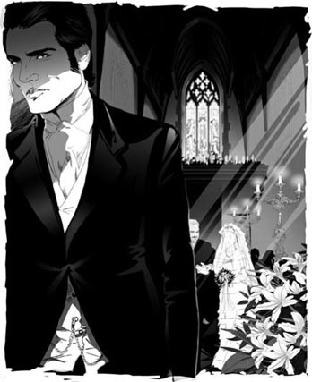
The bride, on her father's arm, was already halfway towards him.
'My God,' he thought, 'have I got the ring?' and once more he did what all bridegrooms do, desperately pushing his hand down into his pocket until his fingers touched gold.
Then, in a moment, May was beside him, looking so beautiful that he stood a little straighter and smiled into her eyes.
A short time later, the ring was on her finger, and they were ready to walk through the church past their smiling friends and then out into the sunshine as man and wife. 'Your arm – give her your arm!' whispered the best man, and once more Newland came back to reality. 'What was it that set me dreaming this time?' he wondered. Perhaps it was seeing a dark-haired lady at the back of the church, who, when she turned round, was laughably unlike the person he was thinking of.
And now he and his wife were getting into the carriage. She turned to him with a brilliant smile and they held hands.
'Dearest!' said Newland – and suddenly a black hole opened up in front of him and he felt himself falling deeper and deeper into it, while his voice went on speaking smoothly and cheerfully. 'Yes, I thought I'd lost the ring – well, every bridegroom thinks that, I suppose. But you did keep me waiting, you know. I had time to think of every horror that might possibly happen.'
She surprised him by throwing her arms round his neck, right in the middle of Fifth Avenue. 'But none can ever happen now, can it, Newland, as long as we two are together?'
Newland's aunts, the du lacs, had offered the young couple their country home near Skuytercliff for the first week of the honeymoon, but when Newland and May got out of the train at the nearest station, they discovered one of the van der Luydens' servants waiting for them.
'I'm sorry, sir,' he said, 'but there's a problem with the water at the du lacs', so Mr van der Luyden has arranged for you to stay at the Patroon's house at Skuytercliff instead.'
Newland stared at the man, unable to speak, but May's eager voice broke out, covering the embarrassed silence, 'Oh, the Patroon's house will be perfect – won't it, Newland? It's so kind of the van der Luydens to think of it!'
And as they stepped into the van der Luydens' carriage, she said to Newland, 'I've never been inside it – have you? The van der Luydens opened it to show Ellen, it seems, when she was staying at Skuytercliff. She told me it's the only house she's seen in America where she could imagine being completely happy.'
'Well, that's what we're going to be, isn't it?' cried her husband, smiling brightly.
'Ah, it's just our luck beginning,' she replied, 'the wonderful luck we're always going to have together!'
After their stay at the Patroon's house, they sailed to Europe to continue their honeymoon. They spent June in Paris, so that May could order new clothes, July in the Swiss mountains, and August in a quiet little town on the northern French coast. Their final two weeks were in London, so that Newland could order his clothes. They did not go to the Italian lakes – thinking about it, Newland could not imagine his bride there. In fact, travelling interested her even less than he had expected.
Newland had decided to behave to May exactly as all his friends behaved to their wives, and to put away his thoughts about freedom for women. There was no use giving freedom to a wife who had not the smallest idea that she was not free. He knew that the fineness of May's feeling for him, and her nobility of character, made her a wife of whom he could be proud, but her insistence on obeying the rules of society worried him.
In London, at a dinner party given by some friends of Mrs Archer's, the Carfrys, they met a young Frenchman called Monsieur Rivière. Newland liked him, in spite of his thin, ugly face, and had an interesting conversation about books with him. Later, Newland suggested to May that they could invite the Frenchman to dinner, to continue the conversation.
May was surprised. 'But he's almost like the Carfrys' servant! They pay him to teach French to their nephew! Why would we invite him to dinner? Surely not, Newland!'
Newland did not protest, because he did not feel strongly enough about it. He realized, with a sudden cold feeling inside him, that in future many problems would be solved for him in this way, and he tried to find comfort in the old saying that the first six months of marriage were always the most difficult.
When they returned from their honeymoon, and moved into the well-built, expensively furnished house Mr Welland had bought for them, life became easier for Newland. He had his routine of going to the office, and then seeing some of his friends in a bar or a club, and occasionally taking May to the theatre or the opera.
But in the spring of the following year May persuaded him that they should spend August with her parents in their comfortable beach house in fashionable Newport. Newland had agreed, because he could think of no good reason for refusing, but he knew he would not enjoy it. May reminded him that when he was single, he had enjoyed spending the summer there, and he knew it was true. He was surprised to find how much his opinions had changed since then.
But he could not say that he had been mistaken in his choice of bride. May was one of the handsomest and most popular young married women in New York, and a thoughtful, sweet-tempered companion. He had trained himself to think of his feelings for her cousin as a momentary madness, as the last of a young man's attempts to find love. It now seemed unthinkable that he could have dreamed of marrying Ellen Olenska, and she remained in his memory as the saddest of a long line of ghosts.
One day, while they were in Newport, he and May visited old Mrs Manson Mingott, who had her own house there. Newland discovered from the two women's conversation that Ellen and her aunt were spending the summer with some people called the Blenkers, at Portsmouth, a much less fashionable town further north. Then old Mrs Mingott added, 'But dear Ellen's come to spend the day with me today,' and Newland's heart almost stopped beating, as it had done at his wedding.
'She's just outside, I think.' Mrs Mingott said, and she called out through the window across the garden, 'Ellen! Ellen!'
There was no answer, so Mrs Mingott rang for a servant.
'Where's the Countess Olenska?' she demanded.
'Walking down to the beach, madam,' replied the servant.
The old lady turned to Newland. 'Be a good boy – run and fetch her for me,' she said. He stood up in a kind of dream – he was seeing the little fire-lit sitting room again, and hearing the sound of Ellen's horses returning down the deserted street.
He walked down to the beach, and stopped before he reached the sand. There, in front of him, on a long grassy piece of land, was a wooden summerhouse, with windows and doors open to the warm summer air. Inside the summerhouse stood a lady, looking out to sea. 'Have I just woken up?' wondered Newland. That figure from the past was a dream, and the reality was what was waiting for him away from the beach – his young wife, dinner with the Wellands, summer with the Wellands... 'What am I? Just a son-in-law and a husband,' he thought.
The figure in the summerhouse had not moved. For a long moment the young man stood there, watching the sailing boats out at sea. The lady seemed to be held by the same sight.
'She doesn't know – she hasn't guessed,' he thought. 'Would I know if she came up behind me, I wonder?' And suddenly he told himself, 'If she doesn't turn before the red sail crosses in front of that rock, I'll go back up to the house.'
The boat with the red sail was moving out to sea with the tide. It moved slowly towards the rock, and then passed it. Newland waited until the sail was a long way past the rock, but still the figure in the summerhouse did not move.
He turned and walked up the hill to the house.
As they drove home in the gathering darkness, May said, 'I'm sorry you didn't find Ellen. I'd have liked to see her again. But perhaps she no longer cares for her friends. I mean, why give up New York and go to Washington? I wonder if she would be happier with her husband, after all.'
Newland burst into an angry laugh. 'That's cruel of you – you know she would suffer terribly if she went back to him!'
'It's a pity she ever married a foreigner, then,' said May calmly, sounding very like her mother. Newland did not reply.
That evening, at May's parents' home, he felt it was the Welland house, and the life he was expected to live in it, that had become unreal, while the short scene at the beach was as close to him as the blood in his body.
All that night he lay awake at May's side, watching the moonlight on the carpet, and thinking of Ellen Olenska.
bridegroom n. a man on his wedding day 新郎
best man a male friend or relative of the bridegroom who assists him at his wedding 伴郎
familiar with knowing something very well 熟悉……
preparation n. arrangements for something that is going to happen 准备工作
bridesmaid n. a young woman or girl who helps a bride before and during the wedding ceremony 伴娘
honeymoon n. a holiday for a man and woman who have just got married 蜜月
stormy adj. a stormy relationship, meeting etc is full of strong and often angry feelings 激烈的
darken v. to become less hopeful or positive, or to make something like this 使阴郁
halfway adv. at a middle point in space or time between two things 中途，半路上
laughably adv. in a way impossible to believe or be serious about, because it is so silly or bad 荒唐可笑地
nobility n. the quality of being noble 崇高，高尚
old saying a well-known short statement that expresses an idea most people believe is true and wise 古话，老话
thoughtful adj. always thinking of the things you can do to make people happy or comfortable 体贴的，关心别人的
sweet-tempered adj. having a character that is kind and gentle 性情温和的
momentary adj. continuing for a very short time 短暂的
unthinkable adj. impossible to accept or imagine 不可思议的，不能想象的
ghost n. the memory or effect of someone or something bad that lived, existed, or happened in the past（对过去存在或发生过的不好的事情或不好的人的）记忆，回忆
summerhouse n. a house that somebody lives in only during the summer 避暑别墅
moonlight n. the light of the moon 月光
婚礼及其后
6
婚礼及其后
阳光淡淡地铺洒在格雷斯教堂上，春日的轻风将灰尘吹得到处都是。教堂里几乎座无虚席，教堂中央站着新郎和他的伴郎，他们正在等待新娘的到来。
对于要在纽约举行一个时尚婚礼所需要的准备工作，纽兰了然于胸，因为他之前经常在朋友们的婚礼上担任伴郎。等到他自己的婚礼，他服从伴郎的各项指令，一字不差地予以执行。盲从往往比思考、怀疑和质询要轻松得多。他想：“我已经把花送给八位伴娘，为结婚礼物写好答谢信，支付了使用教堂的费用，并为度蜜月作好安排。我想，我已经完成了一切任务。”
“戒指放好了吗？”伴郎小声问，脸色看起来有些苍白。他感觉到了自己所肩负的重担。
纽兰做了个他见很多新郎都做过的动作——他在外套口袋里快速摸了摸，然后找到了那枚小小的金戒指，戒指内圈上刻着“纽兰致梅，1874年4月22日”。
他看了看周围座位上那一张张熟悉的面孔。“多像歌剧院的第一夜演出，”他想，“正在等待帷幕升起！”他看见了高兴得直抹眼泪的母亲和珍妮，看见了坐在漂亮妻子身旁的朱利叶斯·博福特，还看见了熟稔“礼仪”的专家劳伦斯·莱弗茨。他很好奇，在这场婚礼中，莱弗茨那双热切的眼睛会挑出多少在社交场合犯的错误。接着，他突然想起自己也曾把这些事情看得非常重要。关于是否应该向宾客们展示结婚礼物，他们激烈争论，在婚礼前的最后时刻吵得昏天黑地。一群成年人竟然会为这样毫无意义的事情而大动肝火，这让纽兰感到难以置信。然而，曾几何时，他也曾对这些事情持有同样强烈的看法。
“我始终认为，”他想，“在某个地方，还生活着真实的人，他们正经历着真实的事……”
“她来了！”伴郎兴奋地低声说，但纽兰比他更清楚。大门确实是打开了，不过来的是梅的家人，而不是新娘本人。
新娘家人鱼贯而入，其中一位年纪稍长的瘦削女士，几乎让纽兰的心停止了跳动。梅多拉·曼森和她的侄女现在住在华盛顿，没人料到她们会来参加婚礼。纽兰使劲地盯着梅多拉，想看看她后面是谁，结果发现她身后没人。
“纽兰——我说——她来了！”伴郎说。
纽兰这才意识到刚才的几分钟里自己恍若梦中，因为此时新娘已经行至半途。她挽着父亲的手臂，身后跟着各位伴娘。他睁开眼睛，感觉心跳开始恢复正常。伴随着乐曲和鲜花，那身着一袭白衣、如云般的身影向他走来。所有这些情景和声音原本是那样熟悉，今天对他来说却异常陌生，让他觉得纷繁杂乱。
“天哪！”他想，“我带戒指了吗？”他又一次重复了所有新郎都会做的动作，拼命把手插入口袋中，直至触摸到金戒指为止。
转眼之间，梅已经来到他身旁。她看起来是如此美丽，他挺直身子，看着她的眼睛微笑。
片刻之后，戒指戴到了她手指上。接着他们已准备好以夫妻的身份，从面带笑容的友人面前走出教堂，踏进阳光之中。“你的胳膊——把你的胳膊伸给她！”伴郎悄声说，这让纽兰再一次回到了现实。“这次又是什么把我带入梦幻之境呢？”他心中纳闷。也许是因为瞥见教堂后面的一位黑发女士。可笑的是，当那位女士转过身来，却与他想起的那个人相差千里。
此刻，他和妻子正准备登上马车，她转向他，面带灿烂的笑容，两人的手握在了一起。
“亲爱的！”纽兰说——突然，他面前出现了一个黑色的深渊，他感到自己跌入其中，越陷越深。与此同时，他的嗓音却依然流畅而愉快地响着：“是啊，我以为我弄丢了戒指——好吧，我想每个新郎都会那样想的。不过你知道，你确实让我等，让我有时间去想可能发生的各种可怕的事。”
令他惊讶的是，就在第五大道的正中间，她伸出双臂搂住了他的脖子。“可是纽兰，只要我们俩在一起，任何可怕的事都不会发生了，对吗？”
杜拉克家的几位姨妈把她们位于斯库特克利夫附近的乡间别墅腾出来，给纽兰和新婚太太在那里度过蜜月的第一周。纽兰和梅在离别墅最近的车站下了火车后，却发现范德卢顿夫妇家的一位用人正在等他们。
“非常抱歉，先生。”他说，“杜拉克家的供水出了点问题，因此范德卢顿先生安排你们改住到斯库特克利夫的帕特龙府。”
纽兰盯着来人，不知说什么好。梅用热情洋溢的声音打破了令人尴尬的沉默：“噢，去帕特龙府正好——对吗，纽兰？范德卢顿夫妇帮我们想到这地方，真是太好了！”
他们踏入范德卢顿夫妇的马车时，梅对纽兰说：“我还从没进过那房子呢——你去过吗？范德卢顿夫妇好像把那房子开放给埃伦看，就是她呆在斯库特克利夫的时候。她告诉我，在美国见到的房子中，这是唯一一所让她觉得可以在里面幸福生活的住宅。”
“嗯，我们将会非常幸福的，对吗？”她丈夫大声说，并绽放出灿烂的笑容。
“啊，我们的幸运将由这里开始，”她回答说，“幸福之神将永远眷顾我们！”
在帕特龙府住了一周后，他们乘船前往欧洲继续蜜月旅行。六月份时，他们住在巴黎，让梅定做新衣服；七月份去了瑞士的山区，八月份则待在法国北部海岸一个宁静的小镇。他们蜜月旅行的最后两周在伦敦度过，好让纽兰定做自己的新衣服。他们没有去意大利的湖区——纽兰，无法设想妻子会去那儿。事实上，她对旅行的兴趣甚至比纽兰预料的还要小。
纽兰决定要依足朋友们对待妻子那样对待梅，把自己那些关于女性自由的想法抛诸脑后。解放一位丝毫不觉得自己不自由的妻子是毫无意义的。纽兰明白，梅对他的似水柔情，她的高尚品格，足以使身为丈夫的他感到自豪，然而她对社交规则的恪守让他觉得忧虑。
在伦敦的时候，他们参加了阿彻太太的朋友卡弗莱一家为他们举行的晚宴。在那里，他们邂逅了一个叫做里维埃的年轻法国男人。尽管里维埃长着一张瘦削难看的脸，但纽兰很喜欢他，并跟他就一些书进行了有趣的交谈。后来，纽兰向梅提议，他们可以邀请那个法国人来吃晚饭，继续谈书。
梅颇感意外，她说：“可他简直就像是卡弗莱家的用人！他们聘请他给他们的侄子教授法语。我们为什么要邀请他来吃晚饭？当然不行，纽兰！”
纽兰没有提出异议，因为他对此愿望并不强烈。可他忽然感到一阵寒心。他意识到，将来许多问题都会以这种方式解决。他试着从一句古话中寻找慰藉：婚姻生活中的头六个月总是最为艰难的时期。
他们蜜月归来后搬进了韦兰先生为他们购买的房子，一幢建造精良、并放置了许多昂贵家具的住宅，生活对于纽兰来说变得愈发安逸。他又照惯例去事务所工作，然后在酒吧或俱乐部里和朋友碰面，偶尔也带着梅去看戏或是听歌剧。
但到了第二年春天，梅游说纽兰随同她的父母前往大受欢迎的纽波特度过八月，梅的父母在那里拥有一座舒适的海滨小屋。纽兰同意了，因为他想不出任何正当的理由来拒绝，但他知道自己不会喜欢这种安排。梅提醒他，说当他还是单身时，他很喜欢去那里度过夏季，他也明白这是事实。可从那以后，他的想法竟然已经发生了如此大的改变，他为此大吃一惊。
但他并不能说自己选错了新娘。梅是纽约最美丽、最受欢迎的已婚年轻女性之一，而且还是一个虑事周全、性情温和的伴侣。他已能克制自己，认定自己对她表姐的感觉是一阵短暂的疯狂，是一个年轻人试图寻找爱情的最后努力。想起自己曾梦想着娶埃伦·奥兰斯卡，实在是不可思议。她只是那一长串记忆中最愁苦的那一个。
在纽波特期间，一天，他和梅去拜访曼森·明戈特老太太，她本人在那里也有住宅。纽兰从两位女士的交谈中获悉，埃伦和她姑妈，以及一家叫布伦克斯的，正在普茨茅斯消夏，那是一座靠北且不太受欢迎的城镇。接着，明戈特老太太说：“不过，亲爱的埃伦今天来和我呆了一天。”纽兰的心几乎停止了跳动，就像在他婚礼上的那次一样。
“我想，她就在外面。”明戈特太太说完，隔着窗户朝花园那头大声喊道，“埃伦！埃伦！”
没有回答，于是明戈特太太拉铃叫来了用人。
“奥兰斯卡伯爵夫人在哪儿？”她问。
“她走路去下面海滩，夫人。”用人回答说。
老太太转向纽兰，对他说：“好孩子——跑去把她给我追回来。”他站起身，仿佛身处梦境一般——他再次看见了炉火映照的小客厅，听到了埃伦的马车沿着空荡荡的街道返回的声音。
他一路朝下面的海滩走去，到达沙滩之前却停住了脚步。在他面前一片长长的草地上有一座用木头盖的避暑别墅，门窗都开着，迎进夏日的暖风。别墅里站着一位女士，注视着外面的大海。“我刚从梦中醒来吗？”纽兰心想。过去的那个人影只是一场梦，而现实则在海滩之外等着他——他年轻的妻子、和韦兰一家的聚餐、和韦兰一家共度的夏天……“我是什么人？不过是一个女婿和丈夫。”他想。
别墅里的人影纹丝不动。年轻人在那里站了很久，凝视着海上航行的帆船。那位女士仿佛也被同样的景色吸引住。
“她不知道——她猜不到。”他想。“如果是她出现在我身后，我会不会知道呢？”突然他自言自语地说：“如果在红色帆船越过那块礁石之前她没有转过身来，我就回到房子里去。”
红色帆船随着潮水滑行，慢慢地驶向礁石，然后越过去。纽兰等待着，直到帆船离开礁石很长一段距离，小屋里的人影依然没动。
他转身朝山上的房子走去。
他们在渐浓的夜色中驱车回家时，梅说道：“真遗憾你没有找到埃伦。我本来想再见见她的，可是她也许不在意她的朋友们了。我是说，为什么要放弃纽约去华盛顿呢？我终究还是疑惑，她跟她丈夫在一起是不是会更快活一些。”
纽兰爆发出一阵充满怒意的笑声：“你太残忍了——你知道，如果她回到丈夫身边，会遭受痛苦的折磨！”
“她嫁给外国人本来就是个遗憾。”梅平静地说，语气酷似她的母亲。纽兰没有出声。
那天傍晚，在梅的父母家里，他感觉到韦兰的家和他在这个家里所被期望过的那种生活变得虚幻；而海滨那短暂的一幕，却像他身体里的血液一样与他密不可分。
晚上，他躺在梅的身边，看着映在地毯上的月光，想着埃伦·奥兰斯卡，一夜未眠。
7 Newland in Boston
7
NEWLAND IN BOSTON
The next day Newland told May he was going to see about buying a new horse for her carriage, and drove north to Portsmouth. He found the Blenkers' house, but Ellen was not there. The Blenkers told him she had received a telegram the day before, and gone to Boston, where she would be staying at the Parker House Hotel.
When he returned to Newport, he told May he had urgent business in Boston. He was ashamed of the way he was able to lie so easily, but it had to be done. He travelled all night, by boat and train, and arrived in a hot and dirty midsummer Boston.
After having breakfast at a hotel, he sent a messenger to the Parker House Hotel with a note for Countess Olenska. The man returned after ten minutes. 'The lady was out, sir,' he said.
'It must be a mistake!' thought Newland. 'How could she be out so early? How stupid of me not to send a note earlier!'
He went out, and as he started to walk across the park towards Ellen's hotel, he saw her, sitting on a bench under a tree. Her head was bent low, and she looked quite miserable. He came a step nearer, and she turned and saw him.
'Oh!' she said, her face breaking into a slow smile of wonder and happiness, and she made room for him on the bench.
'I'm here on business – just got here,' Newland explained. 'But what on earth are you doing here?' He had really no idea what he was saying; he seemed to be shouting to her across endless distances; he thought she might disappear again before he could reach her.
'I'm here on business too,' she answered.
'You do your hair differently now,' he said, his heart beating wildly as he looked at her.
'Differently? No, it's the best I can do without my servant.'
'You didn't bring her? You're staying alone at the hotel?'
She looked at him, with a little challenging smile in her eyes. 'Does that seem so dangerous to you?'
'No, not dangerous, but—'
'But unusual? I see, I suppose it is. I hadn't thought of it, because I've just done something so much more unusual.' Her eyes still watched him with a little challenge. 'I've just refused to take back some money – which belonged to me.'
Newland jumped up and moved a step or two away. Then he came back and stood in front of her.
'Someone – has come here to meet you – with this offer?'
'Yes.'
'And you refused, because of the conditions?'
'I refused,' she said after a moment.
He sat down by her again. 'What were the conditions?'
'Oh, they were not demanding. Just to sit at the head of his dinner table now and then.'
There was another silence. Newland was searching for the right words. 'He wants you back – at any price.'
'A considerable price. At least, it's considerable for me.'
'You came to Boston in order to meet him?'
She stared, and then laughed. 'Meet him – my husband? Here? He spends his summers in more fashionable places.'
'He sent someone to you, with a letter?'
'Not a letter, just a message. He hardly ever writes to me.'
Newland blushed, thinking of the accusation in the only letter he knew the Count had written to her. 'Why is that?'
'Why should he write? What are secretaries for?'
The young man's blush deepened, and he was about to ask, 'Did he send his secretary, the one you ran away with?' But he stopped, in order to spare Ellen the embarrassment of replying.
'The messenger has insisted on waiting until this evening,' added Madame Olenska, smiling, 'in case I change my mind.'
'And you came out here to think things over?'
'I came out for a breath of air. The hotel's too hot. I'm taking the afternoon train back to Portsmouth.'
They sat silent, not looking at each other. Finally she turned her eyes again to his face and said, 'You've not changed.'
He felt like saying, 'I had, until I saw you again,' but instead he stood up suddenly and looked round at the untidy park.
'This is horrible. Why don't we go out in a boat? It will be cooler on the water. We could take the boat to Point Arley and back.' She looked up at him hesitatingly and he went on, 'There won't be many people on the boat. My train for New York doesn't leave until the evening. Why shouldn't we?' Suddenly he broke out, 'Haven't we done all we can?'
'Oh!' she whispered. 'You mustn't say things like that to me.'
'I'll say anything you like; or nothing. What harm can it do to anybody? All I want is to listen to you.'
She took a little gold watch from her pocket.
'Oh, don't think about time!' he cried. 'Give me the day! Come now, at once! It's a hundred years since we last met – it may be another hundred before we meet again.'
Her anxious eyes were on his face. 'Why didn't you come down to the beach to fetch me, the day I was at Grandmother's?'
'Because you didn't look round. I wanted you to look round.' He laughed at the childishness of his behaviour.
'But I deliberately didn't look round. I knew it was you. I recognized your carriage when you drove up to the house. So I went down to the beach.'
'To get away from me as far as you could?'
She repeated softly, 'To get away from you as far as I could.'
He laughed again. 'Well, you see it's no use. I may as well tell you that I came here to find you. And I have found you. But look here, we must start or we'll miss our boat.'
They went back to the hotel, so that Madame Olenska could leave a note for the messenger. While Newland waited for her, he watched the stream of people passing in and out of the hotel. 'They all look so like each other,' he thought. And then suddenly came a face which was different from the rest – the face of a young man, pale with heat, or worry, or both. 'Probably a foreign businessman,' thought Newland, and then forgot about him.
When she came out, they took a taxi to the harbour, and were soon on a boat moving smoothly out into the open sea. As they left the city behind them, it seemed to Newland they were leaving their old familiar world behind as well. Were they starting on some voyage from which they might never return? He was afraid to ask Madame Olenska if she felt the same – she trusted him to remain calm and not speak of his feelings. There had been days and nights when the memory of their kiss had burned on his lips, and the thought of her had run through him like fire. But now that she was beside him, they seemed to have reached the kind of deeper nearness that a touch or a word might destroy.
When they arrived at Point Arley, the hotel dining room was full of a noisy party of school-teachers on holiday, so Newland asked for a private room, with a view over the sea. There he and Madame Olenska sat down to their lunch, like two old friends who had so much to say to each other...
They talked of all that had happened in the year and a half since they had met. They talked of ideas and social changes, the narrow minds of New Yorkers, and the reasons why she had decided to move to Washington.
'There are more varieties of people and of opinion there,' she said. 'Our New York friends seem to follow blindly the old ideas from England. But it seems stupid to have discovered America only to make it into a copy of another country.'
'Ah, it's what I've always told you,' said Newland sadly. 'You don't like us. We're dull. We've no character, no colour. I wonder,' he broke out, 'why you don't go back to him?'
Her eyes darkened, and he expected an angry reply. But she sat in silent thought, and he grew frightened that she might answer that she wondered too.
At last she said, 'I believe it's because of you.'
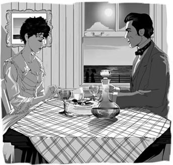
'I believe it's because of you,' said Ellen Olenska.
Newland reddened, but dared not move or speak.
'At least,' she continued, 'it was you who made me understand that under the dullness there are things so fine and sensitive that even those I most cared for in my other life look cheap by comparison. For a long time I've hoped this chance would come – so that I could tell you how you've helped me, what you've made of me...'
Newland broke in with a laugh. 'And what do you think you've made of me? I'm the man who married one woman because another woman told him to.'
'I thought – you promised – not to say such things!'
'Ah – how like a woman! None of you will accept a bad situation, or do anything about it!'
'Is it a bad situation – for May?' she asked in a low voice. 'Because that's what we've always got to think of, isn't it? That's what you've shown me.'
'I've shown you?' he echoed, looking blindly out at the sea.
'If it's not worthwhile,' she said painfully, 'to have given up our wishes, to save other people from misery, then everything I came home for, everything you've taught me, everything that makes my other life look so poor because no one there bothers about it – all these things are a pretence or a dream...'
'And if it's not worthwhile,' he finished for her, 'there's no reason on earth why you shouldn't go back?'
Her eyes stared desperately into his. 'Oh, is there no reason?'
'Not if you were hoping for the success of my marriage,' he said fiercely. 'My marriage is certainly not worth staying for. Well, what do you expect? You let me see a real life, just for a moment, and at the same time asked me to go on with a false one. It's more than any human being can bear – that's all.'
'Oh, don't say that – when I'm bearing it!' she burst out, her eyes filling with tears.
Newland sat dumbly, staring at her. 'You too – oh, all this time, you too?' She did not answer, but let the tears run down her face. He was thinking, with a strange sort of happiness, 'Now I shall never again feel completely alone.'
But after a moment he was in despair again. There they were, close together, yet so tied to their separate lives that they might as well be half a world apart.
'What's the use – when you will go back?' he cried out.
She sat without moving. 'Oh, I won't go yet!'
'Not yet? Some time, then? Some time in the future?'
At that she gave him her clearest look. 'I promise you, not as long as you can bear it. Not as long as we can look straight at each other like this.'
He turned to look out at the sea again. What her answer really said was, 'If you lift a finger, you'll drive me back to all the horrors you know of, and all the temptations you half guess.' The thought kept him to his side of the table, safely away from her.
'What a life for you!' he cried.
'Oh, it's bearable – as long as it's a part of yours.'
'And as long as mine's a part of yours?'
'Yes.'
'And that's to be all – for either of us?'
'Well, it is all, isn't it?'
At that he jumped up, forgetting everything but the sweetness of her face. She stood up too, and their hands met. They stood in that way for a long time, looking deep into each other's eyes, reading each other's hearts.
'Don't – don't be unhappy,' she said, with a break in her voice, as she drew her hands away.
And he answered, 'You won't go back – you won't go back?'
'I won't go back,' she said.
In silence they took the boat back to Boston harbour, and Newland left Madame Olenska at the Parker House Hotel.
The next morning he arrived back in New York, to start work again, as he had told May he would do. Although he had not even managed to kiss Madame Olenska's hand or persuade her to meet him again, he felt surprisingly calm. He realized he must not tempt her to come closer to him, or she would simply return to her husband. He was determined to wait, and trust her to decide when they could meet again.
On the way to his office he recognized the young man that he had seen coming out of the Parker House Hotel. The man recognized him at the same moment, and came over to shake his hand.
'Surely, Monsieur, we met at the Carfrys'?' said the foreigner.
'Ah, yes! Monsieur Rivière!' said Newland. 'What are you doing in New York? Come and have lunch with me.'
The young Frenchman thanked him, but asked if he could instead call on Newland at his office that afternoon. They agreed a time, and Newland gave him directions.
When Monsieur Rivière arrived, he looked pale and serious. He explained that he had been sent to Boston with a message from his employer for the Countess Olenska.
The blood rushed to Newland's face. 'In other words, you are Count Olenski's messenger?'
'That is true, but this is my own message I am bringing you. You may not know, Monsieur, that Madame Olenska's family are trying to persuade her to return to her husband.'
'Good God!' cried Newland. He sat in silent shock, realizing he had been cut out of the family's discussions. Somehow, they must know he was no longer on their side. He remembered May saying recently that Ellen might be happier with her husband, and his angry reply. May had not spoken Ellen's name since then.
He stared at the Frenchman. 'I didn't know,' he said.
'Exactly, Monsieur. And I beg you... I beg you – Don't let her go back!' The Frenchman spoke with desperate sincerity.
'May I ask if you advised the Countess not to go back?'
The Frenchman reddened. 'No, Monsieur, I gave her the Count's message as I had been ordered to do. But after talking to her, I realized that she has changed. Monsieur, her life with him now would be unbearable. I worked for the Count for many years, and returned to his employment only recently – but I promise you, I shall never work for him again!'
'Thank you,' said Newland simply. Both men were very moved. They shook hands, and Monsieur Rivière left the office.
midsummer n. the middle of a summer 仲夏
messenger n. someone whose job is to deliver messages or documents, or someone who takes a message to someone else 信使，使者
on business in the process of doing things as a part of your job 因事，因公
considerable adj. fairly large, especially large enough to have an effect or be important 相当大的
embarrassment n. the feeling you have when you are embarrassed 尴尬
in case as a way of being safe from something that might happen or might be true 以防万一
trust v. to have confidence in someone 信任
echo v. to repeat what someone else has just said 重复（他人的话）
painfully adv. with pain or causing pain 痛苦地
bear v. to suffer pain or unhappiness 忍受
might as well used to say that the effect of an action or situation is the same as if it was another one 倒不如
bearable adj. something that is bearable is difficult or unpleasant, but you can deal with it 可以忍受的
surprisingly adv. unusually or unexpectedly 使人惊奇地
direction n. instructions about how to get from one place to another （行路）指引
somehow adv. in some way, or by some means, although you do not know how 不知怎么
sincerity n. the quality showed when someone is sincere and really means what they are saying 真诚
employment n. the act of paying someone to work for you 雇用
纽兰在波士顿
7
纽兰在波士顿
第二天，纽兰告诉梅，他要去为她的马车物色一匹新马，然后驱车北上前往普茨茅斯。他找到布伦克斯家，不过埃伦不在那儿。布伦克斯家的人告诉他，前一天埃伦收到一封电报，然后去了波士顿，她会住在帕克旅馆。
他回到纽波特之后，对梅说他在波士顿有紧急公务要处理。他为自己能够如此轻而易举地撒谎感到羞愧，可又不得不那么做。他整夜在赶路，又是乘船又是坐火车，终于来到仲夏时节炎热而肮脏的波士顿。
在旅馆吃过早餐后，他吩咐信使去帕克旅馆给奥兰斯卡伯爵夫人送一封便函。十分钟后，信使回来跟他说，“那位女士出去了，先生。”
“一定是弄错了！”纽兰想，“这么早她怎么会出去呢？我真傻，怎么没有早点给她送信！”
他出了门，刚要穿过公园去埃伦住的旅馆时，看见她正坐在树下的长凳上。她低垂着头，看上去十分痛苦。他又向前迈了一步，她转过头看到了他。
“哦！”她说，脸上慢慢绽放出惊喜的笑容。她挪了挪身子，在长凳上给他空出了位置。
“我来这儿办公事——刚刚到的。”纽兰解释说，“可你究竟在这里做什么呢？”他实际上不知道自己在说些什么；他仿佛是在很遥远的地方朝她叫喊；他觉得只要靠近她，她便会再次消失。
“我也是来办公事。”她回答。
“你的发型变了。”他说，看着她的时候心里怦怦乱跳。
“发型不同吗？没有，这是我自己梳的。用人不在身边，我只能尽力而为。”
“你没有把她带上吗？你一个人住在旅馆？”
她看着他，眼里露出一丝挑衅的笑意。“在你看来，就那么危险吗？”
“不，不是危险，只不过——”
“不过是不合常规？我明白了，我想也是吧。我没有想过这一点，因为我刚刚做了一件更加不合常规的事。”她的眼神依旧略带挑衅，“我刚刚拒绝拿回一笔钱——一笔属于我的钱。”
纽兰跳起来，后退了一两步，接着又回来站在她跟前。
“有人——来这儿见你了——带着这个提议？”
“是的。”
“而你拒绝了，因为对方所提的条件？”
“我拒绝了。”片刻之后她说。
他又坐到她身旁。“条件是什么？”
“哦，要求并不高，只是偶尔在他的餐桌首位坐坐。”
又是一阵沉默，纽兰在思考恰当的措词。“他想让你回去——不惜任何代价。”
“很高的代价。至少对我来说是巨额。”
“你来波士顿是为了见他？”
她瞪大眼睛，接着笑起来。“见他——我丈夫？在这里？夏季他会到更受欢迎的地方度过。”
“他派了一个人来，带来一封信？”
“不是一封信，只是一个口讯。他几乎从来不给我写信。”
纽兰知道伯爵曾给她写过一封信，想起信中的那些指责，他不禁面色通红。“那是为什么？”
“他干吗要写？要秘书是做什么的？”
年轻人的脸更红了，他差一点就要问：“他是派秘书来的吗？就是和你逃走的那个秘书？”不过他忍住了，以免埃伦为了要回答问题而觉得尴尬。
“那位信使坚持要等到傍晚，”奥兰斯卡夫人笑着补充说，“以防万一我改变了主意。”
“那么你出来就是为了仔细考虑这件事情？”
“我出来是为了透透气。旅馆里太闷热了。我准备乘下午的火车回普茨茅斯。”
他们默默无语地坐着，谁都没看对方。最后，她把目光转回到他的脸上，说：“你没有变。”
他很想说：“我变了，是因为再次见到你，才让我变回从前的自己。”但最终却猛地站起来，打量着公园周围脏乱的环境。
“这里太糟糕了。我们为何不坐船出去逛逛？在水面上会凉快一些。我们可以乘船去趟阿利角，然后再回来。”她抬起头望着他，有些迟疑。他接着说：“船上不会有多少人的。我回纽约的火车傍晚才开。我们干吗不去呢？”突然他又冒出一句：“难道我们不是已经做了我们能做的一切了吗？”
“哦！”她小声叫起来，“你千万别对我说那些事了。”
“你喜欢什么我就说什么，或者干脆什么都不说。这又能伤害谁呢？我只想听你说话。”
她从口袋里取出一只小金表。
“啊，不要考虑时间！”他叫道，“把今天给我吧！现在就来，立刻就来！我们上次见面，已经是一百年前的事了——也许要再过一百年我们才能重逢。”
她看着他的脸，目光焦虑。“我在奶奶家那天，你为什么不来海滩接我？”
“因为你没回头，我想要你自己回头。”他为自己这种孩子气的行为笑了起来。
“可我是故意不回头的，我知道是你。你们驾车来家里的时候，我认出了你的马车，所以我去了海边。”
“为了尽可能地远离我？”
她柔声重复道：“为了尽可能地远离你。”
他又笑了起来。“哦，你知道，那是没用的。我还可以告诉你，我来这儿就是为了找你，而且我找到你了。不过你瞧，我们得动身了，要不然会误了船的。”
他们回到旅馆，这样奥兰斯卡夫人可以给信使留个便条。纽兰一边等她，一边注视着络绎不绝的人在旅馆进进出出。“他们全都长得如此相似。”他想。这时，突然出现了一张与众不同的面孔——一张年轻男人的脸。那张脸显得苍白，可能是因为炎热或焦虑，或者两者皆有。“也许是一个外国商人。”纽兰心想，接着就把他忘掉了。
她从旅馆出来后，他们乘坐出租马车前往码头，很快就登上了一艘船，平稳地驶向一望无际的大海。船只逐渐驶离城市，纽兰觉得过去熟悉的世界也跟他们渐离渐远。他们是否踏上了一去不返的航程？他不敢去问奥兰斯卡夫人是否与他有同样的感觉——她相信他会保持镇定，不说出他的感受。他们亲吻的记忆曾日日夜夜地灼烧着他的双唇，对她的思念像火般灼遍他全身。然而此刻她在他身旁，他们的亲近仿佛到了另一种境界，只消一言一动就会破坏这种气氛。
他们来到阿利角后，发现旅馆的餐厅吵吵嚷嚷，挤满了一群前来度假的教师，于是纽兰要了一个可以观海景的包间。他和奥兰斯卡夫人在那里坐下来吃午餐，就像两个有太多话要互相倾诉的老朋友……
他们谈论自他们相遇之后一年半时间里发生的一切，谈论各种见解和社交界的变化，纽约人的狭隘观念，还谈了她决定搬往华盛顿的原因。
“那里有更多类型的人，以及更多类型的观点。”她说，“我们纽约的朋友们好像都盲从英格兰的陈旧观念。可是，如果发现美洲大陆只是为了把它变成另外一个国家的翻版，那似乎是很愚蠢的。”
“啊，这就是我一直对你所说的。”纽兰难过地说。“你不喜欢我们。我们单调乏味，没有个性，没有特色。可我很疑惑，”他脱口而出，“你为什么不回到他身边去呢？”
她的眼神黯淡下来，而他等待着她愤怒的回应。然而，她坐着一声不吭，陷入了思考。他开始害怕了，唯恐她说她也感到疑惑。
终于，她开口说：“我想是因为你的缘故。”
纽兰的脸涨得通红，可他不敢动，也不敢开口说话。
“至少，”她接着说，“是你让我明白，在刻板沉闷的背后还有那么美好而体贴的人和事，这让我在另一种生活中最喜爱的事物也相形见绌。长久以来，我都希望有这样一次机会——好让我告诉你，你给了我怎样的帮助，你令我有了怎样的改变……”
纽兰笑了一声，打断了她的话：“可你知道你怎样改变了我吗？我娶了一个女人，是因为另一个女人要我这么做。”
“我想——你答应过——不讲这些事情！”
“啊——真是十足的女人啊！你们这些女人既不愿接受糟糕的局面，也不愿为此做点儿什么！”
“那真是糟糕的局面吗——对梅来说？”她低声问，“因为这正是我们一直得考虑的事情，不是吗？你自己的表现也是如此。”
“我自己的表现？”他重复道，眼睛茫然地望着大海。
她痛苦地说：“如果我们不值得为了让他人免受痛苦而放弃自己的希望，那么我回家来所为的一切，你教给我的一切，让我的另一种生活因为无人关心而显得如此可悲的一切——这所有的一切都是虚伪或者梦幻……”
“如果是不值得，”他替她接着说，“那你就完全没有理由不回去了吗？”
她神色绝望地盯着他说：“噢，真的是没有理由吗？”
“没有，如果你希望我的婚姻幸福美满，”他激动地说，“你肯定不值得为了我的婚姻而留下。那么，你期待发生什么呢？你才让我见识了真正的生活不久，却同时又要求我继续过虚伪的生活。这是任何人都无法忍受的——我说完了。”
“啊，别那么说——我也在忍受着啊！”她叫道，眼里噙满了泪水。
纽兰呆呆地坐在那儿，凝望着她。“你也——噢，这些日子，你也在忍受吗？”她没有回答，而是任由眼泪顺着脸颊流淌下来。他思索着，内心有一种奇特的愉悦感。“我再也不会感到完完全全的孤独了。”
但过了一会儿，他再次陷入绝望。他们虽然人在这儿，靠得很近，然而却被各自的生活束缚着，跟隔着半个世界没有分别。
“这有什么用处呢——既然你要回去？”他大声说。
她坐着没有动。“哦，我现在还不会走呢！”
“还不会？那么，到某个时间就走？将来的某个时间？”
听到这里，她用最清澈的眼神望着他，说道：“我答应你，只要你能坚持住，只要我们能像现在这样正视对方，我就不走。”
他再一次转过头望着大海。她的回答实际上是说：“只要你抬一根手指头，就会把我赶回旧时的生活去，你知道那种日子有多让人厌恶，而那些诱惑你不过只猜到部分。”这个念头让他坐在桌子这一边，与她保持着安全距离。
“这对你来说会是怎样的一种生活啊！”他叫道。
“哦，这种生活我可以忍受——只要它属于你生活的一部分。”
“只要我的生活也属于你生活的一部分？”
“是的。”
“而这就是全部——对我们两人来说？”
“对，这就是全部，不是吗？”
听到这里，他跳起来，除了她甜美的脸庞，他什么都不记得了。她也站起身来，两人的手握在一起。他们就那样站了很久，深情地凝望着对方，品味着彼此的心意。
“不要——不要不高兴了。”她说着，话音中有些停顿，同时把手抽了回去。
他回答说：“你不会回去——你不会回去？”
“我不会回去。”她说。
他们默默地乘船返回了波士顿码头，之后纽兰把奥兰斯卡夫人送回帕克旅馆才离去。
次日早晨，他回到纽约，重新开始了工作，就像他之前跟梅说的那样。尽管他连奥兰斯卡夫人的手也没吻过，更没有劝说她和自己再次会面，但他却觉得出奇地平静。他明白他绝不能诱惑她更靠近自己些，要不然她就会回到她丈夫身边去。他决心等待，让她来决定他们何时可以再见面。
在去事务所的路上，他认出了一个年轻人，他在帕克旅馆见过他。与此同时，那个年轻人也认出了他，于是走过来和他握手。
“先生，我们一定在卡弗莱家见过面吧？”那个外国人说。
“啊，没错！里维埃先生！”纽兰说，“你到纽约来有何贵干？过来和我吃午饭吧。”
年轻的法国人向他表示感谢，不过，他问纽兰是否可以在当天下午去事务所拜访他。他们约定了时间，然后纽兰告诉他怎么走。
里维埃先生登门的时候脸色苍白，神情严肃。他解释道，他的雇主派他前往波士顿，捎口讯给奥兰斯卡伯爵夫人。
纽兰涨红了脸。“那也就是说，你就是奥兰斯基伯爵的信使？”
“没错，不过我来找你不是伯爵的意思。你也许不知道吧，先生，奥兰斯卡夫人的家人正在努力劝说她回到丈夫身边。”
“我的天哪！”纽兰叫道。他震惊地坐在那里，默默无言。他意识到自己已不获邀参与家庭讨论。他们一定是不知怎么看出他已经不站在他们一边了。他回想起梅最近说的一句话——埃伦也许跟她丈夫在一起更幸福——以及当时他愤怒的回答。从那以后，梅就没有提过埃伦的名字。
他盯着法国人，说：“我不知道。”
“一点没错，先生。所以我请求你……请求你——别让她回去！”法国人极其真诚地说。
“我可否问一下，你是否建议伯爵夫人不要回去？”
法国人脸红了。“不，先生，我按照伯爵的吩咐，转述了他的话。但和夫人谈过之后，我发现她变了。先生，现在回到他身边生活会让她无法忍受的。我曾经为伯爵工作多年，只是最近才又受雇于他——不过我向你保证，我再也不会为他工作了！”
“谢谢你。”纽兰只是说了一句。两个人内心都很激动。他们握了握手，里维埃随即离开了事务所。
8 The Beaufort scandal
8
THE BEAUFORT SCANDAL
In November of that same year, Mrs Archer gave a dinner party. Janey, Newland and May were there, with Sillerton Jackson and his sister Sophy. Their first subject of conversation was Julius Beaufort's financial situation. His business was failing rapidly, and what was worse, it appeared that he had taken unlawful steps to try to solve his problems.
'Poor cousin Regina!' said Mrs Archer sadly. No one really liked Beaufort, and it was almost a pleasure to think the worst of his private life, but the idea of his bringing dishonour on his wife's family was too shocking for even his enemies to enjoy. Nothing could save Regina Beaufort from social ruin, if there were any truth in the reports of her husband's misbehaviour.
The talk then turned to Mrs Struthers' musical evenings, which by now had become acceptable to much of New York society – though not yet to Mrs Archer. Shaking her head, this lady said to May, 'You know, dear, I've never quite forgiven your cousin Ellen for being the first to attend her Sunday evenings.'
May blushed, and said quietly, 'Oh, Ellen – well, what can you expect? She's lived abroad – and she doesn't care about society. In fact, I'm not sure what she does care about.'
Everyone knew that Countess Olenska's family disapproved very strongly of her refusal to return to her husband. After all, a young woman's place was under her husband's roof, especially if she had left it in a way that... well... if one looked into it...
Soon the ladies left the gentlemen alone with their cigars, and Sillerton Jackson said to Newland, 'If Beaufort is ruined, there'll be some unpleasant discoveries. He hasn't spent all his money on Regina, you know.'
Newland was not paying attention. He was wondering why May had blushed at the mention of Ellen's name. It was four months since the midsummer day he had spent with Ellen in Boston. He had not seen her since, and she had become the centre of his secret thoughts and hopes. He had written to her once, asking when they were to meet again, and she had replied with two words: 'Not yet.'
He became aware that Mr Jackson was speaking again. 'It's certainly a pity that Madame Olenska refused to accept her husband's latest offer.'
'A pity? In God's name, why?'
'Well, what's she going to live on, if Beaufort–'
Newland jumped up and banged his hand down angrily on the table. 'What do you mean by that, sir? Explain yourself!'
Mr Jackson spoke calmly, but his sharp little eyes were watching Newland's face with interest.
'Well, my dear boy, old Mrs Mingott tells me the Countess is no longer given much of an income by the family. And the few savings Medora Manson has left are all in Beaufort's hands, so if it comes to a crash, she'll lose everything. So what the two women will live on then, I can't imagine.'
Newland, aware that in his anger he might say something unwise, changed the subject, and took Mr Jackson up to join the ladies in the sitting room.
That evening, when they were at home in their sitting room, he watched May bending over a lamp to light it. 'How young she is!' he thought; and then, with a kind of horror, 'how young we both are! For what endless years this life will have to go on!'
'Look here,' he said, 'I may have to go to Washington next week, on business. There's an important court case coming up. '
She thought for a moment, and then smiled at him. 'The change will do you good,' she said, 'and you must see Ellen.' She looked him straight in the eyes with her cloudless smile.
Those were the only words that passed between them on the subject, but in the unspoken language which they had both been trained to use, that meant: 'I support my family's efforts to persuade Ellen to return to her husband. For some reason you have chosen not to tell me, you have advised her against this, and because of your advice, there is a great deal of unpleasant talk about her behaviour. I know you intend to see Ellen when you're in Washington – perhaps you're even going there in order to see her. I am giving you my full permission to see her – I want you to let her know what will happen if she continues to go against her family's wishes.'
She moved towards the door. 'I am going to bed, dear,' she said. At the door she turned and paused for his kiss.
The crash came a few days later. With false confidence Beaufort had persuaded a large number of people that his bank was safe, and money had poured in. But it had not been enough to pay his enormous debts, and he was ruined. So, too, were many of the people who had trusted him, and ugly things were being said of his wicked behaviour. It was one of the worst financial scandals in the history of Wall Street.
While Mr Letterblair was telling Newland the details of the disaster, a note was delivered to the young man. It said:
Please come to Grandmother's house as soon as possible. She has had a stroke – somehow she heard this awful news about the bank before anyone else. Uncle Lovell is away shooting, and the idea of the dishonour has made poor Father ill, so he can't leave his room. Mother and I need you very badly. May
At Mrs Mingott's house Newland found his wife and her mother looking pale and worried. The doctor, however, was quite hopeful and the old lady's determination to get well soon began to have an effect on her relations.
It appeared that on the previous evening Regina Beaufort had come to visit Mrs Mingott, and begged her aunt to support her and her husband in their desperate situation. This request had made Mrs Mingott extremely angry. When she was able to speak again, she told her daughter Mrs Welland what had been said.
'I said to Regina, "Honour's always been honour, and honesty's always been honesty in this house, and will be until I'm carried out of it feet first." And when she said, "But I'm your niece!" I said, "You were Beaufort's wife when he covered you with jewels, and you'll have to stay Beaufort's wife now that he's covered you with dirt."'
Anger had probably caused Mrs Mingott's stroke, and Mrs Welland and May were horrified at Regina's behaviour. Everyone knew that a wife should not ask her family to cover up her husband's financial dishonour; a wife simply had to accept the rough as well as the smooth, the bad times as well as the good.
As they sat discussing it all, a servant called Mrs Welland into Mrs Mingott's room. She came out again a few minutes later, looking annoyed. 'She wants me to send a telegram to Ellen Olenska. She wants her here at once,' she said.
There was a moment's silence. 'I suppose it must be done,' she added doubtfully.
'Of course it must be done,' said May. 'We must carry out Grandmother's wishes.' She turned to Newland with a smile. 'Will you send the telegram for us, Newland? There's just time before lunch.'
She sat down and wrote the telegram. As she handed it to him, she said, smiling, 'What a pity! This means you will miss Ellen.' Turning to her mother, she explained, 'Newland has to go to Washington for a court case, and now the doctor tells us Grandmother will live, it doesn't seem right to ask him to give up such important business in order to stay here, does it?'
Mrs Welland replied quickly, 'Of course not, dearest. Your grandmother would be the last person to wish it.'
As Newland left the room with the telegram, he heard his mother-in-law add, 'But why does she want Ellen here?' and May's clear voice reply, 'Perhaps to explain to her again that her duty is with her husband.'
That afternoon the announcement of the Beaufort failure was in all the newspapers. The whole of New York was darkened by the story of Beaufort's dishonour – he had not only lied to people about the safety of their savings, but his bank had continued to take in money for twenty-four hours after its failure was certain. And no one pitied his wife, because she did not seem to understand the seriousness of his crimes, but talked of the disaster as 'a misfortune' and was sure that 'her true friends would not desert her'. Her true friends were sure they would.
Old Mrs Mingott continued to get better, and gave orders that no one should ever mention the name of Beaufort to her again.
The next day the Wellands received a telegram, announcing Madame Olenska's arrival from Washington the following evening. This started a long discussion at the Wellands', where Newland and May were having lunch, about who could meet Ellen at Jersey City railway station. Mr and Mrs Welland were visiting Mrs Mingott that afternoon, the Lovell Mingotts were busy, and May could not be asked to travel so far alone.
Newland, becoming aware of their discussion, said, 'Shall I fetch her? I can easily get away from the office, and I can take May's carriage.' His heart was beating excitedly as he spoke.
'Oh, thank you so much, Newland!' said Mrs Welland gratefully, and May smiled at him, pleased.
May's carriage was waiting outside, for her to drive Newland back to the office after lunch. As they got in and sat down, she said, 'I didn't want to worry Mother, but how can you meet Ellen tomorrow, when you're going to Washington?'
'Oh, I'm not going,' said Newland.
'Not going? Why, what's happened?' Her voice was as clear as a bell, and full of wifely concern.
'The case has been put off for a few weeks.'
'Put off? How odd! I heard from Mother that Mr Letterblair is going to Washington tomorrow, to defend a case.'
'Well – that's it. The whole office can't go.'
'Then it hasn't been put off?' she continued, with an insistence so unusual that he blushed for her.
'No, but my going has been,' he answered. It did not hurt him half as much to tell May a lie, as to see her trying to pretend she had not discovered it.
'I'm not going until later on, luckily for the convenience of your family,' he said. As he spoke, he felt she was looking at him, and he turned his eyes to hers in order not to appear to be avoiding them. Their eyes met for a second, and perhaps they saw more deeply into each other's meaning than either of them really wanted...
'Yes, it is awfully convenient,' May brightly agreed, 'that you can meet Ellen after all. You saw how pleased Mother was.'
'Oh, I'm delighted to do it.' The carriage stopped at his office, and as he jumped out, she laid her hand on his. 'Goodbye, dearest,' she said, her eyes so blue that he wondered afterwards if they had shone on him through tears.
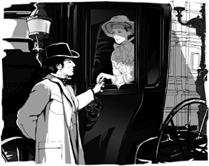
May laid her hand on Newland's. 'Goodbye, dearest,' she said.
He turned and hurried into his office, repeating to himself in a sort of song, 'It's all of two hours from Jersey City station to Mrs Mingott's! It's all of two hours – and it may be more!'
financial adj. relating to money or the management of money 财务的
dishonour n. a loss of honour or respect from other people, because you have behaved in a morally unacceptable way 耻辱
misbehaviour n. bad behaviour that is not acceptable to other people 不当行为
disapprove v. to think that someone or something is wrong or bad 不赞成
bang v. to hit something hard, making a loud noise 砰地敲
savings n. all the money that you have saved, especially in a bank 存款
court case a criminal or legal matter which involves a trial 诉讼案件
debt n. money that is owed to someone 债务
stroke n. a sudden serious illness when a blood vessel in the brain bursts 中风
doubtfully adv. in a way not sure that something is true or right 疑惑地，怀疑地
misfortune n. very bad luck, or something that happens to you as a result of bad luck 不幸
desert v. to leave someone or something and no longer help or support them 抛弃，离弃
put off to delay doing something or to arrange to do something at a later time or date, especially because there is a problem or you do not want to do it now 延期，推迟
convenience n. the quality of being suitable or useful for a particular purpose, especially by making something easier or saving you time 方便
convenient adj. useful to you because it saves you time, or does not spoil your plans or cause you problems 方便的
afterwards adv. after an event or time that has already been mentioned 后来
博福特的丑闻
8
博福特的丑闻
同年11月，阿彻太太举办了一次宴会。出席者包括珍妮、纽兰和梅，还有西勒顿·杰克逊和他妹妹索菲。他们一开始就谈到朱利叶斯·博福特的财务状况。博福特的生意急转直下，更糟的是，他似乎用一些非法手段试图去解决自己的问题。
“可怜的雷吉娜表妹！”阿彻太太面带忧虑地说。没有人真正喜欢博福特，把他的私生活往坏处想几乎成为一种乐趣。然而，他给妻子家族带来的耻辱太令人震惊，就连他的敌人都不愿幸灾乐祸了。如果有关她丈夫不当行为的传闻属实，那就没有什么能够挽救雷吉娜·博福特被社交界摒弃的命运。
话题之后转到斯特拉瑟斯太太的音乐晚会，晚会现在已经被纽约上流社会大部分人所接受——尽管阿彻太太不在其中。这位女士摇摇头，对梅说：“你知道吗，亲爱的，我仍未完全原谅你的表姐埃伦，因为她是最先参加周日晚会的宾客之一。”
梅脸红了，小声说：“嗯，埃伦——好吧，你能期待她怎么样呢？她曾经在国外生活——而且她对社交圈毫不在意。事实上，我也不知道她究竟会在意些什么。”
每个人都知道，奥兰斯卡伯爵夫人的家人强烈反对她拒绝回到丈夫身边的决定。毕竟，一个年轻女子的归宿应该是住在丈夫家中，尤其是她离开的方式是……嗯……如果有人愿意深究的话……
很快，女士们离开了，留下绅士们单独待在一起抽雪茄。这时，西勒顿·杰克逊对纽兰说：“如果博福特破产了，一些令人不快的事情就会随之暴露出来。你知道，他的钱并不是全都花在雷吉娜身上的。”
他的话纽兰没有听着。他正想着，为什么一提到埃伦的名字梅就脸红了。他与埃伦在波士顿共度的那个仲夏之日已经过去四个月了。自那以后他再也没有见过她，他不为人知的想法和期盼，大多和她有关。他曾给她写过一次信，问她什么时候能再见面，而她的回答只有三个字：“还不行。”
他注意到杰克逊先生又在说了：“可惜奥兰斯卡夫人拒绝接受她丈夫的最新提议。”
“可惜？究竟为什么？”
“嗯，她打算依靠什么生活呢，如果博福特——”
纽兰跳了起来，气愤地拍桌子，发出砰的一声。“你这样说是什么意思，先生？请解释一下！”
杰克逊先生说话时很平静，但他那双锐利的小眼睛颇有兴致地紧盯着纽兰的脸。
“嗯，亲爱的小伙子，明戈特老太太告诉我，家里已经大大削减了对伯爵夫人的补贴。而梅多拉·曼森的那点存款都存在博福特那儿。那么，如果博福特破产了，她将失去一切。因此，我无法想象，到那时，这两个女人将靠什么生活下去。”
纽兰知道，自己正怒火中烧，也许会不小心说出一些不明智的话，因此他把话题岔开，带杰克逊先生上楼去会客厅找女士们。
那天晚上，纽兰和梅在自己家里的客厅。纽兰看到梅俯身去点灯时，心想：“她真年轻啊！”这时，他感觉到了一丝恐惧。“我们都还年轻啊！这种生活还得没完没了地持续多少年！”
“听我说，”他说，“下个星期我可能得去一趟华盛顿，是公事。有一件重要的诉讼案件要开庭审理了。”
她想了一会儿，然后对他笑了笑：“换换环境对你有好处，”她说，“而且你一定要去看看埃伦。”她直视着他的眼睛，脸上露出开朗的笑容。
他们两人就这个话题只说了这么几句话。然而，按照他们接受训导使用的那套，这些话的言外之意是：“我支持家人劝服埃伦回到她丈夫身边。由于某种你没有主动告诉我的原因，你建议她不要回去。正是由于你的建议，才招致别人对她行为的种种非难。我知道你在华盛顿期间打算去看埃伦——也许你就是特意去华盛顿见她的。我完全同意你去见她——我希望你让她明白，如果她继续违抗家人的意愿将会导致什么样的后果。”
她一边朝门口走去，一边说：“我要去睡了，亲爱的。”她在门口转过身，停下来等着他来吻。
博福特的破产就发生在几天之后。他装出底气十足的样子，让许多人相信他的银行是安全的，于是源源不断地存钱进去。但这还不足以偿付他巨额的债务，于是他破产了。许多之前信任他的人也遭此厄运，关于他的恶劣行径就出现了难听的议论。这是华尔街历史上最糟糕的金融丑闻之一。
莱特布莱尔先生正在给纽兰讲述这场灾难的细节时，一封信函送到了年轻人手中。上面写道：
请尽快赶来外婆家。她突发中风——不知什么原因，她先过所有人知道了有关银行的可怕消息。洛弗尔舅舅外出打猎去了。可怜的爸爸觉得脸上无光，也生了病，不能出门。妈妈和我非常需要你。梅
纽兰赶到明戈特老太太家时，看到他妻子和岳母脸色苍白、面带焦虑。不过，医生还是相当乐观，而且老太太恢复健康的决心很快便安抚了家人的焦虑。
似乎是在前一天晚上，雷吉娜·博福特来拜见明戈特太太，恳求她的姑妈支持，让她和丈夫渡过难关。这个请求让明戈特太太气得说不出话。等她又能讲话之后，她把交谈的内容告诉了女儿韦兰太太。
“我对雷吉娜说：‘在这个家里，名誉终归是名誉，诚实终归是诚实，到我死了都不会变！’她又说：‘可我是您的侄女呀！’我就说：‘博福特给你穿金戴银时，你是他的太太。现在他让你灰头土脸，你还得继续做你的博福特太太。’”
也许是愤怒令明戈特太太中风。雷吉娜的行为让韦兰太太和梅感到惊恐万分。每个人都知道，妻子不应该要求娘家人掩盖她丈夫经济上的耻辱；无论坎坷还是坦途，无论逆境还是顺境，做妻子的只能接受命运。
当他们坐着讨论整件事的时候，用人请韦兰太太去明戈特太太的房间。她几分钟之后出来，看上去有些不悦。“她要我给埃伦·奥兰斯卡发一封电报，希望她马上过来。”她说。
他们沉默了片刻。“我想这电报一定得发了。”她接着说，语气迟疑。
“当然得发了。”梅说，“我们必须遵从外婆的意愿。”她转向纽兰，嫣然一笑。“你去替我们发电报好吗，纽兰？午饭前正好还来得及。”
她坐下来书写电文，写完后交给了纽兰，并笑着说：“真遗憾！这意味着你见不到埃伦了。”她转过身来对母亲解释道：“纽兰得去华盛顿处理一起诉讼案件。现在既然医生说外婆已经度过危险，似乎不应该让纽兰放弃这么重要的一项工作而留在这里，对吗？”
韦兰太太赶紧回答：“当然不应该，亲爱的。你外婆最不愿意那样做了。”
纽兰带着电文离开房间时，他听见岳母又说：“可她为什么要让埃伦来这儿呢？”梅用清澈的声音回应说：“也许是为了再次向她说明，她的职责是和丈夫在一起。”
当天下午，博福特破产的公告登上了大大小小的报纸。博福特无耻行径的传闻令整个纽约蒙上了一层阴影——他不仅欺骗人们说他们的存款很安全，而且在破产已成定局之后的二十四个小时里，银行还在吸纳资金。没有人同情他的妻子，因为她似乎没有认识到丈夫罪行的严重性，还把这场灾难说成是“运气不好”，并肯定“真正的朋友不会弃她于不顾。”然而，她真正的朋友则肯定会这样做。
明戈特老太太的身体继续好转，她下令不准任何人再对她提起博福特的名字。
第二天，韦兰一家接到电报，说奥兰斯卡夫人将于翌日傍晚从华盛顿赶回。纽兰和梅正好在韦兰家吃午饭，他们家就谁去泽西城火车站接埃伦的问题，展开了长时间的讨论。韦兰先生和韦兰太太那天下午要去看望明戈特太太，洛弗尔·明戈特一家很忙，也不能让梅独自一人去那么远的地方。
纽兰听到了他们的讨论，于是说：“我去接她吧？我从事务所离开很方便，我又可以坐梅的马车过去。”他说话的时候，心兴奋地咚咚直跳。
“噢，太谢谢你了，纽兰！”韦兰太太心存感激地说。梅则朝他露出满意的笑容。
梅的马车在外面等着，午饭之后她要把纽兰送回事务所。他们踏入马车坐定之后，她说：“我刚才不想让妈妈担心，可你明天怎么能去接埃伦呢，你不是要去华盛顿吗？”
“噢，我不去了。”纽兰说。
“不去了？为什么，出什么事了？”她的声音像银铃般清脆，并充满了妻子的关切。
“案子延期了几个星期。”
“延期了？好奇怪啊！我听妈妈说，莱特布莱尔先生明天要去华盛顿，为一个案子辩护。”
“嗯——就是那个案子。事务所的人不能全去呀。”
“这么说，案子没有延期？”她接着说，那种坚持很不寻常，让他都替她脸红了。
“没有，不过我去的时间推迟了，”他回答说。和对梅说谎话相比，他发现她想假装没有识破他，这事更是令他痛苦。
“我以后再去，这刚好能为你们家提供一点方便。”他说道。他说话时觉得她在盯着自己，于是他把目光转向她的眼睛，以免显得自己在回避她的注视。两人的目光交汇片刻，也许他们在彼此的目光中看到了更深的含义，那是两个人都不想看到……
梅愉快地赞同说：“是的，毕竟你能去接埃伦，确实是太方便了。妈妈刚才多高兴啊，你也看到了。”
“哦，我很高兴去接她。”马车停在他事务所门口，他从车上跳下来时，她把手放在他手上。“再见，最亲爱的。”她说。她的眼睛特别蓝，让他过后心想，那目光会不会是透过泪水看向他的。
他转过身，匆匆走进事务所，心里像唱歌一般重复着：“从泽西城车站到明戈特老太太家一共要两个小时！一共要两个小时——也许还更长！”
9 Ellen returns to New York
9
ELLEN RETURNS TO NEW YORK
The following evening Newland was waiting at Jersey City station for the Washington train. In his senseless schoolboy happiness he pictured Madame Olenska getting out of the train, then her arm in his as he guided her to the carriage, and then a journey that would go on for ever. He had so much to say to her!
The train came in, and he saw her pale face in the crowd of passengers. They reached each other, their hands met, and he drew her arm through his. 'This way – I have the carriage,' he said. After that it all happened as he had dreamed.
'Do you know,' he said, as they drove away from the station, 'I almost couldn't remember you? How can I explain? Each time you happen to me all over again.'
'Oh, yes, I know! I know! It happens to me too!'
'Ellen – Ellen – Ellen!'
She made no answer and he sat in silence, watching her as she looked out of the window. How little they knew of each other, after all! The precious moments were slipping away, but he had forgotten everything he meant to say.
'What a pretty carriage!' she said, suddenly turning her face from the window. 'Is it May's? She sent you to fetch me, then? How kind of her!'
Her mentioning May's name made him angry, so he burst out, 'Your husband's secretary came to see me, you know.'
'I'm not surprised. He'd met you in England, hadn't he?'
'Ellen – I must ask you one thing. Was it Rivière who helped you to get away – when you left your husband?'
'Yes. I owe him a great debt,' she replied calmly.
'I think you're the most honest woman I ever met!'
'Oh no – but probably one of the least difficult.'
'Well – you've had to look at things as they are.'
'Yes – I've had to look at wickedness, it's true.'
'It hasn't blinded you!'
'It doesn't blind one, but it dries up one's tears.'
The answer seemed to come from depths of experience beyond Newland's reach.
'If you're not blind, then, you must see this can't last,' he said. 'Our being together – and not together.'
'No. You shouldn't have come today,' and suddenly she turned, threw her arms around him and pressed her lips to his. In a moment she drew away, and they sat silent and unmoving, until Newland started speaking hurriedly.
'Don't be afraid of me. A stolen kiss isn't what I want. Look, I'm not even trying to touch your sleeve. When we're apart, and I'm looking forward to seeing you, every thought is burnt up in a great flame. But then you come and you're so much more than I remembered, and what I want of you is so much more than an hour or two, with weeks of thirsty waiting between, that I can sit perfectly still beside you like this, just quietly trusting my dream to come true.'
For a moment she was silent. 'What do you mean by trusting it to come true?' she whispered.
'Why – you know it will, don't you?'
'Your dream of you and me together?' She burst into a sudden hard laugh. 'You choose a good place to tell me about it!'
'You mean, in my wife's carriage? Shall we get out and walk? I don't suppose you mind a little snow?'
She laughed again, more quietly. 'No, I don't want to walk, because I want to see my grandmother as soon as possible. We'll sit quietly, and we'll look, not at dreams, but at realities.'
'The only reality for me is this.'
There was a long silence. 'Is it your idea, then, that I should live with you as your mistress, since I can't be your wife?'
He was shocked by her plain speaking, and had difficulty finding the words. 'I want – I want to get away to a place where we could simply be two human beings who love each other, who are the whole of life to each other, and nothing else will matter.'
She laughed. 'Oh my dear – where is that country? Have you ever been there? Believe me, it's a miserable little place!'
'Then what exactly is your plan for us?' cried Newland.
'For us? But there's no us in that sense! We're only Newland Archer, husband of Ellen Olenska's cousin, and Ellen Olenska, cousin of Newland Archer's wife, trying to be happy behind the backs of the people who trust them.'
'Ah, I'm beyond that,' whispered Newland.
'No, you're not! You've never been beyond. And I have,' she said in a strange voice, 'and I know what it looks like there.'
He sat silent, in wordless pain. Then he rang the bell to tell the driver to stop. 'I'll get out here,' he said, opening the door and jumping out. 'You're right, I shouldn't have come.' She bent forward, about to speak, but he had already called out the order to drive on. As the carriage rolled away, he felt something stiff and cold on his face, and realized that he had been crying, and the icy wind had frozen his tears.
That evening Newland had dinner at home with May, who did not mention Ellen Olenska once. After dinner they sat together in the sitting room. May was doing her sewing, while Newland was reading. Occasionally he raised his eyes from his book and looked at May with secret despair. He would always know her thoughts; never would she surprise him by an unexpected mood or a new idea. Now she was simply becoming a copy of her mother, and mysteriously, in the same way, trying to turn him into a Mr Welland. He stood up impatiently, and at once she looked up.
'What's the matter, dear?'
'The room's too warm. I want a little air.' He pulled the heavy curtains and opened a window, so that he could put his head and shoulders out into the icy darkness.
'Newland! Do shut the window. You'll catch your death.'
'Catch my death!' he echoed, and felt like adding, 'I've caught it already. I am dead – I've been dead for months now.'
As he walked back to his chair, he laid a hand on her hair. 'Poor May!' he said.
'Poor? Why poor?' she asked with a little laugh.
'Because I shall never be able to open a window without worrying you,' he replied, also laughing.
For a moment she was silent. Then she said very low, her head bent over her sewing, 'I shall never worry if you're happy.'
'Ah, my dear! And I shall never be happy unless I can open the window!'
'In this weather?' she said. Without replying he buried his head in his book again.
Six or seven days passed. Newland heard nothing from Madame Olenska and became aware that her name would not be mentioned in his presence by the family. He did not try to see her, but a plan was slowly taking shape in the back of his mind.
Then one day May told him her grandmother wanted to see him, and Newland hurried over to Mrs Mingott's house. His plan was simple. He would see Ellen there and find out on which day and by which train she was returning to Washington. He would join her on that train, and travel with her, as far as she wanted to go – his choice would be Japan. He would leave a note for May that would prevent his ever coming back.
But old Mrs Mingott told him with great delight that she had managed to persuade Ellen to stay in New York and look after her. Newland felt confused. He would be able to see Ellen now and then, but their future would be limited to secret meetings and letters. He would find himself telling more lies to May, and going against habit and honour and all the ancient rules he and his people had always believed in...
As he was walking down Fifth Avenue, he saw Mrs Mingott's carriage outside the Beauforts' house, and knew Ellen must be visiting Regina Beaufort. He waited, and stopped Ellen as she was coming out of the front door.
'I must see you tomorrow – somewhere we can be alone,' he said. 'At the Museum of Art, in the park? At half-past two?'
She turned away without replying, and got quickly into the carriage. 'She'll be there!' he told himself confidently.
In the Museum of Art they walked slowly through the rooms. There were no other visitors, and their steps echoed loudly.
'It's a strange place,' said Madame Olenska.
'Some day, I suppose it'll be a great museum.'
He sat down and watched the light movements of her figure, so girlish even under her heavy furs, as she looked at the paintings.
'What is it you wanted to tell me?' she asked.
'I believe you came to New York because you were afraid of my coming to Washington. Did you know I was planning to?'
She looked down. 'Well – yes. I knew.'
'Well, then?' he insisted.
'Well, then. This is better, isn't it? We shall hurt others less. Isn't it, after all, what you always wanted?'
'To meet you in this way, in secret? It's the opposite of what I want. I think it's horrible!'
'Oh, I'm so glad! So do I!' she cried out.
'Then, what is it, in God's name, that you think is better?'
Instead of answering, she whispered, 'I promised to stay with Grandmother, because I thought I'd be safer here.'
'Safer from me? Safer from loving me?'
'Safer from harming other people.' She looked at him with a kind of terror, and blushed. 'Shall I – once come to you, and then go home?' she suddenly said in a low clear voice.
'Dearest!' said Newland, the blood rushing to his forehead. 'But what do you mean by going home?'
'Home to my husband.'
'And you expect me to say yes to that?'
'What else is there? I can't stay here and lie to the people who've been good to me. I can't go away with you and destroy their lives, when they've helped me to remake mine.' She turned away. 'I must go,' she said.
He followed, and caught her hand. 'Well, then, come to me once,' he said, unable to bear the thought of losing her. 'When?' he insisted. 'Tomorrow?'
She hesitated. 'The day after.'
'Dearest!' he said again. For a moment they continued to look into each other's eyes, and he saw that her face, even paler now, was flooded with a deep inner happiness. Then she walked hurriedly away, turning in the doorway to wave goodbye.
The next evening Newland and May went to the opera, as guests of the van der Luydens. The Swedish singer Christine Nilsson was singing in Faust, just as she had done two years before, when Newland had first seen Ellen in her grandmother's box. Tonight Newland had moved to sit with some of his men friends, and from here he had a good view of his wife as she sat in the van der Luydens' box.
'How innocent and trusting she looks!' he thought. He remembered how nobly she had once offered to give him up, and suddenly he decided to tell her the truth, to throw himself on her generosity, and ask for the freedom he had once refused.
He got up and walked round the theatre, slipping into the back of the van der Luydens' box. 'I've got a bad headache,' he whispered to May. 'Will you come home with me?'
May said a few words to her mother and Mrs van der Luyden, and soon she and Newland were driving home.
They went into their sitting room together. 'Hadn't you better go to bed at once?' she asked anxiously.
'My head's not as bad as that,' Newland replied. 'There's something important I want to say to you – about myself.'
She sat silent, looking extremely pale, but calm.
'Madame Olenska —' he said, but his wife raised her hand to stop him. The gaslight shone on her gold wedding ring.
'Oh, why should we talk about Ellen tonight? Is it really worthwhile, dear? You've understood her, no doubt, better than we all did; you've always been kind to her. But what does it matter, now it's all over?'
'All over – what do you mean?'
'Why – she's going back to Europe. Grandmother agrees, and has arranged to make her independent of her husband.'
Newland turned away and covered his face. May sat without moving or speaking. At last he turned back to her.
'It's impossible,' he said. 'How do you know that?'
'I saw Ellen yesterday – at Grandmother's. And I had a note from her this afternoon. Do you want to see it?'
He could not find his voice. She handed him a short letter, which Newland took with a trembling hand and read. It said:
May dear, I have at last made Grandmother see that if I return to Europe, I must live by myself – she has been as kind and generous as ever. I am going back to Washington to pack, and I sail from New York next week, with poor Aunt Medora. If any of my friends want to try to change my mind, please tell them it would be useless. Ellen
Newland burst out laughing wildly. 'Why did she write this?' he asked.
May looked at him with her clear blue eyes. 'I suppose because we talked things over yesterday. I told her I understood how hard it had been for her here. I knew you'd been the one friend she had always felt sure of, and I wanted her to know that you and I were the same – in all our feelings. 'She added slowly, 'She understood my wishing to tell her this. I think she understands everything.'
She went up to Newland, and taking one of his cold hands, pressed it quickly to her face. 'My head aches too. Good night, dear,' she said, and turned to the door.
It was, as Mrs Archer smilingly said to Mrs Welland, a great event for a young couple to give their first big dinner. It had been May's idea to give a dinner for Ellen, the evening before she sailed for Europe. Now, as Newland looked round at the familiar faces at his table – May, the van der Luydens, Lawrence Lefferts, Sillerton and Sophy Jackson, the Lovell Mingotts, and Ellen – he began to realize that New York society almost certainly thought he and Ellen were lovers, but they were pretending his was a wonderfully happy marriage. And now that Ellen was leaving, it was easy for them all to pretend that they admired and respected her. He hated this dishonesty, and began to feel like a prisoner, constantly guarded by his friends and relations.
He could not remember what he said to anyone during dinner, and soon it was time for his guests to leave. There had been no chance to speak privately to Ellen. 'Goodbye,' he said to her in the hall, as he helped her on with her coat. 'But I shall see you soon in Paris.' His voice sounded loud in his ears.
'Oh,' she whispered, 'if you and May could come...!'
And then she was getting into the van der Luydens' carriage, and he could no longer see her face.
A few minutes later May came to find him in the library. 'It did go well, didn't it?' she said.
Newland made an effort to speak. 'Now that you're here, there's something I must tell you. I tried to, the other night.'
'Yes, dear. Something about yourself?'
'Yes. I've been horribly tired lately —'
'Oh, I've seen it coming on, Newland! You've been so wickedly overworked at the office!'
'Perhaps it's that. Anyway, I want to make a break – to go away at once. On a long trip, away from everything —'
'A long trip? Where, for example?'
'Oh, I don't know, India – or Japan.'
She stood up, and came nearer to his chair.
'As far as that? But I'm afraid you can't, dear.' Her voice trembled a little. 'Not unless you take me with you. That is, if the doctors will let me go... but I'm afraid they won't. You see, Newland, I've been sure since this morning of something I've been hoping for so much...'
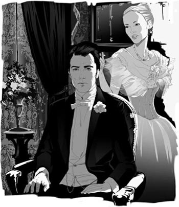
'But I'm afraid you can't, dear,' said May. 'Not unless you take me with you.'
He stared up at her, his face deathly white, and she knelt down to hide her face against his knee.
'Oh, my dear,' he said, with his cold hand on her hair. There was a devilish kind of laughter inside his head.
'You didn't guess?' asked May.
'Yes – I – no. That is, of course, I hoped...' They looked at each other for a moment and again fell silent. 'Have you told anyone else?' he added.
'Only my mother and yours.' She paused, blushing. 'And Ellen. You know I told you I'd had a long talk with her one afternoon?'
'Ah...' said Newland, his heart stopping.
He felt that his wife was watching him closely. 'Did you mind my telling her first, Newland?'
'Mind? Why should I?' He made a last effort to think clearly. 'But that was a fortnight ago, wasn't it? I thought you said you weren't sure till today.'
Her colour burned deeper, but she kept her eyes on his. 'No, I wasn't sure then – but I told her I was. And you see I was right!' she cried, her blue eyes wet with victory.
passenger n. someone who is travelling in a vehicle, plane, boat etc, but is not driving it or working on it 乘客
precious adj. something that is precious is valuable and important and should not be wasted or used without care 珍贵的
slip away if something such as an opportunity slips away, it is no longer available （时间等）悄然逝去
blind v. to permanently destroy someone's ability to see 使瞎，使失明
impatiently adv. in a way annoyed because of delays, someone else's mistakes etc 不耐烦地
echo v. if a sound echoes, you hear it again because it was made near something such as a wall or hill 发出回声
girlish adj. behaving like a girl, looking like a girl, or suitable for a girl 像女孩子的
remake v. to build or make something again 重制，翻新
generosity n. a generous attitude, or generous behaviour 宽宏大量，胸怀宽广
gaslight n. the light produced from burning gas 煤气灯光
dishonesty n. behaviour in which you deceive or cheat people 不诚实
overworked adj. made to work too hard 过分劳累的
devilish adj. very bad, difficult, or unpleasant 邪恶的，魔鬼似的
fortnight n. two weeks 两星期
victory n. the success you achieve by winning or achieving something 胜利
埃伦返回纽约
9
埃伦返回纽约
第二天傍晚，纽兰在泽西城车站等候从华盛顿开来的火车。他怀着学生时代那种懵懂的幸福感，想象着奥兰斯卡夫人从车上下来，挽着他的手臂，在他的带领下走向马车，然后踏上了永无止境的旅途。他有那么多话要和她讲！
火车到站了，接着他在成群的乘客中间发现了她苍白的脸。他们走向对方，手握到了一起，他让埃伦挽着他的手臂。“这边走——我驾来了马车。”他说。此后的情形和他梦想中的一模一样。
“你知道吗？”他说，马车正驶离车站，“我几乎想不起你的样子了。怎么说呢？每次见到你，都好像初次见面那样。”
“哦，对，我知道！我知道！我也有这种感觉！”
“埃伦——埃伦——埃伦！”
她没有回应。他一言不发地坐在那里注视着她，而她则望向窗外。他们之间毕竟互相了解得太少了！宝贵的时光在一点点流逝，而他却把想说的话忘得一干二净。
“好漂亮的马车啊！”她说着突然从窗边转过脸来，“是梅的吗？那么，是梅让你来接我的？她真是太好了！”
她提到梅的名字让他气恼，于是他脱口而出：“你丈夫的秘书来见过我，你知道吧。”
“我并不觉得意外。他是在英国和你相识的，对吗？”
“埃伦——我必须问你一件事。是里维埃帮你逃走的吗——当你离开你丈夫的时候？”
“是的，我欠他一个大人情。”她平静地回答。
“我想你是我见过的女人中最诚实的一个！”
“噢，不——不过也许算个最不难对付的女人吧。”
“嗯——你不得不实际地看待事实。”
“对——我不得不正视邪恶，这是事实。”“这并没有让你失去判断力！”
“它没有让我失去判断力，可它挤干了我的眼泪。”
这个回答好像来自经历的深渊，一个对纽兰来说遥不可及的地方。
“如果你没有失去判断力，那么你一定知道事情不能这样继续下去，”他说，“我们在一起，却又不在一起。”
“对，今天你就不应该来。”她突然转过身，伸开双臂搂住他，双唇紧紧贴在他的唇上。她随即抽身离开，然后他们静静地坐着，一动不动，直到纽兰匆忙发话。
“不要怕我。我想要的并不是一个偷偷摸摸的吻。瞧，我甚至都没想要碰你的衣袖。我们分开的时候，我一直盼望着见到你，所有的想法都被熊熊烈火燃尽了。可现在你来了，远远不止我记忆中的那样；在无数个星期焦急的等待后，我想要从你身上得到的，也远远不止一两个小时。因此，我才能像这样安安静静地坐在你身边，平静地期待着梦想成真。”
她沉默了片刻。“你说期待梦想成真是什么意思？”她小声问。
“呃——你知道它会实现的，对吗？”
“你梦想着和我在一起？”她猛然大笑，“你真是选了一个好地方来告诉我！”
“你的意思是说在我妻子的马车里？那我们下去走走好吗？我想你不会介意外面下着点儿雪吧？”
她又笑起来，不过声音轻了一些：“不，我不想下去走走，因为我想尽快见到奶奶。我们就这样安静地坐着，不要看梦想，而是来看一看现实吧。”
“对我来说，这就是唯一的现实。”
接下来是长时间的沉默。“那么，你的想法是我应该跟你在一起，做你的情妇，既然我不可能成为你的妻子？”
她直白的话语令他感到震惊，他艰难地寻找着措词：“我想——我想逃到一个地方，在那儿我们仅仅是两个彼此相爱的人，我们是彼此生活的全部，其他任何事情都无关紧要。”
她笑了：“哦，亲爱的——那个国度在哪儿？你去过吗？相信我，那只是一个糟糕的小地方！”
“那你对我们的事到底作何打算呢？”纽兰大声说。
“我们的事？从那个意义上讲并不存在我们！我们仅仅是埃伦·奥兰斯卡的表妹夫纽兰·阿彻，和纽兰·阿彻妻子的表姐埃伦·奥兰斯卡，两个企图背着信赖他们的人寻欢作乐的人。”
“啊，我要的不只是这些。”纽兰低声说。
“不，你要的仅此而已！你从来没有尝试过要得更多，可我尝试过，”她用一种陌生的声音说，“我知道那是什么样子。”
他静静地坐着，心中感到无言的痛苦。接着，他拉铃叫车夫把车停下。“我要在这儿下车。”他说完打开车门跳下去，“你说对了，我就不应该来。”她俯身向前，想要说什么，可他已经大声吩咐车夫继续赶车。马车向前驶去，他觉得脸上有些又硬又冷的东西，这才意识到自己哭了，刺骨的寒风冰封了他的眼泪。
当天晚上，纽兰和梅在家里吃饭，梅对埃伦·奥兰斯卡只字未提。晚饭后，他们一起坐在会客厅，梅做她的针线活儿，纽兰则在看书。他偶尔从书本上抬起眼睛看着梅，心里感到绝望。他对她的想法总是一清二楚，她绝对不会有他意想不到的情绪或新想法。如今，她逐渐变成她母亲的翻版，而不知怎的，她还试图用同样的方法把他变成另一位韦兰先生。他烦躁地站起身，她立刻抬起头。
“怎么了，亲爱的？”
“房间里太热了，我需要透透气。”他拉开厚重的窗帘，打开窗户，这样他就能把头和肩探到冰冷的黑夜中。
“纽兰！关上窗户吧。你会生病的。”
“生病！”他重复道，很想接着说，“我已经生病了。我正病着——已经病了好几个月了。”
他走回座椅，一只手放在她头发上，说道：“可怜的梅！”
“可怜？为什么可怜？”她略微一笑，问道。
“因为只要我打开窗户，你就会担心。”他回答，也笑了起来。
她沉默了片刻。然后低声说：“只要你高兴，我绝不会担心。”她边说边埋头做着针线活儿。
“啊，亲爱的！除非我把窗户打开，否则我永远不会高兴的！”
“在这种天气？”她说。他没有回答，又埋头去看他的书。
六七天过去了。纽兰没有听到奥兰斯卡夫人的任何消息。他开始明白，家里人不会再当着他的面提起她的名字。他也不想见她，不过一个计划已经在他脑海中慢慢成形。
一天，梅告诉纽兰，外婆想见他，于是纽兰匆匆赶往明戈特老太太的家。他的计划很简单。他会在那里见到埃伦，然后弄清楚她返回华盛顿的日期和车次。他要到车上与她会合，并和她一起去旅行，只要她想，去多远都行——他个人会选择去日本。他还会给梅留下一封信，以杜绝他回来的任何可能。
然而，明戈特老太太满怀喜悦地告诉他，她已经设法说服埃伦继续留在纽约照顾她。纽兰觉得脑子里乱糟糟的。他将能够时常见到埃伦，但他们的未来仅仅局限于幽会和通信。他将对梅说更多的谎言，而他的行事将违背他及他圈子里的人一直深信不疑的习惯、名誉和所有古老的规则……
他沿着第五大道往前走时，看见明戈特太太的马车停在博福特家外面，他知道肯定是埃伦在拜访雷吉娜·博福特。于是他等在那里，当埃伦从前门出来的时候拦住了她。
“我明天一定要见你——在一个我们可以单独相处的地方，”他说，“在公园的艺术博物馆如何？两点半？”
她没有回答便转身离开，很快上了马车。“她会去的！”他自信地对自己说。
在艺术博物馆里，他们慢慢地出入于各间展室。里面没有其他参观者，他们的脚步声发出了响亮的回音。
“这地方真奇怪。”奥兰斯卡夫人说。
“我想，有一天它会成为一个很棒的博物馆。”
他坐下来，欣赏她在看画作时身体轻盈的动作。即使穿着厚重的毛皮外衣，她的动作也显得像个小姑娘似的。
“你想和我说什么？”她问。
“我认为你来纽约是因为害怕我到华盛顿去。你知道我打算要去吗？”
她低下头说：“嗯——是的，我知道。”
“嗯，那怎么样？”他继续问。
“嗯，那么还是这样更好，不是吗？我们给别人的伤害会少一些。说到底，这不正是你一直希望的吗？”
“就这样与你幽会？这与我想要的刚好相反。我觉得这糟透了！”
“哦，真高兴，我也这样觉得！”她叫道。
“既然这样，你究竟认为怎样才更好呢？”
她没有回答，而是小声说：“我答应和奶奶呆在一起，是因为我觉得在这里危险较少。”
“危险？因为我这个人还是因为爱我？”
“因为不会伤害到其他人。”她面带恐惧地看着他，两颊泛起红晕。“我来你身边一次，然后就回家好吗？”她突然问道，声音低沉但清晰。
“最亲爱的！”纽兰说，额角通红，“可你说回家是什么意思呢？”
“回我丈夫家。”
“你指望我会同意吗？”
“那还有什么办法呢？我不能留在这里，对那些善待我的人撒谎。我也没法在他们帮助我重新开始生活之后，和你一走了之而毁掉他们的生活。”她转身离开。“我必须走。”她说道。
他跟了上去，一把抓住她的手。“好吧，既然这样，那就来找我一次吧。”他说。一想到要失去她，他就无法忍受。“什么时候？”他追问道，“明天吗？”
她犹豫了一下，“后天吧。”
“最亲爱的！”他又说。他们的目光继续对视了一会儿。他发现她的脸此刻更加苍白，却洋溢着一种内心深藏的愉悦。然后，她匆匆离开，走到门口时转过身来挥手告别。
翌日傍晚，纽兰和梅受范德卢顿夫妇之邀去了歌剧院。瑞典歌唱家克里斯蒂娜·尼尔森正在演唱《浮士德》。两年前纽兰第一次看见埃伦出现在她祖母的包厢里时，尼尔森唱的也是这一曲。这天晚上，纽兰和他的一些男性友人坐在了一起，从这里他可以清楚地看到坐在范德卢顿夫妇包厢里的妻子。
“她看起来多么单纯、多么容易信赖别人啊！”他想。他记起她曾经多么高尚地提出要放弃他。突然，他决定对她说出真相，以便仰仗她的宽宏大量，请求得到他曾经拒绝过的自由。
他起身绕行到范德卢顿夫妇的包厢，悄悄从后面溜了进去。“我头疼得厉害，”他小声对梅说，“跟我回家好吗？”
梅跟母亲及范德卢顿夫人说了几句话，很快便同纽兰一起驾车回家了。
他们一起走进了自己家的会客厅。“你赶紧上床休息不好吗？”她担心地问道。
“我的头痛不那么厉害。”纽兰回答，“我有一件重要的事想对你讲——是关于我自己的。”
她默默地坐着，脸色非常苍白，但表情却很平静。
“奥兰斯卡夫人——”他说道，但妻子举起一只手示意他住口。煤气灯光照射在她那枚金制的结婚戒指上。
“噢，今晚我们干吗要谈论埃伦呢？真的有意义吗，亲爱的？毫无疑问，你比我们所有人都更理解她，你一直对她很好。不过，既然都已经过去了，这还有什么关系呢？”
“都过去了——你这话什么意思？”
“嗨——她要回欧洲了。外婆同意了，并且已经作好安排，让她能不依靠她丈夫而独立生活。”
纽兰转过身去，捂住了脸。梅坐在那里，没有动，也没有说话。最后，他回转身来面朝着她。
“这不可能。”他说，“你是怎么知道的？”
“我昨天见到埃伦了——在外婆家里。今天下午我收到她一封信。你想看看吗？”
他一时张口结舌。她递给他一封短信，纽兰用颤抖的手接过，看了起来。上面写着：
亲爱的梅，我终于让奶奶明白，假如我回到欧洲，我必须自己生活——她一向都是这么善良，这么宽宏大量。我要赶回华盛顿打点行装，下周和可怜的梅多拉姑妈一起从纽约乘船离开。如果我的朋友有谁想劝我改变主意，请告诉他们那是没有用处的。埃伦
纽兰爆发出一阵狂笑。“她为什么要写这些？”他问道。
梅用清澈的蓝眼睛望着他。“我想是因为我们昨天谈论了一些事情。我告诉她，我理解她在这里的处境有多么艰难，我知道你是她一直信赖的唯一朋友。我想让她明白，我和你一样——我们的感情是完全一致的。”她缓缓地接着说，“她理解我想跟她说这话的心情。我觉得她一切都明白了。”
她走到纽兰跟前，拿起他一只冰冷的手，迅速按在自己的脸颊上。“我的头也有些痛。晚安，亲爱的。”她说完，转身朝门口走去。
正像阿彻太太笑着对韦兰太太说的那样，一对年轻夫妻第一次举办大型宴会可是件大事。梅提议，在埃伦乘船去欧洲前夜为她举办一场宴会。此刻，纽兰环顾餐桌旁那些熟悉的面孔——梅，范德卢顿夫妇，劳伦斯·莱弗茨，西勒顿·杰克逊和索菲·杰克逊，洛弗尔·明戈特夫妇和埃伦。他开始意识到，纽约社交圈几乎可以认定他和埃伦是一对情人，可他们却装作认为他的婚姻非常幸福美满。如今埃伦即将离开，他们所有人也轻而易举地装出他们钦慕并尊敬她的样子。他讨厌这种伪装，他开始感觉自己像个囚犯，一直被他的朋友和亲人们看守着。
他记不得自己在宴会期间和其他人说过些什么。很快就到了宾客们告辞的时间了，他却一直没有机会和埃伦私下交谈。“再见，”他在门厅里对她说，同时帮她把外套穿上，“不过我很快就会到巴黎去看你。”他觉得自己的声音听上去很响亮。
“噢，”她小声说，“如果你和梅能来……！”
她踏进了范德卢顿夫妇的马车，他再也看不到她的脸了。
几分钟之后，梅来图书室里找他。“宴会确实进行得很顺利，对吗？”她说道。
纽兰鼓起勇气说：“既然你来了，那我有件事必须告诉你，那天晚上我就想说的。”
“好啊，亲爱的。一件关于你自己的事？”
“是的。我最近一直觉得特别累——”
“嗯，我看到你越来越累了，纽兰！你在事务所一直劳累过度！”
“也许是吧。不管怎样，我想休息一段时间——马上就走。去一个长途旅行，抛开一切——”
“长途旅行？到什么地方去？”
“哦，我不知道，去印度——或者日本。”
她站起身来，走到他的椅子跟前。
“要去那么远吗？不过恐怕你不能走，亲爱的。”她的声音有些颤抖，“除非你带上我。就是说，如果医生让我去的话……不过恐怕他们不会允许。你知道吗，纽兰，从今天上午起，我已经肯定了一件我一直非常期盼的事……”
他盯着她，脸色煞白。她蹲下身子，把脸埋在他的膝盖上。
“噢，亲爱的。”他说着，用冰冷的手抚摸她的头发，脑海内回荡着一阵邪恶的狂笑。
“你没有猜到？”梅问道。
“猜到了——我——没有。我是说，当然我希望……”两人对视片刻，再次陷入了沉默。“你告诉过别人吗？”他又问。
“只有我妈妈和你母亲。”她停顿了一下，脸涨得通红，“还有埃伦。你知道，我告诉过你，有一天下午我们进行了一次长谈。”
“啊……”纽兰说，他的心几乎停止了跳动。
他感觉到妻子在目不转睛地注视着他。“纽兰，我先告诉了她，你介意吗？”
“介意？我为什么要介意？”他尽最后努力理清思路，“不过那是两个星期之前的事了，对吗？你刚才不是说今天才确定下来的吗？”
她的脸红得更厉害了，不过她继续注视着他。“对，当时我还没有把握——但我告诉她我有了。你看我说对了！”她大声说，蓝色的双眼噙满了胜利的泪水。
10 Newland visits Paris
10
NEWLAND VISITS PARIS
Newland sat at the desk in his library, and looked round at the room where most of the real things of his life had happened over the last thirty years. There his wife, nearly twenty-six years ago, had blushingly told him she was expecting a baby. There his elder son Dallas had taken his first steps towards him, shouting, 'Dad!' There his daughter Mary, who was so like her mother, had announced her engagement to the dullest of Reggie Chivers' sons. And there his great friend Theodore Roosevelt had told him, 'Forget about the professional politicians, Archer! It's men like you the country wants.'
'Men like you' – how those words had impressed Newland! How eagerly he had answered the call! At last he had found something worthwhile to do, and he worked long hours in local government. After a while, however, he felt he had done what he could, and returned thankfully to a quieter life. He was admired and respected in New York; his days were full, and they were filled usefully. 'I suppose that's all a man should ask,' he thought.
Something he knew he had missed – the flower of life. But when he thought, so despairingly at first, of Ellen Olenska, over the years she became the picture of perfection, and that picture kept him from thinking of other women. He had been a good husband to May, and when she had suddenly died – carried off by the illness through which she had nursed their youngest child, Bill – he had honestly mourned her. Their long years together had shown him that it did not matter so much if marriage was a dull duty, as long as the couple always behaved in a responsible, dutiful way to each other. If they failed to do that, the marriage just became a battle of selfish interests. Thinking back over his life, he saw there was honour in his past, and he mourned for it. After all, there was good in the old ways.
His eyes rested on his first photograph of May, which still kept its place on his desk. There she was, just as he had seen her under the Florida orange trees. And she had remained the same – never quite as noble as on that day, but never far below – brave, generous, trusting, but with so little imagination that the world of her childhood had fallen into pieces and rebuilt itself without her noticing the changes. Her children protected her by hiding their modern opinions from her, as Newland hid his. And she died thinking the world a good place, full of happy, loving families like her own; she could bear to leave it because she trusted that, whatever happened, Newland would continue teaching Dallas to obey the same rules that he had been taught, and that Dallas (when Newland followed her) would do the same for little Bill. Of Mary she was as sure as of her own self. So, having saved little Bill from death, and given her life in the effort, she went happily to her place in the Archer family grave.
The telephone rang, and Newland answered it. How far they were from the days when a messenger boy was the fastest way of communicating!
'Chicago wants you.'
Ah, it must be Dallas, who was there on business for his firm.
'Hallo, Dad. Yes, Dallas here. I say – how do you feel about sailing to France on Wednesday on the Mauretania? I've got to be back in early June for my wedding' – the voice broke into a laugh – 'so we must hurry. I say, Dad, do come. Think it over? No, sir, not for a minute. If you can find a single reason why not – no, I knew you couldn't. Oh good! I knew you'd agree.'
It would be their last trip together, because in June Dallas was marrying Fanny Beaufort – she was Julius Beaufort's daughter by his second wife, Fanny ring, the mistress he had married after poor Regina died. It was tempting for Newland to take this last chance of being alone with his first-born son. And France! He had not been there since his honeymoon. May had disliked travelling, and preferred the conversation of friends and family to that of foreigners.
Since her death, nearly two years before, there had been no reason for Newland to continue in the same routine. But the worst of doing his duty was that it had made him unable to do anything else. There are moments, however, when a man's imagination suddenly rises above its daily level, and looks down over all the crossroads and turning points in the long road of life. Newland hung there and wondered...
Looking out of his hotel window at the streets of Paris in the spring sunshine, he felt his heart beating with a young man's confusion and eagerness. In the first impatient years he had often imagined the scene of his victorious return to Paris and Ellen, but now that he was here, he felt shy, old-fashioned, dull – just a grey shadow of a man compared with the brilliant figure he had dreamed of being...
Dallas's hand came down cheerfully on his shoulder. 'Hallo, Father, this is wonderful, isn't it?' They stood for a while, and then the young man continued, 'By the way, I've got a message for you: the Countess Olenska expects us both at half-past five.'
He spoke lightly, carelessly, but turning to look at him, Newland thought he could see a knowing smile in his eyes.
'Didn't I tell you?' Dallas went on. 'Fanny made me promise to see Madame Olenska. She was awfully good to Fanny as a little girl, when Mr Beaufort sent Fanny over to France from Argentina. Fanny didn't have any friends, and Madame Olenska was very kind to her. So I telephoned today and asked to see her.'
Newland stared at him. 'You told her I was here?'
'Of course – why not?' Dallas slipped his arm through his father's. 'I say, Father, what was she like? Confess – you and she were great friends, weren't you? Wasn't she awfully lovely?'
'Lovely? I don't know about that. She was different.'
'Ah – there you have it! She's different, and one doesn't know why. It's exactly what I feel about Fanny.'
His father looked shocked. 'But my dear boy – you and Fanny... that's quite a different situation...'
'Oh Dad, don't be so old-fashioned! Wasn't she – once – your Fanny? I mean, the woman you'd have given up everything for, but you didn't.'
'I didn't,' echoed Newland, frowning.
'No, dear old boy, you didn't. But Mother said – she sent for me the day before she died, you remember? She said she knew we were safe with you, and always would be, because once, when she'd asked you to, you'd given up the thing you most wanted.'
Newland received this strange communication in silence. At last he said in a low voice: 'She never asked me.'
'No, you never did ask each other anything, did you? You just sat and watched each other, and guessed at what was going on underneath. But I think you older people knew more about each other's private thoughts than we ever have time to find out about our own.'
It seemed to take an iron hand from Newland's heart to know that his wife had, after all, guessed and pitied. For a long time he looked out of the window, while the stream of life rolled by... 'I'm only fifty-seven!' he found himself thinking. Summer dreams were past, but surely it was not too late for a quiet autumn of friendship, with Ellen as his companion.
Together he and Dallas walked through the streets towards Madame Olenska's apartment, the son full of excited enthusiasm for Paris, the father busy with his thoughts.
More than half a lifetime divided him from Madame Olenska. She had lived in this ancient beautiful city, among people he did not know, in a rich atmosphere of theatres, and paintings, and books, and conversations he could only guess at. During all those years he had lived with his unchanging memory of her, but her memory of him might no longer be as bright as the flame he carried in his own heart.
They found the building, and looked up at the fifth floor to a balcony, and windows with pale green shutters, which were open.
'I think I'll sit down for a moment,' said Newland, pointing to a bench under some trees in the square.
'Why – aren't you well?' his son asked.
'Perfectly well. But I'd like you to go up without me.'
'But Dad, does that mean you won't come up at all?'
'I don't know,' said Newland slowly.
'But what shall I say?'
'My dear boy, don't you always know what to say?'
'Very well. I'll say you're old-fashioned, and prefer walking up the stairs because you don't like lifts.'
His father smiled. 'Just say I'm old-fashioned.'
Puzzled, Dallas shook his head and went inside.
Archer sat down on the bench, and continued to look up at the balcony and the windows with the pale green shutters. In his mind he could see Dallas entering the room with his rapid, light step, and a dark lady with a pale face, who would look up quickly and hold out a long thin hand with three rings on it.
'It's more real to me here than if I went up,' he suddenly heard himself say, and the fear of losing that last shadow of reality kept him in his seat.
He sat for a long time on the bench in the thickening darkness, his eyes never turning from the windows. At last a lamp was lit inside the apartment, and a servant closed the shutters.
At that, Newland Archer stood up slowly and walked back alone to his hotel.
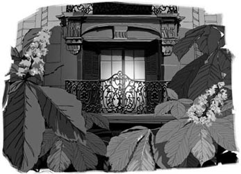
professional adj. relating to a job that needs special education and training 职业的
thankfully adv. feeling grateful and glad about something, especially because a difficult situation has ended or been avoided 感激地
despairingly adv. in a way showing a feeling that you have no hope at all 感到绝望地
perfection n. the state of being perfect 完美
mourn v. to feel very sad and to miss someone after they have died 哀悼
rebuild v. to build something again, after it has been damaged or destroyed 重建
communicate v. to exchange information or conversation with other people, using words, signs, writing etc 通讯
crossroads n. a place where two roads meet and cross each other 十字路口
victorious adj. having won a victory, or ending in a victory 胜利的
knowing adj. showing that you know all about something, even if it has not been discussed directly 会意的，心照不宣的
frown v. to make an angry, unhappy, or confused expression, moving your eyebrows together 皱眉
underneath adv. directly under another object or covered by it 在下面
enthusiasm n. a strong feeling of interest and enjoyment about something and an eagerness to be involved in it 热情
shutter n. a wooden or metal cover for windows, to keep out the heat and light 百叶窗
纽兰造访巴黎
10
纽兰造访巴黎
纽兰坐在图书室的写字台前，环视这间屋子。过去三十多年来，他一生中大部分真实的事情都发生在这间图书室。大约二十六年前，他的妻子在这里红着脸告诉他她怀孕的消息。他的长子达拉斯在这里第一次向他蹒跚走来，喊着“爸爸！”长相酷似母亲的女儿玛丽在这里宣布与雷吉·奇弗斯最乏味的那个儿子订婚。在这里，他伟大的朋友西奥多·罗斯福告诉他：“去他的职业政治家吧，阿彻！国家需要的是像你这样的人才。”
“像你这样的人——”这一席话曾经让纽兰何等刻骨铭心！他曾经何等热情地响应召唤！最终，他找到了一些有意义的事情去做，并在当地政府机构辛勤地工作。然而，一段时间过后，他感觉自己已经竭尽所能，于是欣然隐退，重新过上较为平静的生活。在纽约，他受人仰慕和尊重。他的日子过得很忙碌，也过得很充实。“我想，这就是一个人的全部追求。”他想。
他知道他遗失了一样东西——生命之花。起初，他想到埃伦·奥兰斯卡的时候心情非常绝望。然而这么多年来，她已经成为完美的化身，使他不会去想别的女人。对梅来说，他一直是个好丈夫。他们最小的孩子比尔生病，她照顾他时突然染病而离世，他对她衷心哀悼。他们多年的共同生活已经向他证明，只要婚姻双方能够一直做到对彼此尽责，即便是一种枯燥的责任也无关紧要。如果他们没有做到，那么婚姻就会变成一场私利的斗争。回首往事，他知道自己也曾有过荣耀的时刻，同时也为之痛心。毕竟，旧的方式也有好的一面。
他的目光停留在他得到的第一张梅的照片上，它依然占据着写字台上惯常的位置。照片上的她，正如当年他在佛罗里达的橘树下见到的样子。她始终如一，再也没有像那天那样高尚，但也没有差很多——她勇敢、大度、容易信赖他人，但特别缺乏想象力。她儿时的那个世界已经分崩离析并进行了重塑，她都丝毫没有觉察。孩子们像纽兰一样向她隐瞒自己新潮的观念，以此来保护她。她去世时依然认为人世间是个好地方，到处是像她自己家那样幸福美满的家庭。她能够安心地离开人间，因为她相信，无论发生什么事，纽兰都会向达拉斯继续灌输他自己曾被教导必须遵从的那些观念，而达拉斯（当纽兰随她而去之后）也会将同样的观念教导给小比尔。至于玛丽，她对她就像对自己那样有把握。因此，从死亡的边缘拯救回小比尔之后，她便撒手而去，心满意足地到阿彻家的墓穴中就位。
电话铃响了，纽兰摘下电话。从前信差是最快的通讯方式，他们离那些日子多么遥远了！
“芝加哥有人要和你通话。”
啊，一定是达拉斯，他被公司派往那里出差。
“嗨，爸爸。是的，我是达拉斯。我说——你觉得周三乘坐‘毛里塔尼亚’号去法国怎么样？我得在六月初赶回来结婚呢。”话音突然变成笑声——“所以我们得赶紧。我说，爸爸，一定要来啊。考虑一下？不，先生，一分钟也不行。如果你能为不去找到一条理由——对了，我知道你不能。噢，太好了！我就知道你会同意的。”
这将是他们最后一次共同的旅行了，因为在六月份，达拉斯就将迎娶范妮·博福特——她是朱利叶斯·博福特和第二任妻子范妮·林所生的女儿。可怜的雷吉娜去世之后，他就娶了之前的这位情人。对纽兰来说，这是单独跟长子一起相处的最后机会，颇具吸引力，而且是去法国！自从蜜月归来之后，他就再未踏足那里。梅不喜欢旅行，与其和外国人说话，她宁愿和朋友家人交谈。
她去世快两年了，自那以后，纽兰已经没有理由再继续原来的那一套。但是，尽责的最坏后果就是，他没有能力再去做其他事情了。然而，有时候，想象力会突然超越平日的水平，俯视人生漫长曲折的道路上所有的十字路口和转折点。纽兰呆坐在那里，思索着……
纽兰从旅馆窗口向外张望着春日照耀下的巴黎街头，他感觉自己的内心躁动着年轻人的困惑和渴望。在头几年焦躁不安的日子里，他常常会想象自己战胜一切，重返巴黎，和埃伦在一起。可如今他真的来到这里，却觉得自己畏缩、老派、乏味——与他曾经梦想成为的光辉形象相比，他只是一个灰色的身影……
达拉斯高兴地把手搭在他的肩头，说：“嘿，爸爸，真是太棒了，不是吗？”他们站了一会儿，接着年轻人又说：“对了，我有个口信要告诉你：奥兰斯卡伯爵夫人五点半等着见我们。”
他说得很轻松，有些漫不经心。纽兰转过身看着他，发现他眼神里有一丝会意的笑。
“我没告诉过你吗？”达拉斯继续说，“范妮让我保证一定要去看望奥兰斯卡夫人。范妮还是个小姑娘的时候，博福特先生把她从阿根廷送来了法国，夫人对她特别好。那时，范妮一个朋友也没有，奥兰斯卡夫人对她很友善。所以今天我给她打了电话，说想去看她。”
纽兰盯着他说：“你告诉她我也来了？”
“当然啦——为什么不呢？”达拉斯把胳膊塞到父亲的胳膊里，“我说，爸爸，她长得什么样？说实话吧——你和她过去是好朋友，对吗？她是不是非常可爱？”
“可爱？我不知道。她是与众不同。”
“啊——你说得对！她与众不同，但又不知道为什么。这跟我对范妮的感觉完全相同。”
父亲看上去非常惊讶。“可是，亲爱的孩子——你和范妮……那完全是另一回事……”
“噢，爸爸，别这么迂腐了！她不是——曾经——是你的范妮吗？我是说，就是你愿为她抛弃一切的女人，只不过你没那样做。”
“我没有那样做。”纽兰皱着眉头重复道。
“是的，亲爱的老男孩，你没有那样做。但妈妈说过——她去世的前一天把我叫过去，你还记得吗？她说，她知道我们跟你在一起很安全，而且会永远安全，因为有一次，当她要求你时，你放弃了最向往的东西。”
纽兰默默地回味着这句奇怪的话。终于，他小声说道：“她从来没有要求过我什么。”
“对，你们俩从没有相互要求过什么，对吗？你们只是坐着互相观察，猜测对方心里想些什么。可我觉得，你们老一辈人了解对方心里的想法，比我们了解自己的想法还多。我们都没有时间去了解自己。”
纽兰的心头仿佛卸下了沉重的铁枷——妻子终究猜出了他的心事并表示了同情。他久久地望着窗外，生活的急流在身边滚滚向前……“我才五十七岁！”他发觉自己在想。夏日的梦想已然过去，然而陪在埃伦身边，享受宁静秋日友谊的果实肯定还不算太迟。
他和达拉斯一起穿街走巷，朝奥兰斯卡夫人的公寓走去。儿子对巴黎充满了兴奋、热情，而父亲则陷入了自己的思绪之中。
他与奥兰斯卡夫人分开了大半生时间。她住在这座古老而美丽的城市里，生活在他不认识的人们中间。这里到处都是剧院、画作、书籍，还有那些他只能去猜测其内容的谈话。这些年里，他对她一直怀着不变的记忆，而她对他的记忆也许不再像他深藏内心的激情那样鲜明了。
他们找到了那个大楼，抬头望向五楼，那里有一个阳台，窗户上的浅绿色百叶窗正开着。
“我想我要坐一会儿。”纽兰说，手指着广场树下的一张长凳。
“怎么了——你不舒服吗？”儿子问道。
“我好得很。不过，我想让你一个人上去。”
“可是，爸爸，你是不是压根儿就不打算上去呢？”
“我不知道。”纽兰缓缓地说。
“可我要怎么说呢？”
“亲爱的孩子，你不是总知道该说什么吗？”
“好吧。我就说你守旧，不喜欢坐电梯，宁愿自己爬楼梯。”
父亲笑着说：“说我守旧就够了。”
达拉斯一脸困惑地摇摇头，走了进去。
阿彻坐到长凳上，继续抬头望着那个阳台和开着浅绿色百叶窗的窗户。他可以想象达拉斯迈着轻快的步伐走进房间，一位肤色较深、面孔白皙的夫人迅速抬起头来，伸出一只瘦长的手，上面戴着三枚戒指。
“对我来说，呆在这儿比上去更真实。”他突然听到自己在说。由于害怕失去最后那个真实的影子，他一直呆在座位上没有动。
暮色渐浓，纽兰在长凳上坐了许久，目光始终没有离开过窗户。终于，公寓里点起了一盏灯，用人关上了百叶窗。
这时，纽兰·阿彻慢慢站起身来，一个人朝旅馆的方向走了回去。
ACTIVITIES：Before Reading
ACTIVITIES
Before Reading
1 Read the back cover and the story introduction. What do you know now about the people in the story? Circle Y (Yes) or N (No) for each of these sentences.
1) Ellen Olenska hopes to return to her husband. Y / N
2) May thinks it is important not to offend people. Y / N
3) Newland used to be in love with Ellen. Y / N
2 This story is set in New York in the 1870s. Can you guess what kind of social rules there were in those days? Decide which of these statements might be true or not true.
1) Divorce had to be avoided to save a family's good name.
2) People had a duty to express their feelings openly.
3) Arriving late at social events was a fashionable thing to do.
4) It was acceptable for young unmarried women to live alone.
5) It was acceptable for married men to have affairs with women.
3 The story begins with Newland Archer engaged to May Welland. Here are four possible developments. Choose the one that you think most likely, or the one that you would like to happen.
1) Newland will marry May.
2) Newland will marry Ellen.
3) Newland will marry a different woman.
4) Newland will never marry.
ACTIVITIES：While Reading
ACTIVITIES
While Reading
1 Read Chapters 1 to 3. Answer these questions in two ways; first, from the point of view of New York society in the 1870s; and secondly, from the point of view of your own culture, in your own time. Are there differences between the two sets of answers?
1) Was Ellen Olenska wrong to leave her husband, the Polish Count, and come home to America?
2) At his mother's dinner, was Newland right to say that Ellen had nothing to be ashamed of?
3) Was Newland wrong to visit Ellen at her home without making sure that May knew about his visit first?
4) Was Mr van der Luyden right to warn Ellen not to accept invitations to unsuitable events like Mrs Struthers' party?
2 Before you read Chapter 4, can you guess which of these things Newland will do?
1) He will advise Ellen against divorce, as her family wishes.
2) He will offer Ellen his complete support, divorce or no divorce.
3 Read Chapters 4 to 6. Who is speaking, to whom, and what are they talking about? What do the words tell us about them?
1) 'This is a very small world, compared to the one you've lived in.'
2) 'But my freedom – isn't that worth it?'
3) 'You could so easily have made a mistake – anyone can.'
4) 'I can't love you unless I give you up.'
5) 'I wonder if she would be happier with her husband, after all.'
4 Read Chapters 7 and 8, and try to summarize the characters' feelings by completing these sentences.
1) Ellen has been avoiding Newland because ________.
2) Newland loves Ellen more than ever and ________.
3) May must suspect that Newland is in love with Ellen but ________.
5 Before you read Chapter 9, choose some advice to offer Newland and Ellen before they meet at the station. Explain your choices.
Advice for Newland:
1) Tell Ellen you will never meet her alone again.
2) Ask Ellen to run away with you to Europe as soon as possible.
3) Persuade Ellen to stay in New York and meet you in secret.
Advice for Ellen:
4) Go back to your husband, the Count.
5) Stay in New York and become Newland's mistress.
6) Tell May about your relationship with Newland.
6 Before you read Chapter 10, which happens more than twenty-five years later, imagine what might happen. Choose some of these ideas, or think of some of your own.
1) Newland leaves May the next day, takes the next boat for Europe, finds Ellen, and they stay together, unmarried, for life.
2) May dies in childbirth; Ellen returns, and marries Newland.
3) Some years later Ellen returns to New York and wants to have an affair with Newland, but he is no longer interested.
4) Newland stays with May, and never sees Ellen again.
5) A year later, Newland leaves May and joins Ellen in Europe, but their life together is bitter and unhappy.
ACTIVITIES：After Reading
ACTIVITIES
After Reading
1 Read these sentences about, or said by, Newland, Ellen, and May. Explain what you think they mean. What, in your opinion, do the sentences tell us about the attitudes of these characters?
1) Newland: It was his duty to hide his past from her, and her duty, as a marriageable girl, to have no past to hide.
2) Ellen: 'The real loneliness is living among all these kind people who only ask me to pretend!'
3) May: 'Mother would not understand us wanting to do things so differently from other couples.'
2 Here is May's diary, for the day after her grandmother's stroke. Fill each gap with one suitable word.
Now I know, there is no _____ he loves her. He looked so _____ at lunch today (the way he _____ to look when we were first _____), when he offered to take my _____ and pick her up from the _____, and poor Mother (she would be _____ if she knew!) accepted so very_____. Then of course he had to _____ to me – he has done that_____, but this time it seemed much _____ somehow. I do wonder if he _____ how completely I understand him, and _____ him as well, for the awful _____ that I can see he is _____. Does he know how much I _____ him, in spite of everything? I'll _____ give him up, unless he himself _____ to leave me. I can only _____ that one day his heart will _____ to me. He is so very _____ to me.
3 Here are the thoughts of five characters from the story. Who are the characters, and who or what are they thinking about? What has just happened in the story?
1) 'There'll be trouble if he gets involved with that foreign girl – most unsuitable, she is. I've seen the signs before in young men – losing their temper, not wanting a word said against the lady, talking all that nonsense about divorce. Ah well. I think I'll just have another of his cigars before I go.'
2) 'Oho! Now there's a lovely-looking woman, just entering old Mrs Mingott's box. Everybody's looking at her. Who can she be? I'll get Regina to find out. I like a low-cut dress – why hide what you've got, that's what I say. She looks a lot more fun than half the women here tonight.'
3) 'Oh, I'm so excited! It's such wonderful news! I'll never get to sleep again now. She's a delightful girl, just right for Newland – I'm sure they'll be happy together. But I can't understand why he was laughing like that. It was almost uncontrollable. I'm surprised he didn't wake Mother...'
4) 'That's no way for a grand-niece of mine to behave. There'll be no helping hand from me, that's for sure, and I don't want to hear her name spoken in this house again! Brought me close to death, she has, she and that wicked husband of hers!'
5) 'It's lovely to have him here with us, and it's nice to see that he's so much in love, but I don't think he has any idea how much there is to do before a wedding. There are still all the sheets and towels to sew, and May's dress – so many preparations to make. I'm afraid he'll just have to wait...'
4 When May talks to Ellen about Newland, she also tells her she is expecting a child. A fortnight later she reports this conversation to Newland (see the end of Chapter 9). Complete what May and Ellen say to each other in this conversation.
MAY: Ellen dear, there's something ________.
ELLEN: What is it, May? Sit down beside me and ________.
MAY: Ellen, ever since you returned to New York, I know what a difficult time ________.
ELLEN: Yes, it hasn't ________. I'm not sure I'll ever understand________.
MAY: We New Yorkers are rather different ________. And you have been ________.
ELLEN: Yes, a very long time. And I am so grateful to ________.
MAY: He's very fond ________.
ELLEN: And I am of him. He's the one friend I ________.
MAY: I know that, and I've been glad that he ________. Of course, in the future he'll have other family responsibilities, so he may not________.
ELLEN: Family...? Do you mean, dear May, that ________?
MAY: Yes, I am. And Newland will ________!
ELLEN: Yes, I'm sure he will be. He doesn't ________?
MAY: Not yet. I'll tell him very soon. But I wanted you ________.
ELLEN: Yes, thank you for telling me, May. I'm so pleased ________. It's ________.
MAY: And what ________?
ELLEN: My plans? Oh, I – well, I think I will ________. I hope to persuade Grandmother to ________.
MAY: I'm sure, if you explain, Grandmother will ________.
ELLEN: I hope so, May – indeed, I do hope so...
5 Which of these statements do you agree or disagree with? Give your reasons.
1) It's better not to try to turn a dream from the past into reality.
2) Women ought to be free, as free as men.
3) It doesn't matter if a marriage is dull, as long as the couple respect each other.
4) When two people love each other, they may have to go against public opinion.
5) Sometimes you have to give up your own wishes, to save other people from misery.
6) A wife simply has to accept the rough as well as the smooth, the bad times as well as the good.
6 What did you think of this story? Think about these questions and how you would answer them, and write a short report of the story.
1) In every love triangle, there are always winners and losers. In this story, who were the winners and who were the losers, in your opinion?
2) Was Newland right to marry May, when he was already in love with Ellen?
3) When May offered Newland his freedom, should he have broken his engagement, and run away with Ellen?
4) How did you find the ending? Did you feel it was satisfying, unexpected, or disappointing? Describe your reaction.
封底
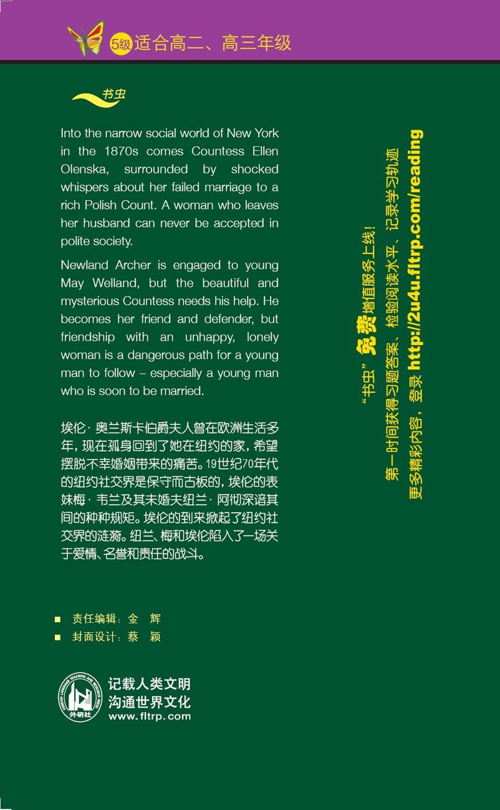